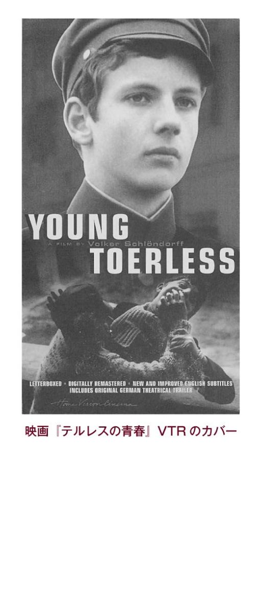
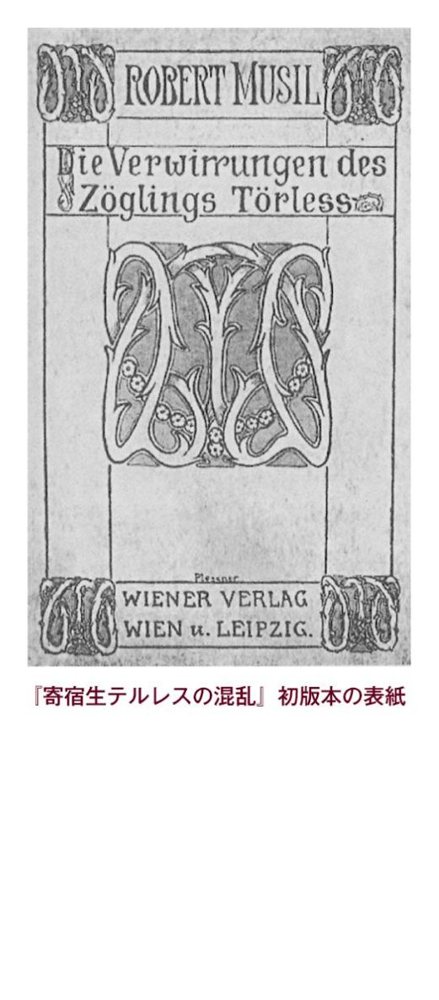
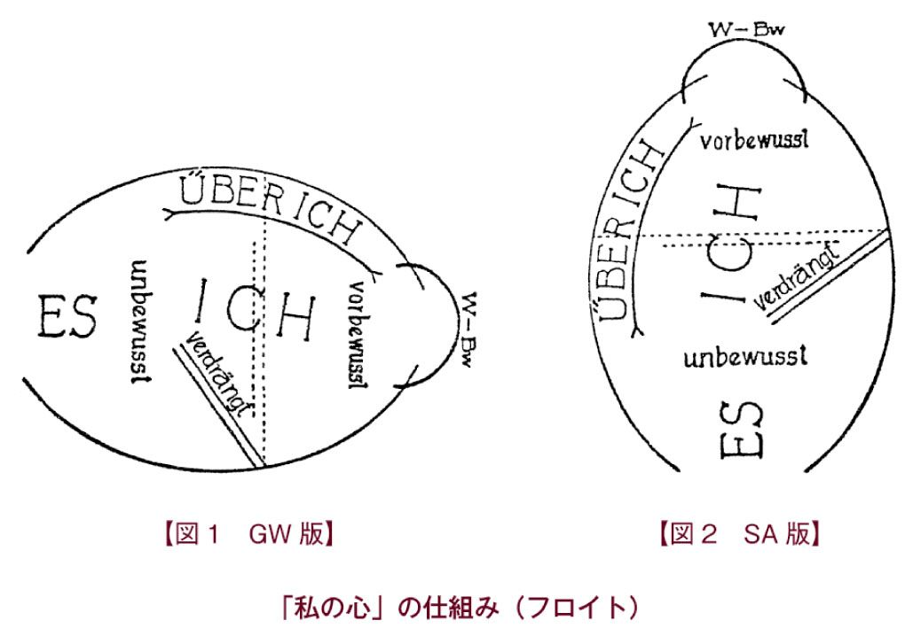

| 寄宿生テルレスの混乱 | |
| ムージル | |
| (2008) | |
寄宿生テルレスの混乱
ムージル
丘沢静也訳
Title: Die Verwirrungen des Zöglings Törleß
1906
Author: Robert Musil
『寄宿生テルレスの混乱』 目次
©Shizuya Okazawa 2008
◎ご注意
本作品の全部または一部を無断で複製、転載、改竄、公衆送信すること、および有償無償にかかわらず、本データを第三者に譲渡することを禁じます。
個人利用の目的以外での複製等の違法行為、もしくは第三者へ譲渡をしますと著作権法、その他関連法によって処罰されます。
寄宿生テルレスの混乱
ロシアまでつながっている鉄道の、小さな駅。
平行する4本のレールが、黄色い砂利の幅のひろい路床を、左右にどこまでもまっすぐ伸びている。どのレールの横にも、汚れた影のように黒っぽい線がくっついている。排気で地面が焼けたのだ。
油性ペンキを塗った低い駅舎の向こうには、馬車の轍で傷められた広い道が駅のホームにむかっている。道の両端は、あちこち踏んづけられた地面と区別がつかなくなっていたけれど、アカシアの木のおかげで、どこにあるのか見当がついた。からからに乾いて、ほこりとすすで窒息した葉っぱをつけて、悲しそうにアカシアの木が2列に並んで、道の両端に立っていた。
悲しい色のせいなのだろうか。霞のためにぐったりとなり、力をなくして青ざめた午後の太陽の光のせいなのだろうか。人も物も、人形劇の舞台から切りとられたみたいに、どこか無関心で、生気がなく、機械的だった。ときどき駅長が、おなじ間隔で執務室から出てきては、おなじ角度で首をまわして、線路のずっと向こうの先の踏切番小屋の信号を見た。まだ急行の接近を知らせる気配がない。国境で大きく遅れてしまったのだ。駅長は、腕をまったくおなじように動かして懐中時計をとりだし、首をふってから、また姿を消した。ちょうどそれは、時間になると、人形たちが古い塔時計から出てきては消えるのに似ていた。
線路と駅舎のあいだの、踏み固められた幅のひろい帯のような地面を、陽気な若者たちが、左右から中年の夫婦をはさむようにして、ぶらぶら歩いている。夫婦は、ちょっと騒々しい会話の中心にいた。しかしそのグループの楽しそうな雰囲気も、本物ではなかった。うるさくて陽気な笑い声は、ほんの数歩でとぎれるようだ。目に見えない強い抵抗にあって地面に沈むかのように。
テルレス宮廷顧問官夫人は40歳くらいだ。厚手のヴェールの後ろに、泣いてちょっと赤くなった悲しい目を隠している。別れの時が来た。つらかった。ひとりっ子をふたたび長いあいだ、見知らぬ人たちの手にゆだねなければならない。かわいいわが子をこの目で見守ってやることもできない。
この町は首都から遠く離れたところにあった。帝国の東部に位置し、過疎で、雨の少ない農耕地だ。
なぜテルレス夫人は、わが子をこんなに遠く離れた、居心地の悪い土地に置いておくことに耐えなければならないのか。有名な全寮制の学校があったからだ。前世紀に宗教財団の土地に建てられてからずっと、この学校がへんぴな場所に置かれたままなのは、たぶん、成長期の青少年を大都会の有害な影響から守るためだろう。
ここでは、この国の上流階級の子息たちが教育をうけており、卒業後は大学に行ったり、軍務についたり、官吏になったりする。どの進路をとった場合でも、また、上流の社交界においても、Ｗ市にあるこの全寮制学校の出身であることは、特別の推薦状となるのである。
4年前、そういうわけでテルレスの両親は、子どもの立身出世のため、この学校への入学を実現させようと考えたのだった。
その決心が、後でたくさんの涙を流させることになった。これでお別れだと学校の門がテルレスの背後で閉まった瞬間から、テルレス少年は、激しく恐ろしいホームシックにほとんどずっと苦しんだ。授業時間も、公園のように大きな庭の、緑に恵まれた広い草地で遊ぶことも、それ以外に学校が生徒たちに用意したお楽しみも、テルレスの心をとらえることはできなかった。そういうものにはほとんど参加しなかった。どんなものも、いわばヴェールごしに見ているにすぎなかった。日中ですらしょっちゅう、こみあげてくるすすり泣きを抑えるのに苦労した。夜寝るときは、いつも涙を流していた。
家に手紙を書いた。ほとんど毎日のように。手紙のなかでだけテルレスは生きていた。それ以外のことは、なにをしても、影のような無意味なできごとにしか思えなかった。時計の文字盤の数字のように、どうでもいい小さな駅にしか思えなかった。あってもなくても時間の見当くらいつく。だが手紙を書いているときは、際立ったもの、特別なものが自分のなかにあると感じた。毎日のように冷たく無関心に押し寄せてくる灰色の感情の海のなかから、テルレスの心には、すばらしい陽光と色につつまれた島のようなものが浮かびあがった。日中、遊んでいるときや授業のとき、夜になったら手紙を書くんだと思うと、黄金の鍵を目に見えない鎖につないで隠しもっているような気分になった。誰にも姿を見られていないとき、ぼくはその鍵を使って、不思議な庭園の門を開けるんだ。
ここで奇妙なことが起きた。突然、身を焦がすほど両親が恋しくなったのだが、それはテルレス自身、これまで経験したことのない気持ちだったのである。それまで、こんな気持ちになるなんて思ってもいなかった。この学校へは自分から進んで入学したのだし、最初の別れの日に母親が涙を流して取り乱してしまったときだって、テルレスのほうは笑っていたのだ。今回も何日かは、ひとりで、わりあい元気にやっていたのだが、突然、荒々しく心に突きあげてくるものがあった。
ホームシックだと思った。両親のことが恋しいのだと思った。しかし実際は、もっとあいまいで、もっと複雑に合成されたものだった。というのも「そのあこがれの対象」である両親の姿は、もともとそこには含まれていなかったのだから。つまりそれは、愛する人間についての、いわば可塑的な記憶なのである。たんに回想された記憶ではなく、からだの記憶なのだ。その記憶はすべての感覚に話しかけ、すべての感覚に保管されているので、私たちは、他者が黙っていて姿を見せなくても、そばにいると感じてしまうのである。その記憶は残響のように、ほんのしばらくのあいだ共振しただけですぐに消えた。そのときテルレスは、たとえば「お父さん、お母さん」──と、たいていつぶやいていたのだが──の姿を思い浮かべることができなくなっていた。思い浮かべようとすると、とんでもない痛みがそのかわりに首をもたげてくるのだ。痛みがあこがれとなってテルレスを折檻し、しっかりつかんで離さなかった。熱い炎がテルレスを痛めつけると同時に虜にしたのだ。両親への思いは、自己中心的な苦しみを自分で産みだすための、たんなるきっかけにすぎなくなっていった。その苦しみがテルレスを、官能的なプライドのなかに閉じこめた。そのプライドは、へんぴなところにある礼拝堂に似ていた。礼拝堂では、燃えている百本のロウソクと百体の聖像の目から出てくる香煙が、自分で自分をムチ打っている修道僧たちの痛みのあいだにふりまかれている。────
「ホームシック」がしずまって、しだいに消えていくと、テルレスの気質というものがかなりはっきりしてきた。ホームシックが消えたからといって、待ち望んでいた満足がえられたわけではない。若いテルレスの心にはからっぽの穴が残った。ぽっかり穴が開いていて、心のなかにはなにもない。テルレスは気づいた。なくなったのは、たんなるあこがれではなく、ポジティブなものだった。魂の力のようなものだった。痛みという口実のもと、テルレスのなかで咲き終わってしまったものだったのだ。
だが、いまではそれも過ぎたこと。それまで感じたことのない幸せの源泉は、涸れてはじめて感じられるようになったのだ。
目覚めかけていた魂の、情熱的な痕跡は、その頃になるとテルレスの手紙から消えていた。そのかわり学校の生活や新しくできた友だちのことが詳しく書かれた。
だがテルレス自身、自分のことを、みすぼらしくて葉が落ちたように感じていた。まだ実を結ばない花を咲かせた後、はじめての冬を迎える若木のような気分だった。
しかし両親は満足だった。強くて、なにも考えない、動物のような優しさでテルレスを愛した。テルレスが休暇で帰ってきて学校に戻ってしまうたびに、宮廷顧問官夫人には、家がからっぽで死に絶えたように思えた。テルレスが去ってから何日かは、目に涙を浮かべて、部屋から部屋を歩いてまわり、わが子の目に触れ指に触れたものを愛撫した。わが子のためなら両親はどんなことでもする覚悟だった。
テルレスの手紙にぎこちない感動や、情熱的で反抗的な悲しみが書かれていると、両親は心を痛め、とても神経質になった。だがその後に、陽気で満足そうに軽率なことが書かれていると、ほっと胸をなでおろした。これで危機をひとつ乗り越えたのだと思って、テルレスを力いっぱい応援した。
どちらの場合も両親は、魂の発達の症候だとは気づかなかった。むしろ痛みも安心もおなじように目下の状況の当然の結果なのだ、と受け取っていた。自分の足で立った少年がはじめて内面の力を発達させようとして失敗したのだ、というふうには考えなかった。（訳者あとがきへ戻る）
ところでテルレスは自分にとても不満だった。自分を支えてくれるかもしれない新しいものを求めて、あちこち手探りしたがダメだった。
この時期、なにがテルレスの内部にあって、その後の発達を準備したのか、を伝えるのに格好のエピソードがある。
ある日、Ｈ侯爵の息子が入学してきた。帝国でもっとも影響力があり、もっとも古くて、もっとも保守的な貴族の家系だ。
みんなは、その貴族の息子の穏やかな目が退屈で気取っていると思った。立っているときには片方の腰を突き出し、話をするときには指をゆっくり動かす仕草を、女みたいだとあざ笑った。とくにみんなが馬鹿にしたのは、入学のとき両親ではなく、それまでの家庭教師に連れてこられたことだ。神学博士にして教団の神父だった。
だがテルレスは最初の瞬間から、強い印象を受けた。もしかしたら、宮廷に出入りすることのできるプリンスだったからかもしれない。いずれにしても、テルレスが知り合ったのは、これまでとはちがう種類の人間だった。
地方貴族の古城の沈黙と宗教的なお勤めの沈黙が、まだこのプリンスにはくっついているようだった。歩くときは、柔らかくしなやかにからだを動かした。ちょっとはにかむように肩をすぼめて歩くのだが、これは、背筋を伸ばして、誰もいない広間をつぎからつぎへと通っていく習慣に特有のものだ。そういう姿勢だと、誰もいない部屋の死角を走ってくる者がいても、ぶつからないですむらしい。
プリンスとつき合うことによって、テルレスは、繊細な心理学を楽しむようになった。いわば人を見る目というものを養う道がひらかれたのである。相手の声の落とし方によって、相手がものを手にとる仕草によって、いやそれどころか相手の沈黙がもっているトーンによって、そして相手がどんな姿勢で自分のからだを部屋にはめこむのかによって、われわれは相手のことを認識し、受容する。そして、あらかじめ相手の人格を先取りできるようになるのだ。手でつかむことができ、語ることのできるものは、むきだしの骨格に似ている。それを核にしてそのまわりを取り囲んでいるものが、精神的・人間的な存在であるための流儀なわけだから、われわれが観察すべきなのは、動いていて、手でつかまえにくく、だからこそ本来の、まるごとの流儀なのだ。
短いあいだだったが、テルレスの暮らしは牧歌的だった。新しい友だちの信仰心と衝突することはなかった。自由にものを考える市民の家庭で育ったテルレスにとって、もともとプリンスの信仰心は、完全に異質なものだった。むしろテルレスは疑いもせずそれを受けいれた。それどころかそれがプリンスの長所であるとすら思えたほどだ。信仰心がプリンスという人間を高めていたからである。テルレスは自分とプリンスはまったく似ておらず、比較すらできないと感じていた。
プリンスと交際していると、自分が、道から離れたところに建っている礼拝堂にいるような気分になった。教会の窓ごしに陽の光をじっとながめ、このプリンスの魂のなかにむなしく積みあげられた金箔の飾りをじっくりながめて楽しんでいるうちに、もともと自分はこんなところにいる人間じゃないという思いが、すっかり消える。そしてプリンスの魂の姿をぼんやり想像するようにまでなっていた。奇妙な法則によってからまりあった美しいアラベスク模様を、なにも考えることができないまま、指でなぞっているような気分だった。
それから突然、ふたりに破局がやってきた。
馬鹿だったから、と、テルレス自身、後で認めざるをえなかったのだが。
あるとき、ついに宗教のことで言い争いをしてしまった。その瞬間、すべてが終わったのだ。テルレスの知性が、テルレスとは関係がないような顔をして、制止をふりきり、きゃしゃなプリンスになぐりかかったのである。テルレスは理性の側からプリンスをさんざんあざけり、プリンスの魂が住んでいる金銀線細工の建物を野蛮に壊した。ふたりは怒って別れた。
それ以来、ふたりはひと言も口をきくことがなかった。たぶんテルレスはぼんやりと気がついていた。意味のないこと、やっちゃったなあ。はっきりとではないが、感情に即して考えてみた。杓子定規の知性が、まったく間の悪いときに、上品なお楽しみをつぶしちゃったな。だがそれは、テルレスの力の及ばないことなのだ。以前のことにたいするあこがれのようなものは心のなかにずっと残っていたのだろうが、テルレスはもう別の流れに吞みこまれてしまったらしい。どんどん流されて以前のことから離れていった。
それからしばらくしてプリンスも、この学校では心身ともにすぐれず、退学した。
こうしてテルレスのまわりは、すっかりからっぽで退屈になった。しかしそのうちテルレスも年齢を重ね、頭をもたげてきた性が、ぼんやりと、しだいに熟しはじめた。この発達段階にふさわしい友だちも何人か新しくできた。バイネベルクやライティング、モテやホーフマイアーのことだが、この仲間が後でとても重要な存在になる。この若者たちといっしょにテルレスは、さっき両親を駅まで見送ったのだ。
奇妙なことにこの連中は、同学年で一番のワルだった。才能があり、もちろん良家の出でもあったが、ときどき不作法なまでに乱暴で反抗的だった。こういう連中とのつき合いに魅力を感じたのは、たぶん、テルレスが自立していなかったからだ。プリンスと絶交してから、テルレスの依存ぶりは最悪だった。この連中は、プリンスから方向転換した延長線上の存在でさえあった。どちらの方向も、あまりにも繊細で感じやすいテルレスの不安にほかならなかった。それとは対照的に、ほかのクラスメートたちは、健康で、たくましく、柔軟だったのだが。
テルレスはすっかりこの連中の影響下にあった。以下に述べるような精神状態だったからである。つまり、テルレスの年齢だとギムナジウムでは、ゲーテや、シラーや、シェイクスピアを、もしかしたらもう現代作家なんかさえ読んでいた。そしてそれらが消化不良のまま指先から出てくる。ローマ悲劇が書かれ、じつに過敏な抒情詩が書かれるのだ。何ページにもわたる句読点の衣装を、やわらかいレースの透かし編みのようにまとって、抒情詩がこちらに歩いてくる。そういう文章は、それ自体は滑稽なものだが、精神が安全に発達するためにははかりしれないほど貴重である。なにしろ外からやってきた連想や、借り物の感情のおかげで、若者は、その年頃の、危険なくらいに柔らかい魂の地面を通過することができるのだ。その年頃の若者は、自分自身にたいして何者かでなければならないのだが、まだ未完成なので、実際には何者でもない。後になってその年頃の痕跡が残っているか、残っていないかは、人によるけれど、そんなことはどうでもいい。もうみんな自分と折り合っているのだ。危険なのは移行期の年齢のときだけである。もしも移行期の若者が自分の滑稽さを思い知るようなことがあれば、その足もとから地面がくずれ落ちるかもしれない。目を覚ました夢遊病者のように墜落するかもしれない。突然、からっぽしか見えないのだ。
そういう幻想が、発達に役立つそういうトリックが、この学校には欠けていた。学校の蔵書には古典作家の本はあったけれど、退屈だと思われていたし、そのほかにあるものといえば、センチメンタルな短編集とか、おもしろくない軍隊物のユーモア小説ぐらいだった。
テルレス少年はむさぼるようにそれらの本を全部読んでしまった。ひとつかふたつの短編からは月並みな恋愛のイメージがしばらく印象に残ることもあった。しかし影響をうけたのかといえば、性格を変えるような本物の影響はうけなかった。
当時、性格と呼べるようなものがテルレスにはまったくなかったようだ。
たとえばそんな読書に影響されて、自分でもときどき小さな物語を書いたり、ロマンチックな叙事詩をつくりはじめたりした。その主人公たちの恋の悩みに興奮して、ほっぺたが赤くなり、脈が速くなり、目が輝いた。
けれどもペンを置くと、すべてが終わる。いわば精神が動いているときだけ、生きていたのだ。だから、どんなときでも、どんなことを要求されても、詩や物語を書くことができた。書いていると興奮したが、書いているものを本気にはしなかった。なにかをすることが大切ではないように思えた。なにかをしても人格にはなんの影響もなかったし、人格ゆえになにかをすることもなかった。なにかしら外から強制されたときだけ、無関心ではない感情をもった。ちょうど俳優なら、そんな感情をもつために役を必要とするように。
それは脳の反応だった。しかし当時のテルレスには、すっかり消えていたものがあった。性格とか魂だと感じられるもの。人間の輪郭とか音色だと感じられるもの。考えや決断や行為などを特徴のないもの、偶然のこと、交換可能なものと思わせるようなもの。たとえばテルレスを知的判断の彼方であのプリンスに結びつけたもの。つまり、そういう不動で究極のバックグラウンドが、すっかり消えてしまっていたのだ。
クラスメートたちは、動物のようにスポーツを楽しんでいたため、そんなバックグラウンドなどまったく必要なかった。ギムナジウムで文学を楽しむことがその代用となるように。
テルレスはスポーツを楽しむには精神的でありすぎたし、文学にたいしては、借り物の感情を滑稽だと感じていた。そういう鋭い繊細さは、いつも言い争いやなぐり合いを覚悟していなければならない学校生活で生まれるものだ。こうしてテルレスには、はっきりしないところがあった。内面が頼りなくて、自分というものを見つけることができなかった。
新しい友だちができた。連中の乱暴さに感心したからだ。テルレスにも名誉心というものがあったので、ときどき連中より乱暴になろうとさえした。しかしいつも中途半端だったので、すくなからず軽蔑されることになった。そのため逆に臆病になった。人生のこの危機にあって、実際、テルレスは何度もくり返し苦労するしかなかった。つまり、粗野で、自分よりもずっと男らしい友だちに負けないでいようと努力すると同時に、心の底では、そんな努力なんてどうでもいいじゃないか、とも思っていたのだ。
両親が訪ねてきて、親子だけでいるときなら、テルレスは無口で、はにかんでいた。母親がそっとテルレスに触れようとすると、いつもなにか口実をつくってよけた。本当は、もたれかかりたかった。けれどもクラスメートの目が自分にむけられているようで、恥ずかしかったのだ。
両親はそれを成長期のぎこちなさだと考えていた。
午後になると、騒々しい連中がやってきた。トランプをし、食べて、飲み、先生のうわさをし、タバコを吸った。タバコは宮廷顧問官の帝都みやげだった。
この陽気な雰囲気に夫妻は喜び、そして安心した。
テルレスにはときどき別の時間がやってきたのだが、両親は知らなかった。最近では、そういう時間がどんどん多くなった。学校の生活なんてどうでもいいや、と思う瞬間があった。日々の心配事がつながりをなくしてバラバラになり、生活の時間が内的な脈絡をなくしてバラバラになった。
しばしば長いあいだすわっていた──考えこんで暗くなった──まるで自分のうえにかがみこむように。
今回も2日間の訪問だった。食事をし、タバコを吸い、馬車で遠出をしてから、夫妻が急行列車で帝都に戻る時間となった。
ささやくようなガタンゴトンという音でレールが、列車の接近を知らせた。駅舎の屋根についている鐘が宮廷顧問官夫人の耳に容赦なく鳴った。
「じゃ、いいだろうか、バイネベルク君、うちの息子のことを頼んで」。宮廷顧問官は若いバイネベルク男爵のほうに顔をむけた。背が高く、骨ばった若者は、耳が大きく突き出していたが、目は表情豊かで、賢そうだった。
余計なことを言われて、テルレス少年は不愉快そうな顔をしたが、バイネベルクのほうは、自尊心をくすぐられ、ちょっと意地悪そうにニヤニヤした。
「ともかく」──と、宮廷顧問官はほかの若者たちに顔をむけた──「みなさんにお願いしておきたい。うちの息子になにかあれば、すぐに知らせてもらえませんか」
そのセリフを聞いて、たまらずテルレス少年も、うんざりした顔をして言った。「でもパパ、なにがぼくに起きるというのさ!?」。別れのときはいつでも、大げさに心配されることには慣れっこになっていたのだが。
そのあいだ、ほかの連中は靴のかかとをカチッと鳴らし、かわいらしい剣をぴったり脇腹にくっつけていた。宮廷顧問官がつけ加えた。「なにが起きるか、わからないだろ。みなさんから知らせてもらえると思えば、私もずいぶん安心だ。お前だって、字が書けなくなることがあるかもしれないし」
そのとき列車が入ってきた。宮廷顧問官テルレスは息子を抱きしめる。テルレス夫人はヴェールをぎゅっと顔に押しつけて、涙を隠す。友人たちは順番にお礼をいう。そして車掌が列車のドアを閉めた。
夫妻はもう一度、学校の建物の、背の高い、飾りのない裏正面を見た。──大きくて、長くのびている塀を見た。公園のように大きな庭を囲んでいる塀だ。それから左右に見えてきたのは、灰褐色の畑と、ぽつんぽつんと立っている果樹だけだった。
そのあいだに若者たちは駅を後にしていた。縦2列になって道の両端を──両端なら、しつこくてひどいほこりをすくなくとも避けることができるのだ──町にむかって歩いている。あまり言葉をかわすこともなく。
5時過ぎだ。日暮れを告げるように、畑の空は厳粛で冷たくなった。
テルレスはとても悲しくなった。
もしかしたらそれは、両親が旅立ったせいかもしれない。もしかしたらそれは、拒絶するような、ぼんやりしたメランコリーのせいにすぎないかもしれない。メランコリーがいま、自然全体にのしかかっているのだ。何歩も歩かないうちに事物の形を、輝きのない重苦しい色でぬぐい去っているのだ。
そのメランコリーとおなじように恐ろしいほど無関心な空気が、午後になってからずっと、いたるところに広がっていたのだが、いま平地を這ってこちらにやってきた。それを追いかけるようにして、ネバネバした足跡のような霧が、畝をつけた畑や鉛色の畑に張りついている。
テルレスは右も左も見なかったが、それは感じていた。たったいま先に歩いた仲間がほこりのなかにポッカリとつけた足跡を、一歩ずつたどっていった。──そうするしか仕方ないかのように感じた。石のような強制だと感じた。テルレスの人生は、石のように冷たく強制されて、そんなふうに──一歩ずつ──歩きながら、ほこりのなかを通っているこの1本の細い筋に、つまりこの1本のラインに固定され、圧縮されているのだ。
みんなが十字路のところで立ち止まった。もう1本の道がこれまでの道と交差して、地面が踏み固められて、丸くなっている。腐ってボロボロになった道標が傾いている。周囲にそぐわないそのシルエットが、絶望した叫びのように見えて、テルレスは心を打たれた。
みんなはまた歩きつづけた。テルレスは両親のこと、知り合いのこと、実家での生活のことを思った。この時間なら、パーティーのために服を着ているか、芝居に行くと決めるかだな。それからレストランに行って、バンドの演奏を聞いて、喫茶店に行く。おもしろい人と知り合いになる。期待しながら恋の冒険を朝までつづける。人生が不思議な糸車のように回って、いつも新しいことや思いもかけないものを紡ぎだし......
そんなことを考えてテルレスはため息をついた。一歩ごとに窮屈な学校に近づき、なにかが心のなかで締めつけられて、ますます固くなっていく。
耳にはもう鐘の音が響いていた。この鐘の音ほど恐ろしいものはない。うむを言わさず一日の終わりを告げている──残酷なメスで切るように。
なにひとつ経験しなかった。テルレスの一日がずっと無関心なまま暮れていく。おまけに鐘の音がテルレスの生活をあざ笑っている。テルレスは、自分のことで、自分の運命のことで、埋葬されたその一日のことで、やり場のない怒りを感じてふるえた。
さあ、もうなんにも経験できないぞ。これから12時間は、なんにも経験できないぞ。12時間のあいだ、おまえは死んでるんだ......そんなことを鐘の音が告げていた。
若者たちが小屋みたいな、低い屋根の家並みにさしかかった。そのとき、テルレスのうつろな物思いは消えた。突然、なにかに興味をもったように、テルレスは頭をあげた。通りがかりの、小さな、うす汚い建物の、むっとするような内部を食いいるようにのぞきこんだ。
ほとんどの家のドアの前には女が立っていた。ごわごわしたシャツに上着をはおり、汚れた足をひろげ、日焼けした腕を出している。
若くてぴちぴちしている女には、下品なスラブ語を飛ばしてからかった。女たちはひじをつつきあって、「若い紳士たち」のことをクスクス笑った。通りすがりにぎゅっと胸をつかまれると、きゃっと悲鳴をあげる女もいた。笑いながらののしり、相手の太ももをたたく女もいた。急いで通りすぎる生徒たちを、本気で怒ってにらみつける女もいた。たまたま通りかかった農夫は、困った顔をして────半分はわけがわからず、半分は人が良さそうに──ほほ笑んでいた。
友人たちは調子に乗って、早熟そうなふりをしていたが、テルレスは仲間には加わらなかった。
その理由の一部はたぶん、ひとりっ子の場合、たいていそうなのだが、性的な事柄にたいするある種の恥ずかしさによるものだった。だが理由の大部分は、テルレスに固有の官能的体質によるものだった。その官能は、友だちの場合よりも隠れていて、力強く、暗かったので、外にはあらわれにくいのだ。
ほかのみんなは女を相手にするとき、欲情よりも「粋である」ことが大切であるかのようで、恥ずかしがらなかった。一方、無口なテルレス少年はドキドキし、実際、恥知らずな思いがふくれあがった。
燃えるような目で、小さな窓ごしに、また玄関までの狭くて入りくねった道ごしに、家の中をのぞいた。テルレスの目の前では、細いネットのようなものがずっと揺れている。
ほとんどなんにも着ていない子どもたちが中庭の泥んこのなかで転げまわっている。あちこちで女が働いている。スカートからひざの裏側のくぼみが見えたり、重そうな乳房が亜麻布の服のひだにぴったり押しつけられていた。胸を締めつけるような、動物的な、まったく別の雰囲気のなかですべてが起こっているかのように、いろんな家の玄関から、気だるそうで重たい空気が流れてくる。ごくりとつばを吞むように、テルレスはその空気を吸った。
美術館で見たけれど、よくわからなかった古い絵のことを思い出した。テルレスはなにかを待った。古い絵の前ではいつもなにかを待っていたのだが、そのときはなにも起こらなかった。なにを待っていたのか......？......。見たこともない、びっくりするようなもの。想像もできないようなものすごい光景。恐ろしくて動物的な官能。テルレスを爪のようなものでつかみ、目玉を引きちぎるような官能。まだよくわからないけれど、ともかく、女の汚らしい上着と、ごわごわした手と、天井の低い小さな部屋と、それから......中庭の泥んこで汚くなることと......関係のある体験......。ちがう、ちがう。いま感じているのは、目の前で燃えているようなネットだけなのだ。言葉にはならなかった。言葉にするほど激しいものではなかった。完全に沈黙したものだった。──喉をしめること。ほとんど気づかれない考え。それは、どうしても言葉にしようとすれば、外に出てくるようなものだが、巨視的に拡大したときにだけ、言葉がその近似値となるにすぎない。巨視的に拡大されると、すべてのものがもっとクリアに見えるだけでなく、存在していないものまでが見えるわけだが......。それにもかかわらずそれは、恥ずかしいことだった。
「ボクちゃん、ホームシックかい？」。突然からかってきたのは、背の高い、2歳年上のフォン・ライティングだった。黙ったままで暗い目をしているテルレスに、気づいたのだ。テルレスはうろたえ、微笑を浮かべようとした。意地悪なライティングに心のなかの動きを盗み聞きされていたかのように思えたからだ。
なにも答えなかった。そのあいだに、町の教会の前の広場に着いていた。広場は正方形をしていて、丸石で舗装されていた。この広場で解散することになった。
テルレスとバイネベルクはまだ学校に戻るつもりはなかった。ほかの生徒は、長時間の外出許可をもらっていなかったので、学校に帰った。
ふたりが立ち寄ったのはケーキ屋だった。
まるい小さなテーブルにすわった。庭に突き出した窓のそばで、頭のうえにはガス燈のシャンデリアがあった。ガス燈の明かりが乳白色のガラスにかこまれてブーンと鈍い音を立てていた。
ふたりはくつろいでいた。グラスにつぎつぎ種類のちがうシュナップスをついでもらい、タバコを吸い、そのあいまにクッキーを食べ、ほかの客がいないことに満足していた。せいぜい奥のほうでワインを飲んでいる客がひとりいるくらいだった。前のほうは静かだった。太ってちょっと年配の店の女でさえ居眠りしているみたいだ。
テルレスは──ただぼんやりと──窓ごしに──誰もいない庭のほうを見た。しだいに庭が暗くなっていった。
バイネベルクがしゃべった。インドの話だ。いつものことだった。将軍である父親は、インドでは若い士官としてイギリス軍の任務についていた。ほかのヨーロッパ人と同様、彫刻、織物、工芸品の小さな偶像をもって帰ってきた。だがそれだけではなかった。意識が神秘的に奇異にもうろうとなることを密教で経験し、その感覚を失わずにいた。そしてそのときに知ったこと、後で本から学んだことを息子には、子どものときから伝えていたのである。
ところでバイネベルクの父親の読書はじつに独特だった。騎兵士官であって、本というものがまるで好きではなかった。小説も哲学もおなじように軽蔑していた。本を読むときは、さまざまな意見や問題点を考える気はなかった。本を開けば、秘密の門をくぐるようにして、精選された認識のポイントをつかもうとした。本というものは、もっているだけで秘密結社のしるしであり、超自然的な啓示を保証するようなものでなければならなかった。そういうものは、インド哲学の本にしか見つけられなかった。インド哲学の本は、たんに本であるだけではなく、啓示であり、現実でもあるように思われた。──中世の錬金術本や魔術本のような秘伝書だったのだ。
バイネベルクの父親は、健康で、行動力がある男で、任務は厳格に果たすだけでなく、ほとんど毎日、3頭の愛馬を乗りこなしていたが、日が暮れるとたいてい、インド哲学の本をかかえて閉じこもった。
そして行き当たりばったりページを開けて、その箇所の奥義が、きょうこそは明らかになるのではないかと考えた。しかし、自分がこの神殿の前庭でまだ足踏みしていることに、またもや気づかざるをえないのだが、それでもけっして失望することはなかった。
というわけで、このたくましい筋肉質の、日焼けしたアウトドア人間のまわりには、厳粛な秘密のようなものが漂っていた。毎日が、人を打ちのめすほど大きな秘密開示の前夜なのだと確信していたので、人を寄せつけない優越感にひたっていた。夢を見ている目ではなく、穏やかで厳しい目をしていた。本を読むときは、秘密の意味を乱さないよう、どの単語ももとの位置から動かしてはならない。また、どのセンテンスも用心して注意深くひとつひとつ、意味と裏の意味を考えてみる。そういう習慣が目の表情にあらわれていたのだ。
ただときどきバイネベルクの父親の考えは、もうろうとなって、気持ちのいいメランコリーに沈むことがあった。秘密の儀式のことを考えているときに、そういう状態になった。その儀式は、いま目の前にある本に書かれているモデルと関係のあるものだ。そのモデルから奇蹟が生まれたのだが、その奇蹟が何千という人の心を打った。何千という人は、父親とはずいぶん距離があるために、逆に兄弟のように思えるのである。しかし父親は、すべてのディテールが見える周囲の人間たちのことは軽蔑していた。メランコリーに沈む時間は不機嫌になった。私の人生は、聖なる力の源泉から遠く離れてしまったんだ。こんなに努力したのに、状況に恵まれずムダになるかもしれないな。そう考えると、気が落ちこんだ。しかししばらくのあいだ暗い気分で本の前にすわっていると、奇妙な気持ちになってきた。メランコリーはあいかわらず重苦しい。しかし悲しさが深くなっていくのに、気持ちは落ちこまないのだ。これまでよりももっと見捨てられ、むなしい努力をしているように思えるのだが、その憂鬱のなかに微妙な楽しみがあった。未知のことをやっているという誇りである。まだ理解されていない神に仕えているのだという誇りである。そんなとき、一時的ではあるが目が輝くことがあった。ナンセンスな宗教的法悦を思わせるようなものだった。
バイネベルクは、しゃべり疲れてしまった。バイネベルクのなかでは、奇妙な父親の姿がゆがんで拡大されて生きつづけていた。どんな特徴も失われてはいなかった。だが、父親の場合、もともと気まぐれにすぎなかったかもしれないものが、排他的だったため、保管され高められていたので、バイネベルクのなかで大きくふくらみ、非現実的な希望になっていたのだった。父親の特性は、父親自身にとっては、結局のところ個性の最後の隠れ家のようなものにすぎなかったかもしれない。そういう隠れ家は、どんな人間も──どんな服を着ているかだけによってさえ──自分を際立たせるためにもっていなくてはならないものなのだが、息子にとっては、確信になってしまっていた。魂の異常な力によって支配力を手に入れることができると思ったのだ。
この話は、うんざりするほど聞かされていたので、テルレスのそばを通りすぎ、ほとんど心に触れることがなかった。
テルレスは、窓から半分こちらに顔をむけていた。そしてタバコを巻いているバイネベルクを観察した。バイネベルクにたいしてときどき感じる奇妙な反感を、ふたたび感じた。細くて浅黒い手が、器用にタバコを紙に巻いている。いや、じつにきれいな手だ。やせた指、卵形をしていて、きれいに反った爪。そこには気品のようなものがある。ダークブラウンの目もそうだ。すらっと伸びた細いからだ全体にも気品がある。たしかに──耳はものすごく横に突き出ていて、顔は小さくて整っていないし、頭は全体としてコウモリに似ていた。それにもかかわらず──細部を比較してみて、はっきり感じたことなのだが──テルレスの気持ちを落ち着かなくさせているのは、バイネベルクのからだの醜い部分ではなく、すぐれた部分なのだ。
バイネベルク自身はよく、ホメーロスに出てくる競技者の鋼のように細い脚が理想的なんだよね、と言っていたが──テルレスは、やせたバイネベルクのからだから、そんな印象はうけなかった。しかし自分でも納得のいく説明は思いついていないし、いまのところ満足できる比較も思いつかない。バイネベルクを鋭く見つめたかったが、そんなことをすると逆に気づかれて、またおしゃべりを始められるにちがいなかった。けれどもまさにそんなふうにして──つまり、半分はバイネベルクをじっと見つめ、半分は想像でバイネベルクの姿を補っていたので──どうちがうのか気がついた。服を脱がせた姿を想像したとき、じっとしているやせたからだを想像することなどムリだったのだ。むしろテルレスの目に一瞬のあいだ浮かんだのは、落ち着きなく、からだをくねらせる動きだった。手足をねじったり、脊柱を曲げたりするのは、殉教のどんな描写にでも、歳の市のグロテスクな見世物にでも見ることができる。
バイネベルクの手も、まったく同様に、しっかり形をもった仕草として印象にとどめておくことができたかもしれない。けれどもテルレスには、軽快に動く指としてしか想像できなかった。指は実際、バイネベルクのからだで一番きれいなものだったが、まさにその指に、テルレスの最大の反感が集中していた。その指にはみだらなところがあった。「みだら」という言葉が、ぴったりした表現だろう。みだらさは、脱臼したからだの動きにも感じられた。その手には、みだらさがいわば集約されているようだ。その手に触られると思っただけで、むかつくような戦慄がテルレスの肌に走った。そんなことを思って、テルレス自身、不思議な気持ちになり、ちょっと驚いた。というのもその日、もう2度目だったのだ。性的なものが、思いがけず、ちゃんとした脈絡もなしに、テルレスの考えのなかに押しかけてきたのである。
バイネベルクは新聞を手にとっていた。いまならテルレスはバイネベルクを詳しく観察することができる。
けれども実際は、ほとんどなにも見つけられなかった。突然あんな連想をしたことを弁解してくれそうなものは、見つからなかった。
だが不愉快な気分は、理由もないのにどんどんひどくなった。ふたりの沈黙はまだ10分もつづいていなかったのに、テルレスは自分の反感がものすごく高まっているのを感じた。テルレスとバイネベルクのあいだにある基本的な気分、基本的な関係が、はじめて反感においてあらわれたように思えた。それまでずっと待ち伏せをしていた不信感が、ふいに意識されたように思えた。
ふたりのあいだの状況はますますとんがっていった。どんな言葉にすればいいのか、テルレスにはわからなかったが、侮辱する思いが強くなった。ふたりのあいだに実際なにかあったかのように恥ずかしくなり、テルレスは落ち着きがなくなった。テルレスの指が落ち着きなくテーブルをたたきはじめた。
この奇妙な状態から逃れるため、とうとうテルレスは窓の外を見た。
そのときバイネベルクは新聞から目をあげた。そして記事の一部を声に出して読み、新聞を置いて、あくびした。
沈黙が破られると同時に、テルレスにのしかかっていた圧迫感も消えた。とりとめない言葉がそれまでの瞬間を圧倒して、その瞬間を消した。それは、不意に耳をそばだてて聞く瞬間だったのだが、ふたたびいつもの無関心な時間が戻ってきた......
「どれくらい時間、残ってる？」と、テルレスがたずねた。
「2時間半」
寒気がしてテルレスは肩をすくめた。これから戻っていく世界の狭さに、気持ちを萎えさせるような暴力を感じた。時間割、仲間との毎日のつき合い。バイネベルクにたいする反感ももうなかった。あの反感によって、一瞬のあいだ、新しい状況がつくられたように思えたのだが。
「......きょうの夕食、なに？」
「知らない」
「あしたはなんの授業だった？」
「数学だ」
「おお。なにか宿題あった？」
「ああ、三角法の新しい定理が2、3個。でも、君なら大丈夫だろ。特別にむずかしいことなんてないさ」
「数学のつぎは？」
「宗教だ」
「宗教か。そうか。おもしろいことがあるかもね......。うまくするとさ、2かける2が5だって証明できるかもしれない。ちょうど、神がひとりしか存在しないという証明とおなじように......」
バイネベルクはテルレスを馬鹿にしたように見あげた。「その話になると、おかしくなるね、君は。なんだか勝手に楽しんでるみたいじゃないか。夢中になってるから、目までキラキラしてる......」
「いけないかい!? すてきなことじゃないか。だけどね、いつも問題があるんだよ。自分がウソをついてるのか、自分の考え出したことが自分自身よりも真実なのか、わからなくなっちゃうのさ」
「どうして？」
「ぼくだって、文字どおりにそう言ってるわけじゃない。ごまかしてるってことは、いつもわかっている。でもそれにもかかわらず、ときどき自分にはそれが信じられるように思えるので、いわば自分の考えの捕虜になって、立ち止まってしまうのさ」
「でも、それのどこが楽しいんだい？」
「まさにその点だよ。頭に衝撃が走るんだ。めまいがして、恐怖を感じて......」
「やめろよ。そんなのお遊びだろ」
「お遊びじゃないなんて、言わなかっただろ。でもさ、それがこの学校で一番おもしろいことなんだ」
「脳の体操のようなものだな。だけどそんなのムダなことだろ」
「ああ」と言って、テルレスはまた庭のほうを見た。背中に──遠くのほうで──ガス燈がブーンと鈍い音を立てているのが聞こえた。心のなかで霧のようにメランコリックに立ちこめてきた感情をテルレスは追いかけた。
「ムダさ。その通りだ。でもそんなふうに言っちゃおしまいだよ。朝から晩まで学校でやってることのうち──本当にムダじゃないことってある？ なにが役に立ってる？ いいかい、──自分のために役に立ってるという意味でだけどさ。晩になると、わかるよね。きょうもまた生きました。こんなにたくさん勉強しました。時間割をちゃんとこなしました。でもさ、からっぽのままじゃないか、──心のことを言ってるんだよ。心がいわば腹ぺこなんだ......」
バイネベルクはつぶやいた。鍛えるとか、精神を準備するとか──まだなにも始めることができない、とか──後で、とか......
「準備する？ 鍛える？ なんのために？ 確かなことがわかってるわけ？ なにかを期待してるのかもしれないね。でも、それって、君には不確かなことだろ。つまりさ、自分が待っているということしかわからないものを、永遠に待ってるわけだ......退屈だね、とても......」
「退屈か......」。バイネベルクは言葉を引きのばして発音して、首をふった。
テルレスはあいかわらず庭を見ていた。風に運ばれてきた枯葉のガサガサという音が聞こえたと思った。それからあの猛烈に静かな瞬間がやってきた。完全に暗くなる前の、いつもの瞬間だ。形が薄暗がりのなかに沈んでぐっすり眠りこみ、色が溶けていく。形と色が何秒間か、静止して息を止めているみたいだ。
「ほら、バイネベルク」とテルレスは、ふりむかないで言った。「日が暮れていくあいだには、いつも独特の瞬間があるにちがいない。観察するたびに、おなじ記憶が戻ってくるんだよ。まだとても小さかった頃、ちょうどこういう時間に森で遊んでたことがある。女中は遠くに行ってしまってた。ぼくはそれを知らず、近くにいるものだと思ってた。突然、なにかに強制されて目をあげた。ぼくしかいないことに気づいた。突然、すっかり静かになった。まわりを見まわすと、木が黙って輪になって立っていて、ぼくのことを見ているようだった。ぼくは泣いた。大人たちに見捨てられたと思った。命のない被造物に引き渡されたと思った......。それはどういうこと？ 何度も味わう感じなんだけど。耳には聞こえない言葉みたいな、突然の沈黙だろうか？」
「感じたことないな、君の言ってるようなことは。でもなぜ物が言葉をもっちゃいけないんだ？ われわれは、物には魂がないと、はっきり主張することさえできないはずだぜ」
テルレスは答えなかった。バイネベルクの思弁的な考えが気に入らなかった。
しばらくしてからバイネベルクが口を開いた。「どうしてずうっと窓の外を見てるんだ？ なにか見えるのかい？」
「まだ考えてるのさ。あれが、どういうことなのか」。じつはテルレスはもっと先のことまで考えていたのだが、打ち明ける気持ちがなかっただけだ。ものすごい緊張。深刻な秘密に耳をそばだてること。責任をもって命について、まだ書かれていない関係をのぞきこむこと。それらのことに耐えることができたのは、ほんの一瞬だけだった。それからまた、ひとりぼっちで見捨てられているというあの感覚に襲われた。むずかしすぎることを要求された後にかならずやってくる感覚だ。テルレスは感じた。ここにはなにかがある。いまのぼくにはむずかしすぎるけど。それから逃げて、テルレスは別のことを考えた。それもまたそこにあったのだが、いわば背後で待ち伏せしているものにすぎなかった。つまり孤独のことをテルレスは考えたのである。
誰もいない庭からときどき木の葉が踊るように明るい窓にぶつかっては、背中をむけて光の筋を引くように闇のなかへ落ちていった。闇は、からだを引いてよけたみたいだが、つぎの瞬間には、からだを戻し、窓の前に壁のように立ちはだかった。闇はそれだけでひとつの世界だった。敵のブラック軍団のように地上に降りてきて、人間たちをうち殺したり、追放したりして、ともかく人間たちの痕跡をすっかり消した。
ぼくはそれを喜んでるぞ、とテルレスには思えた。その瞬間、テルレスは人間たちが好きではなかった。大人たちが好きではなかった。大人たちを嫌ったのは、日が暮れて暗くなったときだ。そのときは人間のことを排除して考えることにしていた。そうすると世界が、まっ暗な空き家のように思えた。胸に戦慄が走った。部屋から部屋を探すように言われたみたいだ。──暗い部屋で、隅になにが隠されているのかわからない。──手探りしながら敷居をまたがなければならない。敷居はテルレス以外の誰もまたいではならない。そして──ある部屋に入ると突然、前と後ろにあるドアが閉まり、テルレスはブラック軍団の女王とむかいあっている。その瞬間、テルレスが通過してきた、ほかのドアもすべて鍵がかかり、壁の前では闇の影がブラック宦官のように見張りに立ち、人間たちが近づけないようにしている。
これが、森で置き去りにされ──泣きじゃくった──ときからずっとテルレスが感じている孤独だった。その孤独には女の魅力と非人間性の魅力があった。孤独を女性のように感じていたが、その息は、テルレスの胸をしめつけるものでしかなく、その顔は、すべての人間の顔をぐるぐる巻きにする忘却でしかなく、その手の動きは、テルレスのからだを疾走する戦慄でしかなかった......
この幻想をテルレスは恐れた。この幻想の秘密が度を超したものであることに気づいていたからだ。こんなイメージにますます支配されるのかもしれないと思うと、不安になった。しかし、自分のことをとても真剣で純粋だと思うときにかぎって、このイメージに襲われるのだ。それは、あの瞬間にたいするリアクションだと言えるかもしれない。つまり、もうテルレスの内部で準備されているのだが、まだその年齢にはふさわしくない多感な認識というものがあり、それをテルレスが予感したときに、このイメージに襲われるのである。繊細な道徳の力が発達するときにはいつも、こういう初期段階がある。その段階では道徳の力が魂を弱くするのだが、そのうち魂の大胆きわまりない経験が道徳の力となるかもしれないのだ。──いわば魂の根が、まず最初は探るように潜って、地面を掘り返さなければならないのだが、後になって魂は、地面を支えるように定められているかのように。──だから、大きな未来のある若者たちはたいてい、屈辱に満ちた過去をもっている。
ある種の気分にたいするテルレスの偏愛は、魂の発達の最初の兆しだった。後になってそれは驚くことのできる才能としてあらわれた。つまり後でテルレスは、独特の能力にまさしく支配されたのだ。できごとや、人間や、事物や、それどころか自分自身のことを感じるときに、「どうしようもなくわからないな」と感じてしまうと同時に、「説明できないし、完全には正当化できないけど、ぼくに似てるぞ」と感じてしまうのだった。手にとるようにわかる気がするのだが、そっくりそのまま言葉や考えにはできないようにも思えた。できごととテルレスの「私」とのあいだには、つまり、テルレス自身の感情と、できごとを理解したくてたまらない内奥の「私」とのあいだには、いつも境界線があった。その境界線は水平線に似ていて、テルレスが境界線に近づけば近づくほど、テルレスの望みから後退するのだった。自分の感情をもっと精確に思想でつかまえようとすると、自分の感情ともっと親しくなると、自分の感情がますます未知のものに思え、理解できないものに思えた。そのため、自分の感情が自分から逃げていくなどとは思えず、自分自身が自分の感情から離れていくように思えた。それなのに、自分が自分の感情に近づいているという思いこみをふり払うこともできないのだ。
奇妙で、とっつきにくいこの矛盾は、テルレスの精神の発達において長く尾を引いた。テルレスの魂を引き裂こうとしているようだったし、最上位の問題として長いあいだ魂をおびやかした。
その矛盾の深刻な挌闘はさしあたり、しばしば疲労の突発としてしかあらわれなかったが、なにか怪しくて奇妙な気分になり──以前のように──その矛盾を予感したときにはすぐに、いわば遠くからすでにテルレスを驚かせた。そんなとき自分が、囚人や見放された者のように無力に思えた。いわば、自分からも他人からも閉め出された者みたいに思えた。むなしさと絶望のあまりに叫びたくなるほどだった。しかしそのかわりに、自分のなかにいるまじめで、期待にあふれ、苦しめられ、疲れてしまったこの人間から顔をそむけた。そして──急にそんなふうに断念したことを怖ろしいと思いながらも、暖かく罪深い息にうっとりとなって──孤独がテルレスのためにささやいてくれている声に耳をそばだてた────
テルレスは突然、会計をすませようか、と言った。わかった、とバイネベルクの目がきらりと光った。空気が読めるのだ。テルレスはそうやって同意されたことが気に入らなかった。バイネベルクにたいする反感が息を吹き返した。バイネベルクといっしょにいることが恥のように思えた。
しかしそれはいつものことだった。恥はむしろ孤独を深め、まっ黒の壁を新調した。
おしゃべりもせず、ふたりはいつもの道を歩いていった。
ついさっき小雨が降ったにちがいない。──空気は湿って重く、街灯のまわりで霧がカラフルにふるえ、歩道がところどころ光っている。
剣が舗石に当たるので、テルレスは剣をぴったりからだにくっつけていたが、靴のかかとのコツコツ鳴る音さえもが、特別な音に聞こえた。
しばらくすると足もとの地面が柔らかくなった。町の中心から離れて、広い村道を通って川のほうへ歩いていった。
川は、木の橋のしたでゴボゴボと低い音を立てて、黒く、どんより流れている。街灯が1本だけ、ほこりにまみれて壊れたガラスをつけて立っている。突風をうけて不安そうに首をすくめる街灯の明かりが、流れていく波のうえにときどき落ちては、波の背中で溶けた。地面に敷いてある丸太が、踏まれるたびに地中にのめりこみ......前に転がってから、また後ろに......
バイネベルクが立ち止まった。向こう岸はみっしり木におおわれていた。道が直角に曲がって、川にそってつづいているので、その木立ちが立ちはだかり、黒くて侵入不可能な壁のようになっていた。注意深く探してみると、まっすぐに通じている、細くて人目につかない道がようやく見つかった。うっそうとした下生えに服が触れるたびに、しずくがぼたぼたと落ちてきた。しばらくすると、ふたりは立ち止まって、マッチを擦らなくてはならなかった。しーんとしていた。ゴボゴボと流れる川の音も聞こえない。突然、遠くから音が聞こえた。とぎれとぎれの、はっきりしない音だ。誰かが叫んでいるのか、警告しているのか。いや、ふたりとおなじようにこの茂みに飛びこんできた得体の知れない生き物が、なにか言っているのだろうか。ふたりは音のするほうへ歩き、立ち止まり、また歩きつづけた。15分ほどたってから、それが人間の大声とアコーディオンの音だとわかって、ほっと息をついた。
木立ちが透けて、明るくなってきた。ほんの数歩で、木の生えていない土地になった。そのまん中に、正方形の、3階建ての建物がどっしり立っている。
古いクアハウスだった。以前は、小さな町の住人や周辺の農民が保養所として使っていたが、もう何年も前からほとんど誰も来なくなっている。ただ1階だけは、評判の悪い居酒屋に貸していた。
ふたりは一瞬、立ち止まり、居酒屋のほうにむかって耳をすました。
ちょうどテルレスが足を踏みだして、茂みから出たとき、居酒屋のむこうでは、重たそうなブーツで玄関ホールの床板をきしませながら、酔っぱらいがよろよろした足取りで外に出てきた。酔っぱらいの後ろの、玄関ホールの陰に女が立っている。小さな声でせかせか怒っている。なにかを要求しているらしい。男は笑って返し、足をふらつかせていた。それからなにか頼んでいるようだった。けれどもなにを言っているのか、聞こえない。聞こえたのは、媚びるような、なだめるような声の響きだけ。女が出てきて、男の肩に手をかけた。月が女を照らしている──スリップを、上着を、「お願いだから」と頼んでいるほほ笑みを。男はまっすぐ前を見たまま、首をふり、手はポケットに突っこんだままだ。それからつばを吐き、女を突き飛ばした。女がなにか言ったらしい。声が大きくなったので、なにを言っているのか聞き取れた。
「......じゃ、ぜんぜん払わないわけ？ ねぇ、あんた......！」
「ほら、戻りなさいよ。あんた、汚いよ！」
「なによ？ どん百姓のくせして！」
答えるかわりに酔っぱらいは石をひとつノロノロと拾いあげた。「さっさと消えねえと、バーカ、背中に一発ぶちこむぞ」と、ふりかぶって投げようとした。ののしりながら女が逃げるように玄関の階段をのぼっていくのが聞こえた。
男はしばらく、どうしようか決めかねて石をもったまま、じっと立っていた。笑って、空を見た。黒い雲のあいだをワインのように黄色い月が泳いでいる。男は、黒い垣根のような茂みをじっと見つめている。そちらに歩いていこうかと考えているのだろうか。テルレスは用心して足をひっこめた。心臓が喉でパクパクしているのを感じた。男はようやく正気に戻ったらしい。手から石が落ちた。勝ち誇ったように荒っぽく笑いながら、下品で乱暴な言葉を窓に投げつけてから、角を曲がって逃げるように姿を消した。
ふたりはじっと立ったままだ。「わかったか？」とバイネベルクがささやいた。「ボジェナだったぞ」。テルレスは答えなかった。酔っぱらいが戻ってくるんじゃないかと、耳をすましていた。それからバイネベルクに前へ押された。急いで、用心深くジャンプして、ふたりは──1階の窓からくさびのように射している明かりのそばを通って──暗い玄関にたどり着いた。木の階段が狭く曲がりながら2階まで通じている。階段がきしんで足音が聞こえたにちがいない。いや、剣が木の階段にぶつかったのか。──バーのドアが開いて、誰かが出てきて、人が来たのか確かめた。そのあいだ、アコーディオンが突然鳴りやみ、騒々しい声も一瞬、静まりかえった。
テルレスはびっくりして階段の曲がり角にからだを押しつけた。しかし暗かったにもかかわらず気づかれてしまったらしい。ドアがふたたび閉められたとき、ウエートレスが馬鹿にしたような声でなにか言っているのが聞こえた。それからどっと笑い声が起こった。
2階の階段の踊り場はまっ暗だった。テルレスもバイネベルクも先に進もうとはしなかった。なにかをひっくり返して、音を立てるんじゃないかと心配したのだ。興奮に駆られ、指を忙しく動かしてドアの取っ手を探した。
ボジェナは農家の娘で大都会に出てきて、お勤めをした後、宮廷で侍女となった。
最初はとても順調だった。力強い大また歩きからも、百姓気質からもほとんど抜けだせなかったのだが、百姓気質のおかげで奥方たちから信頼をえていた。牛小屋のにおいがするボジェナの素朴さが愛されたのだ。また殿方たちからも愛されていた。牛小屋のにおいが香水だと思われたのだ。たぶんただの気まぐれから、もしかしたら不満のせいで、また情熱的なことを漠然としたくなったからかもしれないが、ボジェナはそれまでの快適な生活を捨てた。ウエートレスになり、病気になり、エレガントな娼家に住むようになった。そしてしだいに、ぐうたらな生活に消費されるにしたがって、田舎へ──そしてますます──田舎へと流されていった。
そしてついにここで──ここにはもう数年前から住んでいるのだが──故郷の村からあまり離れていないこの村で、日中は居酒屋を手伝い、夜になると安っぽい小説を読み、タバコを吸い、ときどき男を客に迎えた。
まだすっかり醜くはなっていなかった。しかしどう見ても上品な顔ではなく、かえってそれが人目をひいたのだが、わざわざ努力してそれを見せつけようとしていた。とくにこんなふうにほのめかすのが好きだった。あたしはねぇ、エレガントな上流社会の仕組みをよく知ってるんだけど、いまじゃそんなもの卒業しちまったのさ。そして口癖のようにこう言った。だからさ、そんなこと、どうでもいいと思ってるわけ。あたしは自分のことも、いや、どんなこともどうでもいいんだ。だらしのない女だったが、かえってそのために近くの農家の息子たちは、ある意味ではボジェナのことを評価していた。ボジェナの噂をするときには、ペッとつばを吐いた。ほかの女の子が相手のときよりも、もっと乱暴にあしらわなければならないと思っていたのだ。しかしじつはこの「いまいましい女」のことがものすごく自慢だった。自分たちの村の出身で、お上品な社会の裏側をのぞいてきた女なのだ。このボジェナのところへは、ひとりでこっそりとだが、何度もやってきて、おしゃべりをした。おかげでボジェナも、自分の人生に誇りと弁明の種が残っていると思った。しかしボジェナにもっと大きな満足をあたえたのは、学校のこの若い紳士たちだったかもしれない。生徒たちを相手にしたとき、もっとも粗野でもっとも醜い面をわざと見せつけた。お坊っちゃんのくせして、こんな──というのがボジェナの口癖だったが──あたしのとこに、こっそり来てるんだろうからさ。
ふたりの生徒が入ってきたとき、ボジェナはいつものようにベッドで横になって、タバコを吸いながら本を読んでいた。
テルレスは、ドアのところに立ったまま、むさぼるような目でボジェナの姿を吸いこんだ。
「おや、かわいい。どこのお坊っちゃんかな？」。入ってきたふたりをからかいながら、じろじろ見た。「あれっ、男爵じゃない？ ママが見たら、なんて言うかな!?」──これがボジェナ流の最初の挨拶だった。
「やめろよ......！」とバイネベルクがつぶやいて、ボジェナのベッドに腰をおろした。テルレスは離れたところに腰をおろした。怒っていたのだ。相手にされず、まるで知らんぷりをされたのだから。
この女のところに来ることが、最近ではテルレスにとって唯一の、秘密の楽しみになっていた。週末が近づくと、落ち着きがなくなり、日曜日が待ちきれない。晩にはボジェナのところに行くのだ。なんといっても、そうやってこっそり行かなければならないということで頭がいっぱいになった。たとえばついさっき、バーで酔っぱらっていた若者がテルレスを追いかけてやろうなんて思いついたとしたら？ ふしだらなお坊っちゃんに、ともかく一発見舞ってやりたいという気になったとしたら？ テルレスは臆病ではなかった。しかしここでは抵抗のしようがないこともわかっていた。おもちゃのような剣では、乱暴なこぶしに馬鹿にされるだけだろう。それだけじゃない。恥と罰も覚悟しなければならない。逃げだすか、許してと頼むしかないだろう。いや、ボジェナに守ってもらうのかな。そんな考えに突然、テルレスは襲われた。だがそうなのだ！ それしかない！ ほかには考えられない！ そういう不安が、そんなふうに自分を捨てることが、毎回、テルレスには魅力的だった。自分の特権的な立場から抜けだして、下品な連中のところに降りていく。ああいう連中のところに！──いや、もっと低いところに！
悪習に染まっていたわけではない。実行するときには、始めることにたいする抵抗感と、招くかもしれない結果にたいする不安で、いつもいっぱいだった。想像だけが不健康な方向にもっていかれていた。1週間のうち毎日がしだいに鉛のようにテルレスに重たくのしかかってくると、からだを腐食するような刺激がテルレスの気持ちをそそりはじめた。ボジェナを訪ねた記憶から独特の誘惑が生まれた。ボジェナはとんでもないほど下品な人間に思われた。ボジェナとの関係、そのときテルレスが味わった感情は、自己犠牲の残酷な儀式のように思われた。テルレスは刺激された。なにもかも置き去りにしてしまいたくなった。それまで自分を閉じこめていたものを。特権的な立場を。植えつけられてきた思想や感情を。なにももたらしてくれず、なんの印象もないすべてのものを。テルレスは刺激された。裸になって、すべてのものを剝ぎ取られて、猛烈なスピードで走って、その女のところへ逃げこみたくなった。
それは、たいていの若者の場合と変わりがなかった。そのときボジェナが清潔で美しく、テルレスがボジェナを愛することができたなら、テルレスはボジェナに嚙みついていたかもしれない。官能の喜びをふたりにとって痛みにまで高めていたかもしれない。というのも、大人になりかけの人間の最初の情熱とは、ひとりの女にたいする愛ではなく、みんなにたいする憎しみなのだから。自分が理解されていないと思うこと。そして世間を理解していないこと。そのふたつのことは、最初の情熱にくっついているものではなく、最初の情熱のたったひとつの、偶然ではない原因なのだ。そして情熱そのものが逃亡なのだ。逃亡しているときにふたりでいることは、二重の孤独を意味しているにすぎない。
最初の情熱はどれもほとんど長続きせず、苦い後味を残す。思い違いであり、失望なのだ。後になると、そのときの自分が理解できない。なんのせいにしたらいいのかわからない。なぜか。このドラマではたいてい人間はおたがいに偶然の存在だからだ。逃亡中の偶然の道連れ。情熱が冷めると、もう相手のことがわからない。気がつくのはおたがいの対立ばかり。共通点に気がつかないからだ。
テルレスの場合、ちがっていたのは、ひとりぼっちだったという理由にすぎない。年配の下品な売春婦は、テルレスのなかにあるものをすべて目覚めさせるということはできなかった。しかし女ではあった。だから、熟しつつある芽のように結実の瞬間を待っているテルレスの心のなかの部分を、いわば早めに表面に引きずり出したのである。
これがそのときのテルレスの、奇妙な想像であり、空想の誘惑だった。しかし同様にテルレスはときどき、大地に身を投げだし、絶望して叫びたいと思うこともあった。
ボジェナはあいかわらずテルレスのことを無視していた。ただテルレスを怒らせるために、意地悪で無視しているみたいだ。突然、おしゃべりをやめた。「お金ちょうだい。お茶とシュナップス、もってくるから」
テルレスは、午後に母親からもらった銀貨を1枚やった。
ボジェナは窓敷居から、でこぼこになった湯沸かしをもってきて、アルコールに火をつけた。それからゆっくり足をひきずるように階段をおりていった。
バイネベルクがテルレスをつついた。「なんでそんなにびくびくしてるんだい？ 勇気がないやつだと思われるぞ」
「ほっといてくれよ」とテルレスは頼んだ。「気が乗らないんだ。ふたりでしゃべればいいじゃないか。ところで、あいつ、さっきから君のお母さんのことで、なに言おうとしてるんだい？」
「ぼくの名前を知ってから、ぼくの叔母の家で働いたことがあるって言うんだよ。ぼくの母のことも知ってたって。たぶん本当の部分もあるけど、絶対にウソの部分もある──ただ楽しむためにだけ言ってるんだよ。どこがおもしろいのか、わからないけど」
テルレスは赤くなった。奇妙な考えを思いついたのだった。──しかしそのときボジェナがシュナップスをもって戻ってきて、またバイネベルクの横のベッドに腰をおろした。すぐにさっきの話をつづけた。
「......そうだよ、あんたのママ、きれいな女の子だった。あんたは、耳も突き出てるし、ぜんぜん似てないね。ママはそれに、明るい人だった。ママに夢中になった男も、ひとりだけじゃなかっただろうね。当然だけど」
ボジェナはしばらく黙った。それから、とてもおもしろいことを思いついたらしい。「あんたの叔父さん、ほら、竜騎兵でしょ。カールって名前だったと思う。あんたの母さんのいとこで、あの頃、あんたの母さんに言い寄ってたんだよ！ それなのにさ、日曜日にレディたちが教会に行っちゃうと、あたしの尻を追いかけるんだ。何度もあたし、部屋までいろんなものを運ばされちゃった。かっこいい男だったわ。いまでも覚えてる。でもね、遠慮ってこと、まるで知らなかった......」。そう言って、意味ありげに笑った。それからさらにこの話をつづけた。いまのところこの話をとくにおもしろがっているようだった。なれなれしい言葉づかいで、どの言葉も汚らしくしてやろうという口ぶりだ。「......あんたの母さんだって、あの男のことが気に入ってたんじゃないか。でもさ、あたしとの関係が知られてたら！ あんたの叔母さん、あたしとあの男を追い出したにちがいないと思う。そんなもんでしょうが、お上品なレディたちって。まだ男がいないときには、なおさら。ボジェナさん、これやってくださいな、ボジェナさん、あれお願い──なんて言われて日が暮れたもんよ。だけど料理女が妊娠でもしようものなら、どうなったと思う？ あたしたちみたいな使用人は、1年に1回しか足を洗わないと思われてるんじゃないかね。料理女はなんにも言われなかったけど、あたしは聞いた。部屋で仕事してるときに、ちょうどその話になったから。あんたの母さんなんて、オーデコロンしか飲みたくありませんわ、みたいな顔するんだよ。ところがしばらくすると、なんと、あんたの叔母さんのお腹が鼻まで届くほどふくれちゃったわけ......」
ボジェナがしゃべっているあいだ、テルレスは自分が、下品な暗示にほとんど無防備にさらされているように感じた。
ボジェナが描くシーンを、テルレスはありありと目の前に見ていた。バイネベルクの母親の姿が自分の母親に重なった。両親の住んでいる家の明るい部屋を思い出した。身だしなみのいい、清らかで、近寄りがたい顔を思い出した。家でのディナーのときテルレスにしばしば畏敬の念のようなものを抱かせた顔ばかりだ。上品で、冷たい手を思い出した。食事のときでさえ、自分の体面が傷つけられることを許さないような手ばかりだ。このようなディテールがたくさん思い浮かんできた。悪臭をはなつ小さなこの部屋で、売春婦の投げつける侮辱の言葉にふるえながら答えている自分が恥ずかしかった。けっして形式というものを忘れない上流社会がもっている完璧なマナーを思い出すほうが、すべてを道徳的に考えることよりも、テルレスには強く作用した。暗い情熱を掘りかえすことが滑稽に思えた。幻視のように鮮やかに見えたものがある。冷たく拒絶する手の動き。ショックをうけたときの微笑。その微笑によって、テルレスは不潔な動物みたいに拒絶されるのだろう。それにもかかわらずテルレスは、縛りつけられたようにその場にすわりつづけていた。
そんなディテールをひとつずつ思い出しているうちに、恥ずかしさといっしょに、醜い考えが連鎖してどんどん大きくなっていったからだ。ボジェナのおしゃべりにバイネベルクが説明を加えていたとき、テルレスは顔を赤らめていたが、そのときにはもう、醜い考えが心に浮かんでいたのだ。
そのとき突然、テルレスは自分の母親のことを考えてしまった。その考えは、しっかりくっついて、離すことができない。テルレスの意識の境界をたださっと──稲妻のように、または見えないほど遠くの──周縁を──通過したので──飛んでいるようにしか見えなかったから──考えとは呼べないようなものだった。その考えをおおい隠そうとするように質問があわただしく、つぎつぎに浮かんできた。「どうしてこんなことが可能なんだろう？ ボジェナみたいに卑しい女が、どうしてぼくの母のような女性にずうずうしく近づくことができるのか？ こんな狭い考えの女が、どうして母のそばにずうずうしく寄ってこれるのか？ 母の話をしなきゃならないとしても、なぜ額を地面にすりつけないんだろう？ 天と地ほどちがいがあるって、なぜ言ってやらないんだ？ ふたりのあいだにはなんの共通点もないんだぞ。んっ、どういうふうにちがうのか？ ぼくに言わせりゃ、この女は、性欲がもつれあった糸玉みたいなものだ。ところがぼくの母は、雲ひとつない遠くで、澄んでいて裏がなく、欲望なんかとは縁のない星みたいに、ぼくの人生を通ってくれた人なんだ......」
だがこんな質問はどれも本質的な問題ではなかった。ほとんど本質には触れていない。2次的なものだ。後になってテルレスが思いついたものだ。質問がたくさん並んだのは、的を射たものでなかったからにすぎない。言い逃れにすぎない。パラフレーズにすぎない。つまり心のほうが、意識より先に、突然、直観的に存在していたわけで、質問が生まれる前の質問に、悪い意味で答えてしまっていたのだ。ボジェナを見ていてテルレスは満腹になったが、自分の母親を忘れることができなかった。テルレスを通してふたりはつながっていたのだ。ほかのことはみんな、観念にからまれて身をよじっていただけのこと。それだけが事実だった。しかし、事実の強制をふりほどこうとしてもムダだった。恐ろしくて、はっきりしない意味を、陰険な微笑のようにあらゆる努力にくっついてくる意味を、事実がもつようになった。
テルレスは部屋のなかを見まわして、この考えから逃れようとした。けれどもなにもかもが、この考えと関係してしまっていた。プレートのうえに置かれた、あちこち錆びついている小さな鉄のストーブ。脚がぐらぐらし、下に置いてある箱のペンキがそこらじゅう剝がれているベッド。すり切れたシーツの穴から汚らしくのぞいている寝具。ボジェナ。その片方の肩からずり落ちたブラウス。スリップの下品で醜い赤。まのびしたおしゃべりみたいな笑い。それから、バイネベルクもだ。その態度はいつもとちがって、ふしだらな司祭みたいだ。厳粛な形式の祈りのなかにきわどい言葉を織りこんでいる......。これらがみんな、ひとつの方向にむかい、テルレスに押し寄せ、テルレスの考えを力ずくで何度もねじ伏せた。
恐れながらテルレスの視線は、つぎからつぎへと逃げるように移動していったのだが、ひとつだけ落ち着ける場所があった。小さなレースのカーテンの上のほうだ。そのすき間から雲が顔をのぞかせ、月がじっと見ている。
突然、新鮮で静かな夜の空気のなかへ入ったような気分だった。しばらくのあいだ、すべての考えが静まった。それから気持ちのいい思い出がやってきた。去年の夏、みんなで過ごした別荘。夜、静まりかえった庭園。星がきらめくビロードのように暗い空。庭園の奥から聞こえる母親の声。ママがパパといっしょに、かすかに光る砂利道を散歩している。誰に聞かせるともなく小さな声でリートを歌っている。だがそのとき......テルレスのからだを冷たいものが走り......またもやあの悩ましい比較が頭に浮かんだ。ああいう場合、パパとママはなにを感じていたのだろう？ 愛だろうか？ いや、ちがう。そんなことを考えたのは今回がはじめてだ。だいたいそれは、まったく別のことなんだ。成人した大人にはなんでもないことだ。とくにパパとママにとっては。夜、窓を開けてすわったまま、見捨てられたと感じること。自分は大人とはちがうんだと感じること。みんなから笑われ、みんなから軽蔑の目で見られて、誤解されたまま、自分が何者なのかを誰にも説明できないこと。そのことを理解してくれるかもしれない女性にあこがれること......それが愛なのだ！ けれどもそのためには若くて、孤独でなければならない。パパとママの場合は、別のものであったにちがいない。落ち着いていて冷静なもの。ママは日が暮れると、暗い庭園でリートを歌って、ほがらかな気分になっていただけなんだ......
しかしまさにそれこそがテルレスに理解できないことだった。気長な計画は、大人に言わせれば──そうとは気づかないまま──毎日を毎月や毎年につなぎ合わせていくものなのだが、テルレスにはまだ縁のないものだった。そして大人は、また一日が終わっても、もうなんの問題すら感じないのだが、そういう鈍感さもテルレスには縁がなかった。テルレスにとって毎日がひとつの人生だった。どの夜も、無を意味した。夜とは墓であり、消されることだった。そんなことを考えずに毎日、死の床につくという能力を、まだ身につけていなかったのだ。
そんなわけでテルレスはいつも、夜の背後には、自分に隠されているものがあるのだと考えていた。夜は、神秘的な喜びに通じる暗い門のように思えた。自分にはそういう喜びが秘密にされているので、人生がからっぽで不幸なままなんだ。
テルレスは、母親が独特の笑い方をしながら、ふざけて自分のからだを夫の腕にギュッと押しつける姿を思い出した。別荘の夜に観察したものだ。どんな疑問も排除するように思えた。あのように申し分なく落ち着いた人びとの世界からも、門がこちらに通じているにちがいない。そういうことがわかったいま、母の姿を思うとき、なぜかほほ笑んでしまった。ほほ笑みがもっている意地悪な不信感に抵抗できなかったのだ────
ボジェナはそのあいだも話しつづけていた。テルレスはぼんやり聞いていた。日曜にはほとんど毎週やってくる生徒の話だ......。「なんて名前だったかな？ おなじ学年だよ、あんたたちと」
「ライティング？」
「ちがう」
「どんなやつ？」
「そこの坊やとおなじくらいの身長だけど」と、ボジェナはテルレスを指さした。「ちょっと頭でっかちなのよね」
「じゃ、バジーニだろ？」
「そう、そう。そんな名前だ。ものすごく変な子だよ。それに上品で気前がいい。ワインしか飲まないからね。でも馬鹿だよ。ずいぶんお金かけてるのに、なんにもしないんだよ。あたしに話をするだけ。経験を自慢するんだよ。家でやったことあるって。でも、怪しいね。あたしにはわかるのさ。生まれてはじめて女のとこに来たことぐらい。あんたもまだ子どもだけど、厚かましいよね。でもあの子は不器用で、おずおずしてる。だから長々とあたしに説明するわけだ。遊び人なら──と言ったのは、あの子だよ──どうやって女を扱うべきかを。女なんてほかに価値がないからね、とか言っちゃって。でも、あんたたちに、どうやってそんなことわかるんだ！」
バイネベルクは答えるかわりに、馬鹿にしたようにニヤッと笑って、ボジェナを見つめた。
「ああ、笑うがいいさ！」。ボジェナはおもしろがってバイネベルクを怒鳴りつけた。「あの子にさ、聞いたことがあるんだ。お母さんのこと考えると、恥ずかしくならないの？ すると、あの子、『お母さん？......お母さん？』って言うのよ。『なんだい、それ？ そんなのいないよ、いまは。ここに来る前に、家に置いてきちゃったから......』だってさ。ほら、耳の穴ほじくって、よくお聞き。そんなもんなんだよ、あんたたちって！ 紳士の卵のお坊っちゃま、気の毒だね、あんたたちの母ちゃんたちは！......」
その言葉を聞いてテルレスは、さっき自分について想像したことを思い出した。なにもかも捨ててしまい、両親の期待を裏切ったのだ。そしていま、自分のやっていることは、ひどく特別なことですらなく、ごく普通のことなのだと、思い知ったのである。テルレスは恥ずかしくなった。けれども別の考えも浮かんできた。両親もやっていることだ！ 両親だって、おまえを裏切ってるんだ！ おまえには秘密の共犯者がいるじゃないか！ もしかしたら両親の場合、ちょっとちがうのかもしれない。けれども、似たようなものにちがいない。秘密の、恐ろしい喜びなのだから。それは、毎日がおなじであることに不安をいっぱいかかえながら、人間がおぼれ死ぬようななにかなのだ......。もしかしたら両親はもっと知っているかもしれない......!? ......まったく普通じゃないことを？ なにしろ日中はあんなに落ち着いているんだから......そして母親のあの笑い方？......落ち着いた足取りで、全部のドアを閉めてまわっているかのように。────
この葛藤の最中に、テルレスが自分を捨てる瞬間がやってきた。胸をしめつけられ、嵐に身を任せたのだ。
ちょうどその瞬間、ボジェナが立ちあがって、テルレスのほうにやってきた。
「坊や、なんでひと言もしゃべらないの？ 心配事でもあるの？」
バイネベルクがなにかささやいて、意地悪そうにほほ笑んだ。
「んっ、ホームシック？ ママ、帰っちゃったの？ で、行儀の悪い子は、すぐにこんな女のとこにやってきたんだ！」
ボジェナは指をひろげたまま、優しくテルレスの髪の毛のなかに手を突っこんだ。「さあ、馬鹿なこと言わないで。ほら、キスして。お上品な人たちだって、お菓子でできてるわけじゃないでしょ」。そう言って、テルレスの顔をのけぞらせた。
テルレスはなにか言いたかった。なんとかして下品な冗談でも言おうとした。どうでもいい無意味なことを言うことが一番なのだと思ったけれど、声が出なかった。石みたいなほほ笑みを浮かべてテルレスは、自分の顔におおいかぶさってきた荒れた顔を、じっとながめた。焦点の定まらない目をじっとながめた。それから外の世界が小さくなっていき、......どんどん遠くに後退していった......。一瞬、あの農家のせがれの姿が目に浮かんだ。石を拾いあげ、テルレスのことを馬鹿にしているようだ......それからテルレスはひとりぼっちになった。────
「おい、つかまえたぞ」と、ライティングがささやいた。
「誰を？」
「おもちゃ箱の泥棒だよ」
テルレスはさっき、バイネベルクといっしょに帰ってきたところだった。夕食の時間の直前だ。日直の監察官はもう帰っていた。緑のテーブルとテーブルのあいだにはおしゃべりのグループができていた。ぬくもりのある生命が広間じゅうにざわめき、どよめいていた。
白く塗られた壁の、普通の教室だ。黒板の脇には大きな黒い十字架と皇帝夫妻の肖像画がかかっている。大きな鉄のストーブはまだ火がついていなかったが、その横には若者が、教壇や、動かした椅子にすわっている。午後、テルレスの両親を駅まで見送った連中だ。ライティングのほかにいたのは、背の高いホーフマイアーと、ジューシュというあだ名のポーランドの伯爵の息子だ。
テルレスはちょっと好奇心をもった。
おもちゃ箱は部屋の奥にあった。鍵のかかる引き出しがたくさんある長い箱だ。この学校の生徒たちはそこに、手紙や、本や、お金や、いろんながらくたを保管していた。
そして、もうずいぶん前から何人かの生徒がこぼしていた。わずかな額のお金が消えていたのだが、はっきりした推測を口にすることはできなかった。
確信をもって最初に言ったのはバイネベルクだった。ぼくさ──先週のことだけど──かなりの金額、盗まれちゃったよ。だがライティングとテルレスしか、そのことを知らなかった。
召使いを疑っていたのだ。
「さ、話してよ」とテルレスが頼んだが、ライティングはあわてて合図した。「しっ！ 後でな。まだ誰も知らないんだから」
「召使い？」と、テルレスがささやいた。
「いや」
「じゃ、ヒントだけでも教えてよ」
みんなに背中をむけて、ライティングが小声で言った。「Ｂだよ」。テルレスのほかは誰も、この用心深い会話を理解した者はいなかった。だがテルレスには不意打ちのような言葉だった。Ｂ？──だったら、バジーニしかいないじゃないか。しかし、そんなことは考えられない！ あいつの母親はお金持ちだし、後見人は「閣下」なんだ。テルレスは信じようとはしなかったが、そのあいだにもボジェナの話が頭をよぎった。
みんなが食事に行くまでの短い時間すら、待てなかった。バイネベルクとライティングは残った。お昼に食べすぎちゃって、というのが口実だった。
ライティングが、まずさ、ともかく「上に」行こうよ、と提案した。
外に出て、大教室の前をえんえんとつづいている廊下を歩いた。ゆらゆらとガス燈の炎が部分的に短い距離を照らしているだけだった。どんなに静かに歩いても、足音が壁龕から壁龕へと響いた......
ドアから50メートルほど離れたところに、3階に通じる階段がある。3階には博物標本室があった。教材を集めた資料室や、空き部屋もたくさんあった。
そこからは階段が狭くなり、直角につながっている短い踊り場をいくつもあがっていくと屋根裏になる。そして──古い建物によくあることだが非論理的に、曲がり角や不必要な段がたっぷり造られていて──屋根裏の床面よりもかなり高いところまで階段がつけられている。階段の突き当たりは、重たい鉄のドアでさえぎられているので、向こうの屋根裏におりるためには、木の階段が別に必要だった。
だが屋根裏にはそういうわけで、天井の梁まで達する数メートルの空間が生まれていた。たぶん誰も足を踏みいれたことのないこの空間には、古い書き割りが置かれていた。大昔にやった芝居のときのだ。
真昼の明るいときでもこの階段のところでは、昼の光は、昔から積もったほこりで満腹の薄暗がりのなかで、窒息してしまう。この屋根裏への上り階段は、大きな建物の翼にむかってついていて、ほとんど利用されていなかったからだ。
階段の最後の踊り場から、バイネベルクは手すりを飛びこえ、手すりの格子につかまりながら、書き割りのあいだに降りた。ライティングとテルレスもその真似をした。こんな真似ができるように、そこには箱がしっかりした足場として用意されていた。箱からひとっ跳びで床に着地した。
そこは、いくつもの書き割りを押して動かし、重なるように置いてあったので、ノコギリの歯のように見えた。階段に立ったまま見ると、目がこの闇に慣れたとしても、ごちゃごちゃに置かれた書き割りにしか見えなかっただろう。
しかしバイネベルクが書き割りのひとつをちょっとずらすと、床に立っている者には、ホースのような狭い通路が開けた。
降りるときに世話になった箱を隠し、書き割りのあいだに入りこんだ。
まっ暗になった。前進するためには、場所を精確に知っておく必要がある。からだが触れるたびに、あちこちで大きな亜麻布の壁がかさかさ音を立てた。床のうえでは、驚いて逃げまどうネズミたちが走っているような音がする。古い衣装箱のかび臭いにおいがほこりのように飛び散った。
3人はこの道に慣れている。床には、罠としても警報としても使えるようにひもを張っているのだが、そのひもに当たらないよう、用心に用心を重ねて、一歩ずつ慎重に、手探りしながら前進した。
かなり時間がたってから、小さなドアにたどり着いた。床を仕切っている壁のすぐ前の、右手にあるドアだ。
バイネベルクがドアを開けた。3人は、狭い部屋に入った。部屋のうえにあるのは、階段の一番上の踊り場だ。部屋は、バイネベルクのつけた小さな石油ランプの揺らめく光に照らされて、けっこう奇怪に見えた。
天井が水平になっているのは、階段の踊り場のしたにあたる部分だけだが、その部分でさえ天井はとても低く、やっと人が立っていられる程度だった。奥にむかって天井は、階段の形にそって傾いていて、最後は床と鋭角になっている。このコーナーにむき合っている前面のところで、この小さな部屋は、屋根裏と階段部分をわけている薄い間仕切りにぶつかっている。この小さな部屋は、側面に階段の取りつけられていた古い壁がそのまま境界になっていた。ただ、ドアがついている2番目の側壁だけは、後になってからつけ加えられたらしい。この側壁ができたのは、ここに用具類を置くための小部屋をつくろうと考えたからだろう。もしかしたら建築家のたんなる気まぐれによるのかもしれない。この暗いコーナーを見ているうちに、ひとつ中世風に、壁で囲って隠れ家にしてやろうと思いついたのだ。
ともかくこの学校にはこの3人以外、こんな部屋があることを知っている者はいなかっただろう。まして、それをなにかの目的に使おうと考えた者などいなかっただろう。
そんなわけで3人はこの屋根裏部屋を、自分たちの冒険心のおもむくままに仕立てあげることができたのだ。
壁は、血のように赤い旗布ですっかりおおわれていた。ライティングとバイネベルクが別の屋根裏部屋から盗んできた布地だ。床は、厚手の粗いウールの毛布を二重に敷いてある。冬になると寝室で2枚目の毛布として使われるやつだ。部屋の手前には、背の低い、布張りの小箱が置いてある。椅子として使うのだ。部屋の奥のほうは、床と天井で鋭角のコーナーができていて、寝場所になっている。3人から4人は寝ることができ、カーテンを引けば暗くなるし、部屋の手前の部分と仕切ることができた。
壁にはドアの横のほうに、弾を装塡したピストルがかかっていた。
テルレスはこの部屋が好きではなかった。狭いことや、人がいないことは、たしかに気に入っていた。山奥にいるみたいだ。古くて、ほこりをかぶった書き割りのにおいは、なんとも言いようのない感覚を味わわせてくれる。けれども、隠れ家にしていることや、警報用のひもを張っていることや、抵抗と秘密の極端な幻想をかもしだそうとするピストルは、滑稽に思えた。まるで盗賊になって暮らしてるつもりじゃないか。
テルレスがいっしょに行動しているのは、ふたりに遅れを取りたくないからにすぎない。だがバイネベルクとライティングは、恐ろしく真剣だった。テルレスにはそれがわかっていた。バイネベルクが学校の地下室と屋根裏部屋の合い鍵を全部もっていることも、わかっていた。わかっていたのはそれだけではない。バイネベルクはしばしば何時間もクラスから姿を消して、どこかで──屋根組みの垂木のようにうんと高いところか、枝分かれして地下にたくさんある荒れ果てた丸天井部屋のひとつに──すわりこんで、いつも持ち歩いている小型のカンテラの明かりで冒険小説を読んだり、超自然のことに考えをめぐらせているのだ。
似たようなことをライティングもやっていることはわかっていた。秘密のコーナーをもっていて、秘密の日記を保管していたのだ。もっとも、日記にびっしり書かれていたのは、大胆な将来の計画であったり、クラスメートに仕掛けた数多くの陰謀の動機、シナリオ、経過についての細かなメモだった。というのもライティングにとって一番の楽しみは、みんなをけしかけて反目させあうことだからだ。そして誰かを使って別の誰かを屈服させ、お愛想やおべっかを強要して、それをながめて楽しむのである。お愛想やおべっかも一皮むけば、まだ憎しみが抵抗しているのを感じることができた。
「こうやって練習してるんだ」としか言わなかった。そんな言い訳をするとき、ライティングは人なつっこく笑った。ほとんど毎日、どこか離れた場所で、壁や木やテーブルを相手にボクシングをして、腕を強くし、手を鍛えて、たこをつくっていた。それが練習になるというのだ。
テルレスはそういうことをちゃんと知っていた。けれども、ある点までしか理解できなかった。何回か、ライティングにもバイネベルクにもつき合って、独特の流儀にしたがったことがある。非日常的なところが気に入った。しかしその後、昼間の明るさのなかに、ほかのみんなのところに、快活な雰囲気のなかへ戻ることも大好きだった。自分のなかでは、目や耳のなかでは、孤独の興奮や闇の幻覚がまだふるえているのを感じながら。バイネベルクやライティングはそんなとき、自分のことを話せる相手が必要だったから、自分をなにが動かしているのか説明したのだが、テルレスには理解できなかった。ライティングのことを異常であるとさえ思った。というのもライティングが好んでした話によると、父親は、奇妙なほど落ち着くということを知らない人で、後には失踪してしまい、ライティングという名前も、とても高貴な家系の仮の名前にすぎないそうだ。母親からはもう一度、莫大な財産請求権のことを教えてもらおうと考えており、自分はクーデターや政治の世界にかかわるつもりなので、士官になろうと思っているらしい。
そんな魂胆をテルレスは本気にすることができなかった。革命の世紀なんてとっくの昔に終わったと思える。しかしライティングには実行力があった。さしあたりはもちろん小さな場面で。ライティングは暴君だった。自分に逆らう者には容赦しなかった。支持者は毎日のように入れ替わったけれど、いつも過半数が味方だった。そこにライティングの才能があった。──バイネベルクにたいして1年か2年前から大がかりな戦争をやっていたが、それはバイネベルクの敗北に終わった。バイネベルクは、最後にはかなり孤立していたけれど、人を判断するとき、冷血さにおいて、また、自分の気に入らないやつにたいする反感を呼びおこす能力において、ライティングに負けていなかった。しかしバイネベルクには、ライティングの人なつっこさや愛嬌がなかった。落ち着いていて、哲学者のようにもったいぶって話すので、ほとんど全員から不信感をもたれていた。不快なほど過激なところが本性ではないかと思われていた。しかしライティングを大いに悩ませたので、ライティングの勝利はほとんど偶然にすぎなかった。それ以来ふたりは、共通の利害から結束することにした。
逆にテルレスはそういうことに無関心だった。器用でもなかった。けれどもそういう世界にいっしょに閉じこめられていたので、国で──なにしろこういう学校ではどのクラスも小さな国なのだ──トップの役割を占めるとは、どういうことなのか、毎日のように目の前で見ることができた。というわけでテルレスは、このふたりの友人をおずおずと尊敬していた。張り合ってやろうという気持ちにときどき発作的に襲われたが、中途半端なまま終わった。そんなわけで、もともと年下だったテルレスは、ふたりの弟子か助手のようになってしまった。テルレスはふたりに守られ、意見には喜んで耳を傾けてもらった。一番よく動く頭脳をもっていたからだ。いったん回転しはじめると、もっとも巧妙な組合せをつぎつぎに考え出した。ひとりの人間がある状況に置かれた場合、どんな行動をとるか、について考えられるさまざまな可能性を、テルレスほど精確に言える者はいなかった。ところが、決断をする段になると、テルレスは役に立たない。心理学的に考えられるさまざまな可能性のなかから、自分の責任でひとつを選び、それにしたがって行動する段になると、興味を失い、エネルギーがなくなるのだ。影の参謀本部長として働くことは楽しかった。どうやらそれだけが、心の奥深くに巣くっている退屈をくすぐってくれるものだったので、なおさら楽しかった。
けれども、依存心のせいで失うものがあることを、ときどき意識することもあった。テルレスは感じた。ぼくのやっていることは、ゲームにすぎないんじゃないか。おかげで、学校で幼虫みたいにすごしているこの時期が乗り越えられるわけだけど、本当の人生とは関係がない。ぼくの人生は、後になってから、いつかはわからないけど、ずっと先になってから始まるんだろう。
つまりテルレスは、ふたりの友だちがこういうことで真剣になっているのを見るたびに、自分の理解力が破綻しているのを感じた。ふたりをからかってやりたかった。けれども、不安でもあった。ふたりの空想の背後には、テルレスに見えている以上の真実があるのかもしれない。自分がふたつの世界のあいだで引き裂かれているように感じた。一方にあるのは、しっかりした市民の世界。そこではすべてが規則正しく理性的に進行していて、家にいるときから慣れ親しんできた世界だ。もう一方は、冒険の世界。闇と、秘密と、血と、思いもかけない驚きとにあふれている。とすると一方が他方を排除しているように見える。軽蔑をふくんだ微笑はくちびるから逃がしたくない。戦慄が背中を走る。微笑と戦慄が交差する。いろんな思いが揺らめいて......
テルレスはうずうずしてきた。もういい加減、自分のなかに確かなものを感じたくなった。善と悪、有用なものと無用なもの、をはっきり区別したくなった。たとえまちがっていてもいいから、自分で選ぶことができれば、と思った。──能力以上になんでも受けいれるよりは、ましなはずだ......
部屋に足を踏みいれたとき、いつもこの場所ではそうなるのだが、ふたたび心がふたつに引き裂かれた。
ライティングがもう話をはじめていた。
バジーニはライティングにお金を借りていたのだが、期限が来るたびに、返済を待ってくれと頼んだ。毎回、「約束するから」と言って。「そう言われちゃ、仕方ないだろ」とライティングは言った。「期限が延びれば延びるほど、あいつ、おれの言いなりになった。約束が3回も4回も破られたとなりゃ、大したことじゃないなんて言えないよな？ だがな、とうとう、おれも自分で金が必要になった。催促すると、あいつ、必死になって約束したんだ。でも、やっぱりまた破った。だから、はっきり言ってやったのさ。訴えるぞ、って。すると、2日だけ待ってくれ、後見人から送金があるから、と言う。そのあいだにおれも、あいつの具合をちょっと調べてみた。ほかにどんなやつから借金してるのか、知りたかったから。──そういうことも考えておかなきゃな。
調べてみたら、あんまり愉快な話ではない。ジューシュや、ほかのやつらにも借金してた。一部はもう返してたが。もちろん、おれが貸してやった金で。ほかのやつらのほうが大切だったんだな。むかついたよ。お人好しだと思われてたわけだろ？ 気に食わなかったね。だが、思いなおした。ひとつ待ってみるか。そのうち、きっと、あいつも勘違いだったと気づくだろう。話をしてるときに、あいつ、送金額の合計を口にしたことがあった。借金の額より大きいと言って、おれを安心させようとした。だが詳しくたずねてみると、その金額じゃ、借金の合計にとてもじゃないけど足りない、ってわかった。ははぁん、と思ったね。あいつ、またおんなじことやらかすだろうな。
やっぱり思ったとおり、なれなれしい顔してやってきた。ほかのやつらのほうが急いでるので、もうちょっと待ってもらえないか、と頼むんだ。でも今回は、おれも冷たく言ってやった。『ほかのやつに頼みな。おれ、慣れてないんだ。後回しにされるなんて』。『君のほうが友だちなんだよ。もっと信頼してるし』と、あいつはがんばった。『いや、最後通告だ。あした金をもってくるか、それともおれの言うことを聞くか』。『どんな条件なの？』と、あいつが聞いてきた。聞かせたかったね、おまえたちにも。まるでさ、魂を売ってもいいような顔をしてたんだぜ。『どんな条件だと？ おおぉ！ おれがなにをやろうとしても、おれの言うとおりにするのさ』。『それだけなの？ だったら、そうする。喜んで味方になるよ』。『ああ、だがな、おまえにとっちゃ、楽しいことばっかりじゃないぞ。おれがどんなことを要求しても、やってもらうんだから。──盲目的服従ってやつだ！』。それを聞いて、半分ニヤニヤしながら、半分とまどいながら、横目でおれのことをじっと見ていた。どれくらい深入りしていいものか、どれくらいおれが本気なのか、わからなかったんだ。なんでも約束したかったんだろうけれど、自分が試されているだけなのかもしれないと心配してたんだろう、きっと。で、とうとうこう言った。『お金、もってくるよ』。おもしろいんだよね、あいつ。50人もいる仲間のうち、これまで見向きもしたことのないやつだった。数にも入らなかったよな？ ところが突然、こんな近くに寄ってきたので、じっくり細かく観察してやった。たしかにあいつ、自分を売ろうとしてるんだぜ。誰にも知られなければ、大騒ぎなんかしないで。これは、ほんとに驚きだ。こんな結構なことってないぜ。だってさ、ある人間が突然、こんなふうにして自分をさらけ出すんだよ。これまで見向きもされなかった生き方が突然、暴露されるんだよ。木がまっぷたつに割れたとき、木のなかにいた虫の通った道がわかるみたいに......
つぎの日、あいつは本当にお金をもってきた。いや、それだけじゃない。いっしょにカジノで飲もうと、おれを誘ったんだ。ワインとケーキとタバコを注文して、おれのウエーターにならせてほしいと言いだした──ずいぶん待ってもらったので、『お礼の気持ちだから』だとさ。良い子ぶられて、おれ、気持ち悪くなっちゃった。傷つけあうような言葉もかわしたことありません、みたいな顔されるとさ。それとなく嫌な顔してやったら、あいつ、ますます親切になりやがった。まるでおれの支配から逃げて、対等になろうとしてるみたいだった。ふた言めには、友だちだと言ってくれと要求してくるんだ。ただ目だけは、おれにすがりついてるみたいだった。せっかくこしらえた親近感を失うんじゃないかと恐れてたみたい。おれ、とうとうムカムカしてきた。『結構な提案だとおれが思うとでも、考えてるのか？』と思ったのだ。どんなふうにお説教してやれるか、思案した。本格的に痛めつけてやれないものかと考えた。そのとき、バイネベルクが朝、『お金が盗まれた』と言ってたのを思い出した。たまたま思い出したわけだけど、何度も頭をよぎり、文字どおり息が詰まるような気がした。渡りに船だ、と思った。そこで、なにげなく聞いてみた。『いま、お金、いくらもってるんだい？』。バイネベルクの話から計算すると、ぴったりの金額だった。『お前に金を貸すような馬鹿は、いったいどこのどいつなんだ？』。おれは笑いながらたずねた。『ホーフマイアーだよ』
うれしくなって、おれはからだがふるえたはずだ。なにしろホーフマイアーは、2時間前におれのとこにやってきて、お金を借りていったんだぜ。2、3分前、おれの頭をかすめたことが、突然、本当の話になっちゃった。まるでさ、たまたま冗談で、この家これから火事になるぞと思ったら、つぎの瞬間にはもう、火が何メートルもの高さに噴きあがり......
大急ぎで、もう一度、あらゆる可能性をざっと考えてみた。もちろん絶対確実というわけじゃなかったけれど、確信があった。あいつのそばに顔を寄せて、じつに人なつっこく聞いてやった。先のとがった細い棒をあいつの脳にそっとねじ込むみたいに。『おい、バジーニよ、なんで見え透いたウソつくんだ？』。それを聞いて、あいつ、おびえて目が泳いでるみたいだった。『みんなをだますことはできるかもしれないが、このおれはムリだぜ。知ってるだろ、バイネベルクが......』。あいつ、赤くもならず、青くもならず、まるで誤解が解けるのを待ってるみたいだった。『はっきり言ってやろうか』と、おれは言った。『お前がもってきた金は、きのうの晩、バイネベルクの引き出しから盗んだものだろ！』
後ろにもたれかかって、あいつの反応を観察した。まっ赤になっちゃってたな。言葉を吞みこもうと苦労して、くちびるにつばをためてたが、ようやくしゃべれるようになった。非難の言葉を土砂降りのように浴びせてきやがった。よくもまあ、ライティングはそんなこと言えたものだね。ぼくを侮辱するような推測をしてるけど、これっぽっちでも証拠があるのかい。ぼくのほうが弱いから、喧嘩したがってるだけなんだろ。借金を返したら、ぼくが自由になるから、それに腹を立てて、そんなこと言ってるだけなんだろ。クラスのみんなに言いつけるよ、......舎監にも、......校長にも。ああ、神さま、ぼくの無実を証明してください。なんて調子で、えんえんと非難してきたわけさ。おれだって、実際、あいつに悪いことして、不必要に傷つけちゃったのか、と心配になった。顔をまっ赤にして怒ってたからな。......いじめられても無抵抗な小動物みたいだった。しかし、おれとしても、そのまま引き下がるわけにはいかない。で、軽蔑したような微笑を忘れず──じつはとまどっていただけなんだけどね──ずっと、あいつの話を聞いていたんだ。ときどきうなずきながら、落ち着いて言ってやったさ。『ああ、そんなこと、わかってるよ』
しばらくして、あいつも落ち着いた。おれは微笑をやめなかった。この微笑だけであいつを泥棒に仕立てることができそうな気になった。本当は泥棒じゃなかったとしても。『つぐないをさせるには』と、おれは思った。『まだ時間はたっぷりある』
それからまたしばらくして──そのあいだ、あいつはおれの顔をときどきこっそり見つめていたんだが──突然、青ざめた。奇妙な変化があいつの顔に起きた。それまでは端正で潔白そのものできれいな顔だったのに、そうじゃなくなった。顔色もいっしょに消えたみたいだった。緑がかって、チーズみたいで、むくんだ顔。以前に一度だけ見たことがある。──町を歩いてたら、人殺しが逮捕されたときのことだ。その人殺し、人混みのなかを歩きまわってたんだよ。誰にも気づかれずに。だけど警官の手が肩にかかったとたん、別人になっちゃった。顔つきががらっと変わり、驚いて目がすわったまま、逃げ道を探していた。絞首台に連行されるやつみたいな顔だ。
バジーニの表情が変わって、おれはそのことを思い出した。すっかりわかったので、待つだけだった......
実際、そうなった。おれはなにも言わなかったのに、バジーニのやつ──ずっと黙ってることに疲れて──泣きはじめて、許してくれと頼んだ。ぼく、どうしても必要だったから、取っただけなんだよ。ライティングに気づかれてなかったら、すぐに戻してたから、誰にも知られなかったと思う。だから、盗んだなんて言わないでほしい。こっそり借りただけなんだよ......。泣いて、それ以上はしゃべれなかった。
しかしそれからまた、しつこく頼みはじめた。『ライティングの言うこと聞くからさ。望むことならなんでもするよ。ただ、誰にも話さないでほしいんだ』。そうしてくれるのなら、本当におれの奴隷になってもいいと言いだした。目には、ずる賢さと、むさぼるような不安とが混じってよじれていたので、ムカついた。だから、『どうするか、じっくり考えることにする』としか約束しなかった。『これは、なんといってもバイネベルクの問題なんだから』と言って。さて、バジーニのやつをどうしたらいいと思う？」
ライティングが話しているあいだ、テルレスは黙って、目を閉じて聞いていた。ときどき指先まで寒気が走った。頭のなかでは、いろんな考えが、沸騰しているお湯の泡のように、不規則に勢いよくのぼってきた。そういう状態になるのは、はじめて女を見る男だと言われている。運命の女は男を破滅的な情熱に巻きこむのだ。身をかがめ、力を溜め、息を殺す瞬間があるとも主張されている。ふたりの人間の心と心が張り合っているとき、沈黙しているように見える瞬間があるとも主張されている。だがその瞬間になにが起きているかは、絶対に言うことができない。その瞬間は、いわば情熱が先行して投げかける影だ。有機的な影だ。以前の緊張がすっかりゆるむ。と同時に、突然、新しく拘束される。未来のすべてを含んでしまっている拘束だ。その瞬間は、鋭い針のひと刺しに凝縮された潜伏期間だ......。だが他方では、その瞬間は無だ。ぼんやりとした不定形の感情だ。弱さだ。不安だ......
そんなふうにテルレスは感じていた。いま聞いているライティング自身とバジーニの話は、どう考えてみても、重要だとは思えなかった。バジーニにしてみれば、うっかり間違ったことをして、卑怯なウソをついたのだが、きっとそれに乗じて、残酷なライティングがなにかをするだろう。だが他方、テルレスは、不安な予感につつまれているような気がした。それらのできごとがテルレス自身にむかってきたのではないか。思いがけないことが起きて、なにかがテルレスを鋭くとがった先のようなもので脅かしていた。
ボジェナのところにいるバジーニを想像してしまった。部屋のなかを見まわした。壁がこちらに倒れてくるように思えた。血だらけの手でテルレスをつかまえようとしているみたいだ。壁につるされたピストルがゆらゆら動いていた......
そのときなにかがはじめて石のように、テルレスの夢想の漠然とした孤独のなかに落ちた。落ちてきて、そこから動こうとしない。それが現実だった。きのうはまだバジーニはテルレスと変わりがなかった。落とし戸が開いて、バジーニが落っこちた。ライティングが話したように。突然の変化。人間が変わってしまったのだ......
そしてまたそのことがなぜかボジェナと結びついた。神を冒瀆するようなことを考えていたのだ。考えていると、腐った甘いにおいがして、テルレスは混乱した。深い屈辱感。そうやって自分を捨てること。重く、青ざめた、毒の葉っぱのような恥辱におおわれていること。それらの感覚は、実体のない遠くの鏡像のようにテルレスの夢のなかを通過したものだが、いま突然、バジーニといっしょに──登場したのだった。
つまりそれは、実際に覚悟しておかなければならないものだったのか？ 用心しなければならないものだったのか？ 沈黙した鏡のような思考から突然、飛びだしてくるかもしれないものだったのか？......
だったら、ほかのものでもよかったのだ。だったら、ライティングやバイネベルクでもよかったのだ。その部屋でよかったのなら......。だったら、明るい昼の世界はテルレスがよく知っていた唯一のものだが、その世界から別の世界に──ぼんやりした、情熱的な、裸の、破壊的な世界に──通じる門があってもよかったのだ。一方の人たちの生活は、透明でがっしりしたガラスと鉄の建物のなかにいるように、オフィスと家庭のあいだを規則正しく動いている。もう一方には、突き落とされた者、血だらけの者、信じられないほど不潔な者、罵声の飛びかう混乱した廊下で迷っている者がいる。この両者のあいだには通路があるだけではない。両者の境界は、ひそかに近く、いつでも越えられるほど接しているのだ......
問題があるとすれば、どのようにしてそれが可能か、ということだけだ。その瞬間には、なにが起きるのだろう？ なにが叫びながら上昇し、なにが突然、消えるのだろう？......
テルレスにとってこれが、このできごととともに浮かんできた疑問だった。疑問がそのくちびるを閉じたまま、ぼんやりと浮かんできた。もやっとした不定形の感情に......弱さに、不安におおわれて浮かんできた。
けれどもテルレスのなかでそれらの疑問の一部が、どこか遠くから、とぎれとぎれで、バラバラに響きはじめ、テルレスを不安な期待でいっぱいにした。
その瞬間、ライティングが聞いてきた。
テルレスはすぐしゃべりはじめた。突然の衝動にしたがい、狼狽したまましゃべった。なにか決定的なことが目前に迫っているように思えた。その接近にドキドキした。避けたいと思った。時間を稼ぎたいと思った......。しゃべったけれども、その瞬間、こんな気がした。どうでもいいことしか口にしちゃいけないんだ。ぼくの言うことには背骨がない。本当の意見なんかじゃないんだから......
テルレスは言った。「バジーニは泥棒だ」。その言葉がきっぱりと厳しく響いたので、気持ちがよくなって、もう一度くり返した。「......泥棒だ。そんなやつには、罰あたえなきゃ。──世界じゅう、どこでもそうだよ。訴えて、学校から追い出さなきゃ！ どこかよそで改心すりゃいいのさ。うちの学校にはふさわしくないやつだ！」
だがライティングは驚いて、不愉快そうに言った。「いや、なんのために、すぐに極端な対応が必要なんだ？」
「なんのために？ 当たり前だと思わないの？」
「ぜんぜん。バジーニをここに置いておくと、まるで、硫黄の雨がいまにも降ってきて、おれたちを絶滅させるような口ぶりじゃないか。だがな、今回のことはそんなに深刻じゃない」
「どうしてそんなことが言えるんだ！ 泥棒してから、女中にでも奴隷にでもなるなんて言うやつだよ。そんなやつとこれからも毎日、いっしょに机をならべ、いっしょにご飯を食べ、いっしょに寝るつもりかい!? わけわかんない。いっしょに教育されてるのは、おなじ階級に属してるからだろ。そのうち、あいつとおなじ連隊にいたり、おなじ役所で働いたり、おなじ家に出入りするようになるかもしれない。それでもいいのかい？──場合によっちゃ、君の妹に結婚を申し込むかもしれないのに......」
「おいおい、大げさすぎないか!?」とライティングが笑った。「おれたちが生涯にわたって兄弟だなんて顔するなよ。Ｗ全寮制学校出身者は特別の権利と義務をもつ、なんて印章をいつもくっつけて歩くとでも思ってるのか？ 将来は、みんなそれぞれ自分の道を歩くんだ。自分にむいたことをやるだろう。社会はひとつじゃないからな。だからさ、将来のことは考えなくていいんじゃないか。そこで、現在のことだが、おれは、バジーニと仲間であるべきだとは言ってないぜ。距離をとるんだ。きっと、あいつもわかるだろ。バジーニはおれたちの手中にある。おれたちの思いのままだ。いいんだよ、おまえがあいつに毎日2回、つば吐きかけたって。あいつが言いなりになってるかぎり、おれたちといっしょ、とは言えないだろ？ もしもあいつが逆らったら、いつでも、誰が主人か教えてやれるわけだ......。おれたちとバジーニがいっしょだなんて考え、捨てちまいな！ あいつの卑しさがおれたちを楽しませてくれるだけなんだ」
テルレスはこの問題にまったく自信がなかったけれど、むきになって話をつづけた。「ね、ライティング、なんでそんなにバジーニの面倒を親切に見るの？」
「あいつの面倒を見てるって？ 身に覚えのないことだ。だいたいさ、そんなことする特別の理由もない。今回の件なんて、まったくどうでもいいことだ。おれが腹を立ててるのは、おまえが大げさに騒いでることだけさ。いったい、なに考えてるんだ？ 理想主義みたいなものかな。学校や正義を神聖でありがたいものだと思ってるんだろ。それがどんなに退屈で優等生っぽい考えなのか、見当もつかないだろ。それとも結局、おまえ」と言ってライティングは、疑わしそうにテルレスにむかってまばたきをした。「バジーニを追い出したい理由がほかにあって、はっきり意見を言いたくないのか？ 昔の恨みとか？ だったら言っちまいな！ 今回の件が役に立つなら、またとないチャンスじゃないか」
テルレスはバイネベルクの顔を見た。だがバイネベルクはニヤニヤしているだけだった。ふたりがしゃべっているあいだ、バイネベルクは長いキセルを吸い、東洋風に足を組んですわっていたので、いかがわしい照明のもとで耳を大きく突き出した姿が、グロテスクな偶像に見えた。「好きなようにやればいいよ。ぼくにはお金なんか問題じゃない。正義も問題じゃない。インドだったら、とんがった竹をバジーニの腸に突き刺すだろうな。それなら楽しみにはなるだろうけど。あいつは馬鹿で臆病だ。だから気の毒だとも思わない。あんなやつがどうなろうと、これまではどうでもよかったのさ。やつらなんて、いないも同然。やつらの魂がどうなろうと、知ったことか。君たちの判決に、アラーの神よ、恵みをあたえたまえ！」
テルレスはなにも言い返さなかった。ライティングに反論され、バイネベルクにはどちらが正しいとも言われなかったので、出番がなくなった。もう抵抗できなかった。不確かなものがやってくるのを止めたい、という気持ちが消えてしまっていることを感じた。
こうして、ライティングの提案が受けいれられた。さしあたりバジーニを監視することにした。いわば禁治産者バジーニの後見人となり、バジーニに更生のチャンスをあたえることにした。収入と支出を厳しくチェックし、ほかの者との関係は3人の許可を必要とすることにした。
この決定は、とても適切で好意的なものに見えた。ライティングも今回は「優等生みたいに退屈だ」とは言わなかった。はっきりとは言わなかったが、3人とも、いまは仮処分にとどめておくべきだと感じていたのだ。ライティングとしては一件落着にしたくなかった。今回の事件が楽しかったからだ。だが一方、これをどんなふうに展開させればいいのか、まだよくわかっていなかった。そしてテルレスのほうは、これから毎日バジーニとつき合うことになるのだと思っただけで、うんざりした。
さっき「泥棒」という言葉を口にしたら、一瞬のあいだ、気分が軽くなった。心のなかで荒れ狂っていたものを、吐き出して、追い払ったような感じだった。
だが後から浮かびあがってきたいくつかの疑問は、簡単なひとつの言葉では解決できなかった。避けることができなくなった疑問が、以前よりはっきり見えてきた。
テルレスは、ライティングを見てからバイネベルクを見た。目を閉じて、さっきの決定を復習して、目をあげた......。自分でももうわからなかった。これは、巨大な歪みガラスのように事物のうえに置かれた空想にすぎないのか？ それとも真実なのか？ すべては、不気味に目の前にゆっくり姿をあらわしてきたものなのか？ バイネベルクやライティングには、こんな疑問は縁がないのだろうか？ ふたりが最初から闊歩していたこの世界が、テルレスには突然、未知のものに思えたのだろうか？
テルレスはふたりを恐れた。だが恐れるといっても、目が見えず馬鹿だとわかっている巨人を恐れたにすぎなかった......
だがひとつだけはっきりしていた。テルレスは15分前よりはずっと前に踏みだしていた。逆戻りする可能性は消えた。これからどうなるんだろうか、という好奇心がひそかに芽生えた。なにしろ自分の意思に反して引き止められたのだ。自分のなかにあるものはすべて、まだ闇のなかだったけれども、闇の形象をのぞきこみたいという気持ちになってきた。闇の形象にテルレス以外の人間は気づいていないのだ。かすかな寒気がその気持ちのなかに混じっていた。まるでテルレスの人生にはこれからずっと、灰色の空がおおいかぶさることになるかのようだ。──その空には大きな雲が浮かんでいて、その巨大な姿はくるくる変わり、いつも新しい問いが生まれた。あれは怪物？ 雲にすぎないのかな？
しかしその問いはテルレスひとりのものだった！ 秘密だった。ほかの人間には未知のものだった。禁じられたものだった......
こうしてバジーニが、はじめて意味をもちはじめた。後になってテルレスの人生にとって重要な存在になりはじめたのである。
つぎの日からバジーニは後見人に監視されるようになった。
なんの儀式もなかったわけではない。朝の時間は、大きな庭の大きな草地で体操をすることになっているのだが、その体操を抜けだして儀式をやった。
ライティングが演説のような挨拶をした。かならずしも短いものではなかった。バジーニにこう注意したのである。おまえ、人生をダメにしちゃったな。本来なら訴えられるべきところだ。ともかく特別の温情に感謝しろ。さしあたりは放校処分にもならず、恥をかかずにすんでるんだからな。
それから特別の条件が言い渡された。ちゃんと守っているかどうかはライティングが監視することになった。
バジーニはずっとそのあいだひどく青ざめていたが、ひと言も言い返さなかった。表情からは、腹のなかまで読み取れなかった。
テルレスにはこの光景が、じつにつまらないと思えたり、じつに重要だと思えたりした。
バイネベルクは、バジーニよりもライティングのほうに注目していた。
それから何日かは、この事件はほとんど忘れられたようだった。ライティングは授業と食事のとき以外、ほとんど姿をあらわさなかった。バイネベルクは以前よりも無口になった。テルレスは、事件のことを考えるのをあいかわらず先延ばしにしていた。
バジーニはクラスメートには、なにもなかったような顔をしていた。
バジーニのほうがテルレスよりちょっと背が高かったけれど、体格はとても弱々しく、動作は緩慢で鈍く、顔は女の子みたいだった。頭はわるくて、フェンシングや体操ではびりだったけれど、感じよく媚びるような愛嬌があった。
ボジェナのところにバジーニが行っていたのは、男であることを演じるためにすぎなかった。実際の欲望は、まだ発達が遅れていたので、まったく縁のないものだったのだろう。むしろバジーニは、女を知ってるにおいがしないぞ、と言われないことのほうが必要なことであり、ふさわしい義務だと感じていたにすぎない。いちばん幸せな瞬間は、ことをすませてボジェナのところから帰る瞬間だった。思い出をもっていることだけが重要だったのだ。
ときどきバジーニは、格好をつけるためにもウソをついた。休暇から戻ってきたときはいつも、ちょっとした冒険の記念品──リボン、カールした髪の毛、薄くて小さな手紙──をもっていた。だが、あるときトランクに、かわいらしくて、いいにおいのする、空色の小さなガーターをもって帰ってきたことがあった。後でそれが、なんとバジーニの12歳の妹のものだとわかったときには、馬鹿ばかしい空威張りをさんざん笑われた。
こんなふうにバジーニは道徳的に劣っていて、馬鹿でもあったが、どちらもおなじ幹に育ったものだ。どんな思いつきにも抵抗できず、その結果にいつも驚いていた。その点でバジーニは、カールした髪の毛をかわいらしく額にたらしたあの女たちに似ていた。あの女たちは、夫に食事のたびに毒を盛っておきながら、思いもよらぬ厳しい言葉を検事から聞かされて驚き、自分の死刑判決にギョッとするのだから。
テルレスはバジーニを避けた。最初の瞬間は、いわば自分の考え方の根っこをつかまれ、揺さぶられて、驚愕したのだが、しだいにその深い内面の驚愕も消えていった。テルレスは自分のまわりをふたたび理性で測れるようになった。違和感は後退し、夢の痕跡のように日ごとに薄くなっていった。太陽の輝く、現実の、確固たる世界では自己主張できないのだから。
この状態をもっと確実なものにするため、テルレスは両親に手紙で一部始終を報告した。もっとも、そのとき自分が感じたことは書かなかった。
やっぱりテルレスは、つぎにチャンスがあれば、バジーニを学校から追い出すのが一番なんだけどな、と考えるようになっていた。両親が自分とは別の意見をもつなんて想像できなかった。両親に期待したのは、バジーニにたいする嫌悪感と厳しい判断だった。うちの息子のそばに寄るのは許さない、と言わんばかりにバジーニを、不潔な虫みたいにはじきとばすような判断を期待した。
テルレスがもらった返事の手紙には、そんなことはなにひとつ書かれていなかった。両親は、できるだけ誠実に対応して、分別ある大人としてあらゆる状況を考えたのだった。なにしろ、息子が性急に書いてきた穴だらけで支離滅裂な報告から、事情を想像するしかなかったのだから。その結果、もっとも寛大で、もっとも控えめな判断をくだした。息子の説明には、若者特有の怒りのせいで誇張されている部分もあることを考えれば、なおさらそういう判断になったのである。だから、バジーニに更生のチャンスをあたえるという決定に賛成したのだし、ちょっとまちがったことをしたくらいで、すぐに運命を変えてしまうようなことをしてはならないとも言った。なにしろここで問題になっているのは──両親は当然のようにこの点を強調したのだが──一人前の人間ではなく、うぶな、発達途上の少年たちなのだから。バジーニにたいしては、どんな場合も、真剣に、厳格にふるまう必要があるけれども、いつも好意的に接して、更生できるようにしてあげなさい、と書いてきたのである。
その意見を裏づけるために、テルレスのよく知っている具体例がたくさん書かれていた。テルレスもよく覚えているのだが、低学年のときは、学校側は好んでとても厳しいしつけを押しつけ、小遣いまで窮屈に制限したので、生徒の多くはがまんしきれなくなって、いつも腹ぺこの下級生──誰もがそうだったわけだが──のなかで、ちょっと余裕のありそうな者に、ちょっとハムサンドくれよ、などと言ったりしたものだ。テルレス自身もそんな経験がないわけではなかった。そんなときは、悪意に満ちた学校側をののしることによって、きまりの悪さを隠したりしていたのだが。しだいにそんなケチな行為をプライドが許さなくなっていった。年を重ねただけでなく、両親が真剣に優しく警告してくれたおかげでもある。
だがそんなことも、きょうはなんの効果もなかった。
両親の言い分が多くの点で正しいことは、もちろん認めざるをえない。だが遠く離れた場所からきちんと判断するなんて不可能じゃないか、ということもわかっていた。しかし両親の手紙には、もっと大切なことが欠けているように思えたのだ。
欠けていたのは、取り返しのつかないことが起きてしまった、ということを理解する力である。ある階層の人間のあいだではけっして起きてはいけないことが起きたのに、それにたいする驚きと戸惑いが欠けていた。両親は、そんなことはよくあることなので、上手に、大騒ぎせずに片づけなさい、というような口ぶりだった。毎日の用便のように、きれいじゃないけれど、避けるわけにもいかない汚点のように思っている。バイネベルクやライティングの場合とちがって、もっと個人的に心配しているようでもない。
テルレスとしては、手紙をそのままにしておくこともできたかもしれない。だがびりびりと破って、燃やしてしまった。親を冒瀆するようなことをしたのは、生まれてはじめてのことだった。
両親の思いとは逆の効果がテルレスの心に芽生えていた。素直に考えなさいと教えられたのに、逆に突然、バジーニの犯行を疑い、怪しいと思いはじめた。首をふりながら、もっとよく考えてみなくちゃな、と自分に言い聞かせたのだ。なぜなのかは、ちゃんと説明できなかったけれど......
いちばん奇妙だったのは、考えるというよりは夢見るようにテルレスがその問題を追いかけたことだ。そんなときバジーニは、理解しやすくて、月並みで、輪郭がはっきりしているように見えた。両親や友だちが見たがっているような姿をしていた。だが、つぎの瞬間、バジーニは姿を消し、ふたたび何度も姿をみせたのだが、その小さな、じつに小さな姿は、深い、とても深い背景をバックにして、ときどきパッと輝くのだった............
テルレスは、あるとき夜中に──深夜、みんな眠っていたのだが──揺り起こされた。
ベッドの脇にすわっていたのはバイネベルクだった。普段ないことなので、すぐに、特別なことにちがいない、と思った。
「起きろ。だが音を立てるな。気づかれないように。上に行くんだ。話しておきたいことがある」
あわてて服を着て、オーバーをはおり、スリッパをはいた......
屋根裏部屋では、バイネベルクがじつに用心深く障害物をすっかり元どおりにしてから、お茶の用意をした。
眠気がまだ手足に残っていたが、いい香りがするゴールドイエローの温かさを全身に流しこんで、テルレスは気持ちがよかった。コーナーにもたれて、からだを小さくした。どんな話で驚かされるのか、待ちかまえた。
ようやくバイネベルクが口を開いた。「ライティングのやつ、ぼくらをだましてるんだ」
テルレスは自分がぜんぜん驚いていないことに気づいた。当然のことだと思った。事件はこんな具合に展開するにちがいなかったのだ。こんな具合になることだけを待っていたように思えた。思わずテルレスは言った。「こうなるだろうと思ってた！」
「ん？ 思ってた？ でも気づいてなかったんだろ、ほとんどなんにも？ 君らしくないからね、気づくなんて」
「もちろん、なんにも気にならなかったよ。あれから、もう心配してなかったから」
「でも、かわりにぼくが気をつけてたのさ。ライティングのことは、最初の日から信用してなかった。バジーニがぼくに金を返してきたの、知ってるよね。どこから出た金だと思う？ バジーニの金か？──いや、ちがう」
「だったら、ライティングが一枚嚙んでると思うわけ？」
「当たり前だ」
最初の瞬間、テルレスには、ライティングも巻きこまれているとしか考えられなかった。
「じゃ、ライティングもバジーニとおんなじように......？」
「とんでもない！ ライティングは自分の金から必要な額をやっただけさ。バジーニがぼくに借金を返せるように」
「だけど、そんなことしてやる理由、わかんない」
「ぼくもずうっとわからなかった。でも、どっちにしても、気づいてただろ。ライティングのやつ、最初っから、ずいぶんバジーニに肩入れしてたじゃないか。あのとき君の言ってたことが正しかったんだよな。あいつがここから飛びだしてたら、それがやっぱりいちばん自然だっただろう。あのとき、ぼくはわざと君に賛成しなかった。ほかになにがからんでるのか、ぜひ見てやらなくちゃ、と思ったからさ。あのときライティングがはっきりなにかを企んでいたのか、バジーニのことは保証すると言っておいて、後はなにもしないで待ってるつもりだったのか、実際、よくわからない。どっちにしても、いまどういうことになってるのかは、わかってるけど」
「で、どうするの？」
「待てよ。そんなに急いで話せない。4年前、この学校で起きた話、知ってるだろ？」
「どんな話？」
「ほら、あの話だよ！」
「ああ、ちょっとだけなら。なんか汚らしいことがあって、ものすごいスキャンダルになり、たくさんの生徒が放校処分になった、としか知らないけど」
「うん、その話だ。事件の詳細を休暇のときにそのクラスのひとりから聞いたことある。クラスに美少年がいて、クラスの大勢が夢中になった。わかるだろ、毎年あることだから。だがあのときは度が過ぎたんだ」
「どんなふうに？」
「うーん......どんなふうに......!? 馬鹿なこと聞くなよ。おんなじことをライティングのやつ、バジーニとやってるんだ！」
ふたりがなにをしているのか、テルレスは理解した。喉がしめつけられるのを感じた。喉に砂が詰まったみたいだ。
「そんなこと、ライティングがするなんて思わなかった」。ほかにましな言葉が思いつかなかった。バイネベルクが肩をすくめた。
「ぼくたちをだませると思ってるんだよ」
「バジーニに夢中なの？」
「ぜんぜんそんなふうには見えない。そんな馬鹿じゃないからね、あいつ。楽しんでるのさ。性的な刺激だけだろうな」
「バジーニのほうは？」
「あいつか？......あいつ、最近、ずいぶん厚かましくなったと思わないかい？ ぼくのことなんかほとんど口にしなくなった。いつもライティング、ライティングとくり返してる。──まるで自分の守護神だと思ってるみたい。誰かひとりの言うことを全面的に聞くほうが、みんなの言うことを部分的に聞くより、ましだと考えたんだろうな。ライティングのほうも、どんなことでも自分の言うとおりにするなら、守ってやるぞ、って約束したんだろう。でもそれは、あいつらの勘違い。バジーニには教えてやるつもりだ！」
「どうやってわかったの？」
「あいつらの後、つけたことがあるんだ」
「どこへ？」
「この隣の屋根裏まで。ライティングはぼくのところから、別の入口の鍵をもってった。だからぼくはこっち側から、用心深く穴を空けておいて、こっそりあいつらに近づいたんだ」
薄い仕切り壁がこの小部屋と屋根裏をへだてていたのだが、その壁にはちょうど、人ひとりが通れるくらいの穴が空けられていた。その穴は、なにかあった場合、非常口として使えるようになっていて、普段はレンガを押しこんでふさがれている。
長いあいだ、話がとぎれていた。タバコの火がかすかに燃える音しか聞こえなかった。
テルレスはなにも考えることができなかった。見えたのは......、目を閉じると、いろんなできごとが、まるで突然、狂ったように渦を巻いているのが見えた......。人と人が見えた。ぎらぎらした照明のなかで、明るい光と、彫りが深くて動いている影をもった人と人。顔と顔が見えた......。顔がひとつ。ほほ笑んでいる......。目を開いた......。皮膚がふるえている。これまで見たことも感じたこともないような仕方で、テルレスは人と人を見た。見たことは見たのだが、実際に見たわけでも、想像したわけでも、イメージがあったわけでもない。テルレスの魂だけが見ているかのようだ。人と人があまりにもくっきりしていたので、テルレスの心は千回もえぐられたが、その人と人をコントロールするためにテルレスが言葉を探しはじめると、その人と人は、踏み越えられない敷居のところで制止されたように、退却した。
テルレスは、質問をつづけてしまった。声がふるえた。「で、......見たのかい？」
「ああ」
「で、......バジーニのやつ、どうだった？」
しかしバイネベルクは黙っていた。ふたたび、不安そうにタバコのくすぶる音しか聞こえなくなった。ずいぶんたってから、ようやくバイネベルクがしゃべりはじめた。
「この問題はいろいろ考えてみた。ぼくが特別な考え方をするのは、知ってるよね。まずバジーニにかんしてだが、どう転んでも、気の毒だとは思えない。いますぐ訴えても、なぐっても、おもしろ半分に死ぬほど痛めつけてやってもいいんだよ。世界というすばらしいメカニズムのなかで、あんなやつがなにか意味をもつなんて、想像できないからね。ただ偶然、ラインからはずれて産まれたようにしか思えない。つまりさ──あいつにだって、なにかの意味があるにちがいないけど、きっとそれは、虫とか、道ばたに転がってる石みたいにあいまいな存在として、にすぎないんだ。無視して通りすぎればいいのか、踏みつぶせばいいのか、ぼくたちにはわからない。つまり、ないも同然の存在なのさ。もしも世界の魂が、その分身の一部は残るべきだと考えるなら、もっとはっきり自分の意思を表明するわけだからね。だったら世界の魂も、ぼくたちにダメだと言って、抵抗するさ。虫をよけて通るようにさせるし、石はしっかり硬くして、道具がないと砕けないようにするはずだ。ぼくたちがそんな道具を手にするずっと前に、世界の魂は、小さいけれど、しなやかで強い躊躇・考慮という抵抗をたくさん忍びこませていたからね。そういう抵抗をぼくたちが克服するなら、この問題は、まさに最初から別の意味をもっていたわけだ。
ひとりの人間において、世界の魂はその硬さを、その人間の性格のなかに、人間としての意識のなかに、世界の魂の一部であるという責任感のなかに仕込むんだ。人間がそういう意識をなくすなら、自分自身をなくすことになる。人間が自分自身をなくしてしまい、自分を捨ててしまったなら、特別なもの、独自のものをなくしてしまったことになる。そういう独自性があるからこそ自然は人間を人間として産んだのにね。そして、なくした場合ほど、こう確信することになるんだ。自分が相手にしているのは、必然的でないものであり、空虚な形式であり、世界の魂からとっくの昔に見捨てられたものなのだ、とね」
テルレスは反論したいとは思わなかった。もともと、うわの空で聞いていたのだ。そのような形而上学的な思考をしたいと思ったことなどなかった。バイネベルクのような知性をもった人間がどうしてそんなことを思いつくのか、考えたこともなかった。そんな問い自体、テルレスの人生の水平線にのぼってくることがなかった。
だからテルレスは、バイネベルクの演説の意味をチェックしようともしなかった。ただぼんやり聞いているだけだった。
なんであんなに風呂敷をひろげて話ができるのか、わからなかっただけだ。テルレスのなかですべてがピクピクふるえた。バイネベルクの考えがどこから引きずり出されたのか、見当もつかないけれど、バイネベルクの考え深さは、テルレスにとっては滑稽で、的はずれに思えて、いらいらした。けれどもバイネベルクは平然と話をつづけた。「ライティングのことになると、だけど話がちがってくる。あいつも身から出た錆で、ぼくの手中に落ちたわけだが、あいつの運命はバジーニとちがって、どうでもいいわけじゃない。知ってるだろ、あいつの母親には大した財産もない。学校から追い出されたりすると、人生の計画がめちゃくちゃになる。この学校を卒業すれば、なんとかなるだろうけど、そうじゃない場合は、ほとんどチャンスがないだろう。それにライティングのやつ、ぼくのことが好きじゃなかった......わかるかな？......ぼくのこと憎んでた......以前は、チャンスさえあれば、ぼくを傷つけようとしてたんだ......ぼくを追い払うことができれば、いまでも喜ぶと思うよ。ところがぼくは、やつの秘密をにぎったので、なんでもできるのさ。わかった？......」
テルレスはどきっとした。ライティングの運命がテルレス自身にも関係しているかのような、奇妙な気分だった。驚いてバイネベルクのほうを見た。バイネベルクは目を細めていた。自分の巣でじっと獲物を待ち伏せしている、大きくて、不気味なクモみたいだ。最後の言葉がテルレスの耳のなかで、ディクテーションのセンテンスのように冷たく、はっきり聞こえた。
話をちゃんと追いかけていなかったけれど、テルレスには、バイネベルクが事実とは無関係の考えをまた話してるんだ、ということだけはわかった......そして突然、どうしてこんなことになったのか、わからなくなった。
どこか外で網が、抽象的な事柄のなかで張られていた。テルレスの記憶によると、その網が突然、信じられないスピードで縮められたにちがいなかった。というのも一気にその網が、具体的で、現実的で、生き生きしたものになったからだ。網のなかで頭がじたばたしている......首を絞められて。
テルレスは、ライティングがぜんぜん好きではなかった。しかしいまは、ライティングが陰謀にとりかかるときの、こだわりのない、大胆で、愛すべきやり方を思い出していた。逆にバイネベルクのほうが卑劣な人間に思えた。腕がたくさんあって、灰色の、嫌悪すべき思考のクモの巣を、落ち着いてニヤニヤしながら、ライティングに巻きつけているのだ。
思わずテルレスは怒鳴りつけた。「そんなことでライティングをいじめちゃいけない」。バイネベルクにたいする、普段からの、ひそかな反感もあって、そう言ったのだろう。
けれどもバイネベルクは、ちょっと考えてから、つぶやくように言った。「またどうして!? あいつ、ほんとに気の毒だよね。もう、どっちみち危険なやつじゃなくなった。いいところがいっぱいあるやつだから、こんな馬鹿なことでつまずかせるのは惜しいよ」。これで問題の一方の側は片がついた。しかしバイネベルクは話をやめず、ふたたびバジーニの運命についてしゃべりはじめた。
「バジーニのこと、訴えるべきだと、まだ思ってる？」。だがテルレスは答えなかった。バイネベルクの話を聞いていたかった。バイネベルクの言葉は、掘りくずされた窪地を歩く足音のように響いた。テルレスはその状態をたっぷり味わいたいと思った。
バイネベルクはしゃべりつづけた。「さしあたりバジーニは手もとに置いておき、ぼくらが罰を加えてやるんだよ。罰してやる必要があるからね。──あんなふうに思い上がってるだけでも許せない。学校側が処分するなら、せいぜい放校にして、その説明のために長い手紙をあいつの叔父さんに書くくらいだな。──ところで君も知ってるだろ。それがどんなに事務的な手紙なのか。拝啓、甥御さんは本分を忘れ......まちがったことをし......甥御さんをお返しいたします......ご成功をお祈りいたします......更生の道は......さしあたり、他人のもとでは不可能でありまして......なんて具合さ。こんな事件、学校側にはなんの興味も価値もないだろう？」
「じゃ、あいつは、ぼくらにはどんな価値があるわけ？」
「どんな価値？ 君にはないかもしれないね。そのうち宮廷顧問官になるんだろうし、詩を書いたりするんだろうから。......結局、こんなこと君には必要がない。いや、不安にすら思ってるかもしれない。でもね、ぼくは自分の人生を別なふうに想像してるんだ！」
テルレスもこんどは聞き耳を立てた。
「ぼくにはバジーニは価値がある──それもとても大きな価値だ。だって、さ、──君だったら、ともかくあいつを逃がしてやって、悪いやつだった、と言うだけで満足するだろう」。テルレスは微笑をこらえた。「それで一件落着だ。君には、こういう事件で自分をトレーニングしようっていう才能も興味もないからな。だがぼくには興味がある。これからぼくのような道を歩くつもりなら、まったくちがう人間理解が必要なんだ。だからぼくはバジーニを手放さないで、あいつから学ぶんだ」
「ところで、どうやって罰するつもり？」
バイネベルクはすぐには答えなかった。期待した効果を考えているようだった。それから用心深く、ためらいながら言った。「勘違いしないでくれ。ぼくは罰することが重要だなんて思ってないんだぞ。もちろん最終的には罰だと思われるかもしれない。......でもね、はっきり言うと、ぼくは別のことを考えている。あいつを......うーん、そうだな......いじめたいんだ......」
テルレスは用心して、ひと言も言わなかった。まだぜんぜんはっきりわからなかったけれども、こうなるにちがいないと──心のなかで──思っていたように、なってきたぞ、と感じた。バイネベルクは、自分の言葉の効果がわからなかったが、話をつづけた。「......驚くことはない。そんなにひどいことじゃないからね。というのも、まずバジーニのことは、君に説明したように、配慮してやる必要はない。あいつをいじめるのか、いたわってやるのかは、ぼくらの気持ちしだいで決めればいい。気持ちが理由になる。君にあるかな、そういうの？ モラルとか、社会とか、あのとき君がもち出したものなんか、もちろん無視していい。君だってそんなこと信じてなければ、よかったのだが。つまりさ、君は関心がないんだろ。ま、どっちにしたって、降りてもいいんだよ。危険を冒したくないなら。
でもぼくが歩く道は後戻りしないだろう。脇にそれることもないだろう。まん中を突き進むだけ。そうするしかないんだ。ライティングも手を引かないだろう。あいつにとっても、特別の価値があることだからね。ひとりの人間を手中におさめて、そいつを道具みたいにあつかう練習ができるんだから。あいつには支配欲がある。君にだって、バジーニとおんなじようなことをするよ。もしも君があんなことをすれば。しかし、ぼくにとってこの件はもっと重要な意味がある。ぼく自身にたいする義務のようなことが問題だからだ。ライティングとのちがいをどう説明したらいいのかな？ ライティングがナポレオンを崇拝してるのを知ってるよね。逆に、ぼくのいちばん好きな人物は、哲学者とかインドの聖者なんだ。ライティングはバジーニを犠牲にしても、おもしろいとしか感じないだろう。ライティングがバジーニをモラルの面でずたずたに切り裂くとしても、それは、そんなことをしたとき、どんな覚悟が必要かを知るためだ。さっきも言ったけど、相手が君でもぼくでも、バジーニとおんなじようにして、ライティングはすこしも悲しむことがないだろう。逆にぼくは君とまったくおなじで、バジーニも結局は人間なんだ、と思っている。残酷なことをやったことによって、ぼくの心も傷つく。だがまさにその点が重要なんだよ！ ほら、ぼくも2本の糸につながれてるんだ。1本はあいまいな糸。はっきりした確信とは矛盾していて、ぼくが同情からなんにもしないようにさせるんだ。もう1本は、ぼくの魂につながっている糸。いちばん奥の認識につながっていて、ぼくを宇宙に結びつけている。バジーニのような人間は、前にも言ったけど、なんの意味もない。からっぽで、偶然の形式なんだ。自分のなかに入りこめる者だけが、本物の人間さ。宇宙の人間だから、自分を沈めて、大きな世界のプロセスと関係をもつことができるんだ。目を閉じて奇蹟をおこなう。世界のすべての力を使うことができるからね。世界の力は自分のなかにも自分の外にも存在してるものなんだよ。でもね、それまで2本目の糸にしたがっていた人間はみんな、1本目の糸を前もって引きちぎらざるをえなかった。ぼく、悟りを開いた修道僧の、身の毛もよだつような懺悔の捧げものについて読んだことがある。インドの聖者の方法は、君だってちょっとは知ってるだろ。そのとき起きる残酷なことの目的は、外にむけられたみじめな欲望を殺すことだけなんだ。うぬぼれであれ空腹であれ、喜びであれ同情であれ、そういう欲望が撤退するのは、ただ、誰もが自分のなかに呼びさますことのできる火の力に頼るしかないのさ。
ライティングは外面のことしか知らない。ぼくは2本目の糸にしたがっている。いまは誰が見ても、ライティングのほうが先に行っている。ぼくの道のほうが時間もかかるし、あやふやだからね。でもさ、ぼくは一気に、虫みたいなあいつを追い越すことができるんだ。ほらね、世界は、揺るがしようのない力学的な法則からなりたっている、と主張されてるだろ。でもそれはまちがってる。教科書にしか書いてないことだ！ 外の世界はたしかに強固で、いわゆる法則というやつだって、ある程度までは揺るがすことができないけれど、揺るがすことができた人間もいるんだよ。何度も検証された聖なる書物に書かれているのだが、そういう書物ってほとんど知られていない。それによるとね、自分の意思を動かすだけで、石や空気や水を動かせた人間がいるんだ。そういう人間が祈れば、地球の力なんて大したことないのさ。しかしそんなことは、精神の外面的な勝利にすぎない。自分の魂を見ることが完全にできる人間だったら、肉体から解放されるんだ。肉体なんて偶然の生命にすぎないからね。本に書いてあるけど、そういう人間は、もっと高いところにある魂の国にまっすぐ入っていったんだって」
バイネベルクはじつに真剣に、興奮をおさえてしゃべっている。あいかわらずテルレスはほとんど目を閉じていた。バイネベルクの息がこちらに迫ってくるのを感じた。胸が苦しくなる麻酔薬のようにその息を吸った。そうこうしているうちにバイネベルクは、演説をこんなふうに終えた。
「ぼくにとってなにが問題なのか、わかってくれただろ。バジーニを逃がしてやれ、というやつは、低級で外面的な人種だ。テルレスは、そいつの言うことを聞いてもいいんだよ。ぼくに言わせりゃ、そんなの偏見だ。偏見は捨てるしかない。心の奥底に通じる道から外れるものは、どんなものでも捨てるしかないわけだから。
バジーニをいじめることは──つまりさ、自尊心を傷つけ、押さえつけ、近寄らせないってことだけど──ぼくにはむずかしい。だからこそ、いいんだ。犠牲が必要なんだ。浄めの効果があるだろう。毎日、あいつから学ばなきゃな。たんに人間の姿をしているだけなんて、意味がないってことを──表面が似てるだけの、まやかしにすぎないということを」
テルレスは全部がわかったわけではない。目に見えない輪が突然、縮まって、つかむことのできる絞首台の結び目になったことを、ふたたび想像しただけだった。バイネベルクの最後の言葉がまだ響いていた。「表面が似てるだけの、まやかしにすぎない」とテルレスはくり返した。その言葉は、バジーニにたいするテルレスの関係にも当てはまっているみたいだ。テルレスがバジーニに感じた奇妙な刺激は、そういう幻覚のせいだったのか？ いや、たんに、テルレスがバジーニの身になって考えてやることができなかったので、いつもバジーニをぼんやりしたイメージでしか感じていなかったからか？ さっきバジーニのことを考えたとき、その顔の後ろに、かすんだ顔がもうひとつ浮かんでいなかったか？ どんなものにも結びつかないけれど、明らかに人間のような顔が？
そんなわけでテルレスは、バイネベルクのじつに奇妙なもくろみのことを考えるかわりに、その新しくて異常な印象にボーッとなりながら、自分のことをはっきり理解しようとした。バジーニの犯罪を聞かされる前の午後を思い出した。あのときもすでにこの幻覚はあったのだ。テルレスの考えでは扱いきれないものが、いつも存在していた。まったく単純で、まったく見知らぬことに思えたものだ。イメージを見ていたのだが、まだイメージではなかった。あの小屋の前を通りかかったときのことだ。いや、バイネベルクとケーキ屋ですわっていたときですら、そうだった。
似ていると同時に、橋も架けられないほど似ていなかった。このゲームが、秘密の、まったく個人的なパースペクティブが、テルレスを興奮させていた。
こうしていま、ひとりの人間がそれをグイと自分の身に引きよせた。すべてがひとりの人間のからだとなり、現実となった。そうなることによって、奇妙な感覚がそっくりそのままその人間に乗り移った。そうなることによって、奇妙な感覚は幻想から現実に移動して生きはじめ、人間を脅かすものになった......
興奮してテルレスはぐったりしていた。考えはゆるくつながっているだけだった。
残っていたのは警告だけだ。お前は、バジーニを解放しちゃいけない。そいつはお前にたいしても、もう、うすうす気づいている大切な役割をはたすことになってるんだぞ。
そのあいだに、バイネベルクの言ったことを考えていて、テルレスは驚いて首をふった。あいつもか......？
ぼくとおなじものを探しているはずはない。けれどもそれをぴったり表現する言葉を見つけたのは、まさにあいつなんだ......
テルレスは考えるというよりは夢を見ていた。自分の心の問題をバイネベルクの夢想と区別できなくなっていた。とうとう、ひとつのことしか感じられなくなった。馬鹿でかい輪があらゆるものをどんどん締めつけてるぞ。
会話はつづかなかった。ふたりは明かりを消して、そっと寝室に戻った。
それから何日かは、決定的なことはなにもなかった。学校でやることがたくさんあった。ライティングは用心深く、ひとりにならないようにしていた。バイネベルクもあらためて話し合いになるのを避けていた。
そういうわけでその何日かのあいだに、この事件は、流れをせき止められた川のように、テルレスのなかにもっと深く刻まれ、テルレスの考える方向を決定した。
バジーニを追放するという計画は、こうして決定的に消えた。テルレスはいまはじめて自分が完全に自分のことに集中していると感じた。ほかのことはなにも考えられなくなっていた。ボジェナもどうでもよくなっていた。ボジェナに感じたことは空想の記憶となり、そのかわりに現実が登場していた。
もちろんその現実もおなじように空想だと思われたのだが。
考えにふけりながら、テルレスはひとりで大きな庭を散歩していた。正午ごろだった。晩秋の太陽がぼんやりした記憶で草地や道をおおっている。テルレスは不安で散歩をつづける気がなくなったので、建物のまわりを歩いただけだ。ほとんど窓のない側壁の足もとで、かさかさ音を立てている色あせた草のなかに寝ころんだ。頭上に広がっている空は、秋特有の、色あせた悩めるブルーだ。こぶしを握ったような、小さくて白い雲があわてて動いている。
テルレスは仰向けになってからだを伸ばし、前にある2本の木の、葉っぱの落ちかけた樹冠と樹冠のあいだを、まばたきしながらぼんやり夢見心地でながめていた。
バイネベルクのことを考えた。なんて変なやつなんだ！ あいつの言うことなんて、ボロボロにくずれかかったインドの寺院で聞くセリフだろう。山奥で、不気味な偶像や魔法使いのヘビがしゃべるセリフだろう。しかし現代ヨーロッパの、寄宿舎の、昼間に、通用するのだろうか？ けれどもあいつの言葉は、終わりもなければ見通しもないまま、何千回も曲がりくねりながら、気の遠くなるほど長い道のりを踏破したあと、突然、具体的な目的地の前に立っているように思えた......
そして突然、気がついた。──こんなことははじめてのような気がしたのだが──実際、なんと空は高いんだろう。
ドキッとした。ちょうど頭上の、雲のあいだで、小さくて、青くて、とてつもなく深い穴が輝いている。
長い、長いハシゴがあれば、穴のなかまで昇っていけるにちがいないと思った。けれどもどんどん奥に入っていって、目をあげると、青く輝いている底は後退して、ますます深くなっていった。しかし、いつか底にたどり着いて、視線で底を引き止めることができるにちがいないと思った。その願いが、痛いほど激しくなった。
極限まで張りつめた視力が、雲のあいだに視線を矢のように打ちこんでいるかのようだった。どんなに遠くに目標を定めようと、いつももう少しのところで目標に届かないかのようだった。
そこでテルレスはじっくり考えてみた。できるだけ落ち着いて、理性を失わないようにしようとした。「もちろん終わりはないんだ」と思った。「どんどん先まで、ずっと先まで、無限まで行くんだ」。じっと空を見つめて、そうつぶやいた。まるで呪文の力をテストするかのように。しかし効き目はなかった。言葉には意味がなかった。いや、むしろ別の意味があったのだ。それはまるで、おなじ対象について語っているのだけれど、その対象のもっている別の、未知の、どうでもいい側面について語っているかのようだった。
「無限！」。テルレスは数学の授業でこの言葉を知った。これまでこの言葉から特別なことを想像したことはなかった。何度もくり返し使われる言葉だ。誰かが発明したのだ。それ以来、固定したもののように「無限」を使って、確実に計算できるようになった。まさに計算のときに必要なものだった。それ以上のことをテルレスは求めたことがなかった。
ところが突然、ひらめいた。この言葉には、恐ろしく人を不安にさせるものがくっついているのだ。飼い慣らした概念のように思えていた。毎日それで、ちょっとした手品をやっていたのだが、突然、飼い主の手から放れてしまったのである。分別を越え、荒々しく破壊する力は、発明者の手によって眠りこまされていたらしいのだが、突然それが、目を覚まし、もとの恐ろしい力になったのだった。そう、この空のなか、無限がテルレスの頭上で、生きた姿をあらわし、脅かし、馬鹿にしているのだ。
あまりにも痛い光景だったので、ようやくテルレスは目を閉じた。
しばらくして風が吹き、枯れ草をかさかさ揺らしたので、テルレスは目を覚ました。そのときほとんど自分のからだを感じなかった。足もとから気持ちのいい冷気が流れてきて、手足がまったりした感じになった。さっきの驚きのなかにまろやかな疲労が混じっていた。あいかわらず空は馬鹿でかくて、なにも言わずにぼくを見おろしているんだな。しかしいま思い出したのだが、これまでにもしばしばそんな印象をもった経験がある。目覚めることと夢見ることのあいだを歩くようにして、テルレスはそういう思い出をひとつずつチェックして、クモの巣みたいなそれらの関係にからめとられたように感じた。
まず最初は、子どものときの思い出だ。厳粛に、ものも言わずに立っていた木々は、魔法にかけられた人間のようだ。あのときから、後でくり返しあらわれるものを感じていたにちがいない。ボジェナのところで考えたことにさえ、あのときの感覚があった。その感覚は、特別なこと、予感にみちたことであり、考えたこと以上のものを意味していた。それから、ケーキ屋の窓の前の庭が静かだったときの瞬間も、そうだった。官能の暗いヴェールが降りる前の瞬間だった。それからちょっと考えごとをしているときには、しばしばバイネベルクとライティングも、未知のもの、非現実的なものになった。そして最後に、バジーニは？ バジーニの身に起きたことを想像したとき、テルレスの心はまっぷたつに引き裂かれた。ひとつは、筋の通った日常的なものであり、もうひとつは、いろんなイメージが点滅する沈黙だった。その沈黙は、これらの印象すべてに共通するものであり、しだいにテルレスの知覚に染みこんでいたのだが、突然、現実として、生きたものとして扱われることを要求してきたのだ。これは、さっき無限を想像したときとじつによく似ている。
テルレスはいま、あらゆる面から沈黙にかこまれていると感じた。遠くの怪しい勢力のように沈黙は、以前からテルレスを脅かしていたわけだが、テルレスのほうは本能的にそれを避けてきた。ときどき、おどおどした視線でちらっと見るだけだったのだ。ところが偶然のできごとにより、テルレスの注意が鋭くなり、沈黙に注目するようになったので、沈黙のほうも、合図されたみたいに、あらゆる方面から襲いかかり、とんでもない混乱をもたらした。そして混乱は、時々刻々、どんどん広がっている。
狂ったようにテルレスを襲ったのは、事物を、プロセスを、人間を、ダブルミーニングなものとして感じることだった。一方では、発明者の力によって、たわいのない説明の言葉に縛りつけられたものでありながら、もう一方では、いまにもその言葉から逃れようとする完全なよそものであるのだから。
たしかに、どんなことも簡単に自然な説明をつけることができる。テルレスもそれは知っている。しかし、そういう説明は、いちばん外のカバーを剝がすだけで、内側を明らかにしないので、テルレスは不安になり、ギョッとするのだ。テルレスの目は不自然になったようだが、内側が、いつもカバーの背後にあるものとしてほのかに光って見えるのだ。
こうしてテルレスは寝ころんだまま、思い出にすっぽりくるまれていた。思い出を種にして、奇妙な考えが、見たこともない花のように育った。忘れられないあの瞬間。ふだんなら、それらの瞬間がパラレルにおなじスピードで同時にやってくるかのように、私たちの人生は分別をもって完璧につながっているのだが、そういうつながりの見えない状況。──これらがからみ合って、混乱した。
恐ろしいほど静かで、悲しい色につつまれた夜の沈黙の記憶が、突然、夏の午後の、暑くておののく不安にかわった。それはかつて、玉虫色に輝くトカゲの群れがすばやく動くときの足のように、テルレスに襲いかかり、魂を熱くしたことがあった不安だ。
それから突然、あの侯爵の息子のほほ笑みを思い出した。──視線を──身ぶりを思い出した。──ふたりの心がおたがいに離れたときのことだ。──あの身ぶりによって侯爵の息子は、テルレスに張りめぐらされていたすべての関係から──そうっと──突然、抜けだして、遠くの新しい広野へ入っていったのだ。その広野は──いわば、言葉にしがたい一秒の命に凝縮されて──思いがけず開かれたものだった。それからテルレスはふたたび──畑にはさまれていた──森のことを思い出した。それから、実家の暗い部屋にあった寡黙な絵が目に浮かんできた。後で突然その絵は、いなくなった友人のことを思い出させたことがあったのだが。ある詩のフレーズをテルレスは思い出した......
ところで、こんなふうに経験と理解を対比させることができない場合にも、いろんなものが存在している。しかしどんなときでもそうだが、私たちがそっくりそのまま質問もせず一瞬のうちに経験するものごとは、思考の鎖につないでそれを所有しつづけようとすると、わけのわからない混乱したものになってしまう。なにかが偉大で、人間とは縁がないように見えるのは、言葉で遠くからつかもうとするからだ。生活の活動圏に入ってしまうと、それは単純なものになり、私たちを不安がらせる要素も消えてしまう。
こうしてこれらの思い出はすべて一度に、おなじ秘密を共有することになった。すべてが仲間としてつながっているかのように、テルレスの前にはっきり具体的な姿であらわれた。
それらには以前、あいまいな感覚がくっついていたので、テルレスは見向きもしなかった。
だがテルレスがいま求めているのは、まさにそういうあいまいな感覚なのだ。父親といっしょに例の風景のひとつを見たとき、「ああ、きれいだな」と叫んだことを思い出した。──そのとき、父親が喜んだので、うろたえた。というのもテルレスは、「ものすごく悲しいね」と言いたい気持ちもあったのだから。テルレスを苦しめていたのは、言葉が機能しないことだった。言葉は感じたことをたまたま表現している口実のようなもの、という不全感にテルレスは苦しんだ。
そしてきょう、絵を思い出した。言葉を思い出した。どんなふうにしてかはわからないけれど、ウソをついているという感覚をはっきり思い出した。テルレスの目は思い出のなかのすべてのものをあらためてチェックした。しかし何度チェックしても救いはなかった。たくさんのことを思いつき、テルレスは放心したようにそれにしがみつき、うっとりとなってほほ笑んでいたのだが、しだいにそのほほ笑みには、ほとんど気がつかなかったけれど痛ましさがまじってきた......
テルレスが休むことなく探したかったものは──言葉なしに自分の精神の前に立っているものと、自分とのあいだに架けられる橋であり、つながりであり、比較だった。
しかし、なにかの考えに落ち着いても、そのたびに、「おまえ、ウソついてるぞ」という、理解できない抗議の声が聞こえてきたのだった。何度やってもしつこく余りが出てくる割り算をずっとやらなくてはならないような感じだった。ほどこうとしてもほどけない結び目をほどくために、熱くなった指をさらに熱くしているような感じだった。
とうとうテルレスは降参した。自分がきつく締めつけられた。思い出が増殖して不自然にゆがんだ。
ふたたび空を見あげていた。もしかしたら偶然、空から秘密を聞き出すことができるかもしれないと思った。ありとあらゆる場所でテルレスを混乱させるものの正体がつかめるかもしれないと思った。だが疲れてきた。深い孤独感がテルレスにおおいかぶさった。空は黙っている。じっと動かず、ものも言わないこの蒼穹のしたで、テルレスはひとりぼっちだと感じた。馬鹿でかくて透明なこの死体のしたで、自分はちっぽけな点のような命だと感じた。
そう感じたけれども、テルレスはほとんど驚かなくなっていた。昔なじみの古い痛みのように、からだのすみずみにまでその感覚が染みこんでいたのだ。
ミルクのような輝きを帯びていた光が、青白い冷たい霧になって目の前でダンスしているような気がした。
ゆっくりと注意深く首をまわして、本当になにもかも変わったのか見まわした。そのときたまたま視線が触れたのは、窓のない、灰色の壁だった。頭の後ろのほうにあったその壁は、テルレスのうえにかがみこみ、黙ってじっとテルレスを見おろしているようだった。ときどきチョロチョロという音がこちらに伝わってきた。不気味な命が壁のなかで目覚めたのだ。
隠れ家で、バイネベルクとライティングが空想の世界をくり広げていたときも、こんなふうにしてテルレスはしばしばその音に耳をすませていた。そして、それがグロテスクな芝居の奇妙な伴奏音楽のように聞こえて、喜んだものだった。
ところがいまは明るい昼間そのものが、わけのわからない隠れ家になってしまったらしい。命をもった沈黙にテルレスは、あらゆる方向から取り囲まれた。
テルレスは顔をむけることができなかった。そばの、じめじめした暗い片隅にはフキタンポポが生い茂り、大きな葉っぱを広げて、カタツムリや虫にすばらしい隠れ家を提供していた。
自分の心臓の鼓動が聞こえてきた。それからまた、静かに、ささやくように、染みこむようにチョロチョロと流れる音が聞こえてきた......。時間のない沈黙の世界で、その物音だけが生きていた......
つぎの日、テルレスが近づくと、バイネベルクがライティングといっしょにいた。
「ライティングと話をしたんだ」と、バイネベルクは言った。「全部、決めちゃったよ。テルレスは、あの問題にそんなに興味ないだろうし」
この突然の方向転換にテルレスは、怒りと嫉妬のようなものがこみあげてきた。しかし、夜にバイネベルクと話し合ったことを、ライティングの前で言っていいものかどうか、わからなかった。「だったら、声かけてくれてもよかったのに。もうぼくだっておんなじように関係してるわけだから」と言った。
「そうしたかったんだよ、テルレス」。あわててライティングが口をはさんだ。明らかに今回は、不必要な面倒を避けたいらしい。「だが、ちょうどそのとき、お前、いなかった。でも、賛成してくれるものと思ったわけ。ところでバジーニのこと、どう思う？」（ひと言も謝らない。まるで自分の行動は当然だというような顔をしている）
「どう思うかって？ うん、卑劣なやつだな」。テルレスは気まずそうに答えた。
「だろ？ じつに卑劣だ」
「なのに君だって、結構な話に首を突っこんでるわけだ！」。そう言ってテルレスは、ちょっと無理してほほ笑んだ。もっと強くライティングに怒れない自分が恥ずかしかったからだ。
「おれが？」。ライティングは肩をすくめた。「まだなにがあるというんだ？ なんでも経験しておかなきゃな。ともかくあいつは、あんなに馬鹿で、あんなに下劣だから......」
「あれから、あいつと話した？」。バイネベルクが割って入った。
「ああ、きのうの晩、おれのところに来て、金貸してくれって言った。払えないくらいの借金をまたしたってさ」
「もう貸したの？」
「いや、まだだ」
「お、いいぞ、いいぞ」とバイネベルクが言った。「あいつを捕まえる絶好のチャンスが、すぐそこにあるわけだ。君なら今晩、あいつをどこかに呼び出せるんじゃないか」
「どこへ？ あの部屋にか？」
「いや、ちがう。あの部屋は当分、あいつには秘密にしておこう。そのかわり屋根裏に来るように言うんだ。君が以前、あいつと行ったところに」
「何時に？」
「そうだな......11時」
「よし。──おまえ、これから散歩する？」
「うん。テルレスはまだすることがあるんだろ？」
テルレスはもう勉強する必要はなかった。けれどもふたりには、まだ企んでいることがあって、秘密にしたがっているのだと感じた。そこに割り込めない自分のぎこちなさに腹が立った。
嫉妬にかられながらふたりを見送り、こっそりなにを相談しているのか、あれこれ想像した。
そのときテルレスは気がついた。背中を伸ばしてしなやかに歩いているライティングの格好は、なんと無邪気で魅力的なんだろう。──ライティングがしゃべる言葉も、まったくおなじだった。そういう印象とは逆にテルレスは、ライティングがあの晩、どんなふうにしていたのか、想像しようとした。あの晩のライティングの内面を、魂を想像しようとした。それは、嚙みつきあって離れないふたつの魂が、時間をかけてゆっくり沈んでいくようなものだったにちがいない。地下の国にあるような深さだったにちがいない。──そのあいだには、上の、ずっと上の世界の雑音が聞こえなくなり、消えてしまう瞬間があったにちがいない。
あんなことをした後でも、人間はあんなに楽しそうに軽やかでいられるのだろうか？ きっとライティングには大したことではなかったのだ。テルレスとしてはライティング自身にたずねたかった。しかしそのかわり子どものようにおどおどして、ライティングをあのクモみたいなバイネベルクに任せてしまったのだ！
10時45分にテルレスは、バイネベルクとライティングがベッドから抜けだすのを見た。テルレスもおなじように服を着た。
「しーっ！──待てよ。目立っちゃうじゃないか。3人ともいっしょにいなくなったら」
テルレスはまた毛布にもぐりこんだ。
それから廊下で落ち合い、いつものように用心深く屋根裏の階段をのぼっていった。
「どこだよ、バジーニは？」とテルレスがたずねた。
「別のところから来る。ライティングが鍵、渡したから」
3人はずっと闇のなかにいた。ようやく上の、大きな鉄のドアの前にやってきて、小さなダーク・ランタンに点火した。
錠がなかなか開かない。何年も使われていなかったので、びくともせず、合い鍵の言うことを聞こうとしない。ようやくカチンとはねる音がして開いた。両開きの重たいドアも錆びた蝶番をきしませて、なかなか言うことを聞かなかったが、やっとのことで降参した。
屋根裏から、なま暖かくてカビ臭い空気が押し寄せてきた。小さな温室みたいだ。
バイネベルクはドアにまた錠をかけた。
みんなは小さな木の階段をおりて、大きな横梁のそばにしゃがみこんだ。
脇には巨大な水桶がいくつも並んでいた。火事になったときの消火用だ。水はずいぶん長いあいだ替えられていないらしく、甘ったるい臭いを放っていた。
全体に、じつに息が詰まりそうな雰囲気だった。屋根のしたは熱がこもっていて、空気は悪く、巨大な梁は入り組んでいる。上に伸びて闇のなかに消えている梁もあれば、お化けみたいな網状で床を這っている梁もある。
バイネベルクがランタンを消した。みんなは、ひと言もしゃべらず、闇のなかでじっとすわっていた──何分間も。
そのとき反対側の闇のなかでドアがきしんだ。そうっと、ためらいながら。獲物がこちらに近づいてくるとき、最初に立てる音のようだった。心臓がバクバクして喉から飛び出しそうになった。
それから聞こえてきたのが、おぼつかない足音。そして足がガツンと木にぶつかる音。からだがぶつかったときのような、鈍い音......静かになった......また、おずおずした足音......待っている......小声でささやいている......「ライティング？」
そこでバイネベルクがダーク・ランタンの覆いをはずし、声のする場所にむかって大きな光を投げかけた。
何本かの巨大な梁が照らしだされて、鮮明な影をつくった。だがそれ以外に見えたのは、光のなかでダンスする円錐形のほこりだけだった。
だが、前よりしっかりした足音が、こちらに近づいてくる。
そのとき──ごく近くで──足がまた木に衝突して、そのつぎの瞬間、光の円錐形の大きな底面に──怪しい照明のなかで灰色にくすんだ──バジーニの顔があらわれた。
バジーニはほほ笑んでいる。かわいらしく、媚びるように。絵に描かれた微笑のように、硬直した微笑が光の枠から出てきた。
テルレスはすわったまま、梁にからだを押しつけ、目の筋肉がふるえているのを感じた。
ここでバイネベルクがバジーニの恥ずべき行為を数えあげた。安定したテンポで、かすれた声で。
それから質問をした。「ぜんぜん恥ずかしいと思ってないんだな？」。するとバジーニがライティングのほうを見た。「さあ、そろそろ助けてくれてもいい頃じゃないか」と訴えているみたいだ。だがその瞬間、ライティングがバジーニの顔にげんこつを食らわせた。バジーニは後ろへよろめき、梁につまずいて倒れた。バイネベルクとライティングがバジーニに飛びかかった。
ランタンがひっくり返り、光がテルレスの足もとで、意味もなくだるそうに床を照らしていた......
物音でわかった。バジーニが服を脱がされ、細くてしなやかなものでムチ打たれている。バイネベルクとライティングはちゃんと準備していたのだ。テルレスにはバジーニがすすり泣き、小さな声で訴えているのが聞こえた。やめてくれ、と必死に頼みつづけている。だがとうとううめき声しか聞こえなくなった。泣きわめく声を押し殺しているらしい。その合間に、バイネベルクが声をひそめて非難し、興奮して呼吸を荒くしているのが聞こえた。
テルレスはその場から動くことがなかった。始まってすぐ動物的欲望に襲われ、いっしょに飛びかかってなぐりたかったけれど、遅れて参加して邪魔になるんじゃないかと思って、考えなおした。重い手で押さえつけられたように、からだじゅうが麻痺していた。
どうでもいいや、という顔をして目の前の床を見た。耳をすませて物音を追いかけるのをやめた。心臓の鼓動はさっきよりも速くはなっていないようだ。足もとに注がれている光の水たまりを、目で追った。綿のようにふんわりしたほこりがパッと輝いた。小さな醜いクモの巣も。さらにランタンの光は、梁と梁の継ぎ目にまで染みこんで、ほこりっぽくて汚い薄暗がりのなかで窒息した。
テルレスはそのまま気にせず、1時間でもすわりつづけていただろう。なんにも考えていなかったが、心はフル回転していた。自分自身を観察していたのだ。とはいっても、実際はからっぽのなかをのぞきこんでいて、ぼんやりした光のなかで自分自身を横から見ているにすぎないように感じていた。そのとき、そのぼんやりしたところから──横から──ゆっくりとだが、ますますはっきり欲求が頭をもたげてきて、くっきり意識されるようになった。
なにかがテルレスをそのことでほほ笑ませた。それからまた欲求が強くなった。欲求はテルレスをすわっているところから引きずりおろし──ひざまずかせ、床に倒した。からだを床板に押しつけたい衝動に駆られた。自分の目が魚の目のように大きくなるのを感じた。裸のからだを通り抜けて心臓が木に当たって鼓動しているのを感じた。
実際、テルレスはものすごく興奮していた。めまいに引きずり倒されたくなければ、そばの梁にしがみついていなければならなかった。
額には玉のような汗が浮かび、心配になって考えた。いったいこれはどういうことなんだ？
どうでもいいや、という無関心からはっと目を覚まし、テルレスはふたたび闇をすかして3人のほうをうかがった。
そちらのほうは静かになっていた。バジーニだけが声をひそめて泣きながら、服を探していた。
テルレスは自分がその泣き声に気持ちよく揺さぶられているのを感じた。戦慄がテルレスの背中をクモの足で触るように上下した。それからテルレスの肩甲骨と肩甲骨のあいだに居すわって、繊細なかぎ爪でテルレスの頭皮を後ろに引っぱった。意外なことにテルレスは、性的に興奮している自分に気づいた。ふり返って考えてみた。いつこんな状態になったのか、思い出せないけれども、この状態は、床にからだを押しつけたいという奇妙な欲求に付随していたのである。テルレスは恥ずかしくなった。けれどもこの状態が血流の大波のように押し寄せてきて、テルレスの頭をぼんやりさせていたのだ。
バイネベルクとライティングは手探りしながらこちらに戻ってきて、黙ってテルレスのそばに腰をおろした。バイネベルクはランタンに目をやった。
その瞬間、テルレスはまた引きずりおろされた。それは、目から出てきた──と、テルレスは感じているのだが──目から出てきて、催眠術の硬直状態のように、脳に達した。それは問いだった。いや......絶望だった......ああ、それならテルレスはよく知っている......あの壁、あのケーキ屋の庭、あの低い屋根の小屋、あの子ども時代の思い出......と、おなじだ！ まったくおなじだ！ テルレスはバイネベルクを見あげた。「こいつ、なんにも感じないのか？」と思った。だがバイネベルクはかがんで、ランタンを拾いあげようとした。テルレスはバイネベルクの腕をつかんだ。「それ、目みたいじゃない？」と言って、床のうえを流れている光を指さした。
「おや、詩人にでもなるつもりか？」
「いや。でもさ、目には独特の力があるって、君が言ったんじゃないか？ 目からは──ほら、君の好きな催眠術の考えだよ──ときどき、物理の授業では教えてもらえない力が出てくるんだ。──それにきっと、言葉より目を見るほうが、その人間のことがよくわかるよね......」
「ああ──それで？」
「ぼくにはこの光が目みたいなんだ。未知の世界を見る目だ。なにかを察知するように言われてるような気がする。けど、ぼくにはできない。そいつを飲みこんでしまいたいんだよね......」
「ほら──やっぱり詩人になりはじめたじゃないか」
「いや、真剣なんだ。すっかり絶望してるんだよ。ほら、よく見て。君にも感じてほしいんだ。この光の水たまりのなかで転げまわりたいっていう欲求を──四つんばいになって、あのほこりっぽいコーナーまで這っていくんだ。そうすれば察知できるんじゃないか、って......」
「おいおい、そんなの、子どもだましの感傷だぜ。もうそんな話、やめよう」
バイネベルクはしっかり腰をかがめて、転がっていたランタンをもとの場所に立てた。テルレスのほうは意地悪な喜びを感じた。仲間より自分のほうが、これらのできごとの意味をもうひとつ多く受けいれたのだと感じた。
こうして、バジーニがふたたび姿をあらわすのを待っていて、テルレスはひそかな戦慄を感じた。繊細なかぎ爪に引っぱられて頭皮がまた緊張している。
テルレスにはじつによくわかっている。テルレスにたいしてくり返し、ますます間隔を詰めて警告するものが、取っておかれているのである。それは、他人には理解できない感覚だが、テルレスの人生にとっては明らかにとても重要なものにちがいない。
ただ、この官能がこの場合、どんな意味をもっていなければならないのか、テルレスにはわからない。だが、テルレスは思い出した。そういうできごとが自分にとってだけ奇妙に思えはじめたときには、じつはすでにいつもこの官能が存在していたのだ。そしてその理由がわからないために、テルレスは苦しむのである。
というわけでテルレスは、つぎの機会があれば、この問題を真剣に考えようと決心した。そして、さしあたり、バジーニがふたたびあらわれる前のわくわくする戦慄に身をまかせた。
バイネベルクがランタンをちゃんと立てていたので、光線がふたたび闇を切り取って、円をからっぽの枠のように描いた。
すると突然、バジーニの顔がふたたび浮かんだ。はじめのときとまったくおなじだ。おなじようにこわばって、媚びるようにほほ笑んでいる。まるでこれまでなにもなかったかのようだ。ただ、うわくちびると口とあごにかけて、ゆっくり血が滴って、虫のようにくねりながら赤い道を描いている。
「そこにすわるんだ！」。ライティングが大きな梁を指さした。バジーニは言われたとおりにした。ライティングがしゃべりはじめた。「どうやらお前、うまく切り抜けた、と思ってたんだろ、ん？ おれに助けてもらえる、って思ってたんだろ？ ところが、それは勘違い。おれがお前にしたことは、ただ、お前がどんなに卑劣かってことを見るためだったのさ」
バジーニは防御の姿勢をとった。いまにもライティングがまたバジーニに飛びかかろうとしている。バジーニが言った。「でもほんとにお願いだから、聞いてよ。ああするしかなかったんだ」
「黙れ！」とライティングが叫んだ。「言い訳は聞きあきた！ お前をどうするか、これではっきりした。これからはそうするだけだ......」
短い沈黙が訪れた。そこで突然、テルレスが小さな声で、優しそうな調子で言った。「言ってみな。ぼくは泥棒です、って」
バジーニは、びっくりしたように目を大きくした。バイネベルクが笑って賛成した。
しかしバジーニは黙っていた。バイネベルクがバジーニの脇腹を突いて、怒鳴った。
「聞こえないのか。言うんだよ、ぼくは泥棒です、って！ さっさと言えよ！」
もう一度、測れないくらい短いあいだ、静かになった。それからバジーニが、小さな声で、ひと息に、できるだけ無邪気な調子で言った。「ぼくは泥棒です」
バイネベルクとライティングは満足そうに笑って、テルレスのほうを見た。「おい、いいこと思いついたな」。そしてバジーニにこう言った。「じゃ、こんどは休まずに、こう言うんだ！ ぼくは畜生です。泥棒の畜生です。みなさんの泥棒の、不潔な畜生です」
するとバジーニは、目を閉じて、一気に、そう言った。
しかしテルレスはふたたび闇のなかに背中をもたせかけた。このシーンに吐き気がした。思いついたことを漏らしてしまったことが恥ずかしかった。
数学の授業のとき、突然テルレスは思いついたのだった。
ここ数日、特別の興味をもって学校の授業を聞くようになっていた。こんなふうに考えたからだ。「もしも授業が、みんなの言うように、本当に人生の準備になるのなら、ぼくの求めてることも、ちょっとは見えてくるにちがいない」
とくに数学のことをテルレスは考えていた。無限についてあんなふうに考えるようになったからでもある。
そしてまさに授業中に、その無限にテルレスは頭を撃たれて熱くなった。授業が終わるとすぐ、テルレスはバイネベルクのところへ行って、腰をおろした。バイネベルクだけがこういうことについて話せる相手だった。
「ねえ、さっきの話、全部わかった？」
「なんの話？」
「虚数の話だよ」
「ああ。そんなにむずかしくなかったよね。マイナス1の平方根が計算の単位だ、ってことを忘れなきゃいいだけだろ」
「けれど、それがまさに問題なのさ。マイナス1の平方根なんて、ぜんぜん存在しないわけだよね。すべての数は、プラスでもマイナスでも、2乗するとプラスになる。だからさ、マイナスの数の平方根であるような数なんて、現実にはありっこないわけだ」
「その通りだ。しかしそれにもかかわらずだよ、マイナスの数にも平方根を求める演算をやろうとしてもいいんじゃないかな。もちろん現実の値なんて出てこない。でもだからこそその解は、想像上の虚数としか呼ばれないわけだ。ま、こんなふうに言うようなものだね。ここにはいつも誰かがすわってた。だからその人のためにきょうも椅子を置いておくことにする。たとえその人が死んでしまったとしても、やっぱりその人が来ると思って、椅子を置いておく、ってわけさ」
「でもね、それが不可能だということが、確実に、そう、数学的に確実にわかっているのに、どうしてそんなことができるの？」
「まさにそれにもかかわらず、そうじゃないかのようにやるんだよ。たぶんなにか成果があるんだろ。結局、無理数だっておなじことじゃないか。けっして終わらない割り算とか、どんなに計算しても絶対に値の出てこない分数とかだって、そうじゃないか。平行線が無限においては交わる、ってことをどう考えるの？ あんまりきちょうめんになると、数学なんて存在しなくなるんじゃないかな」
「それはそうだよ。そんなふうに想像すると、じゅうぶんに奇妙だ。でも不思議なのは、にもかかわらず虚数とか、それ以外にも不可能な値を使って、ちゃんと計算ができてさ、具体的な答えが出てくるってことなんだよ！」
「だから、虚数の要素はそのために計算の途中で相殺される必要がある」
「うん、うん。君の言ってることは、ぼくも全部わかってる。でもね、にもかかわらずこの問題にはやっぱり奇妙な点があるだろ？ どう言えばいいのかな？ ともかくこう考えてみてよ。そういう計算じゃ、最初、きちんとした数がある。メートルとか重さとか具体的なものを表すことができて、すくなくとも実数だ。計算の最後も、それとおなじような数がある。ところがその最初と最後がつながっているのは、まったく存在していないものによってなんだ。それってさ、最初の橋脚と最後の橋脚しかない橋に似てない？ そんな橋なのに、それ以外の橋脚が全部そろってるみたいな顔して、安心して渡るんだ。そんな計算って、ぼく、めまいがしそう。道の一部がどこ行くかわからないようなものだから。しかし、本当に不気味なのは、そういう計算にひそんでる力だ。しっかりつかまえていてくれるので、ぼくら、ちゃんと着地できるわけだろ」
バイネベルクがニヤニヤした。「テルレスの話し方って、うちの学校の坊主みたいだな。『リンゴが見えますね──それは、光の振動と目などのおかげです──で、リンゴを盗むために手を伸ばします──それは、筋肉と、筋肉を動かす神経のおかげです──しかしその両者のあいだにはなにかがあって、それが一方を他方から引きだすわけです──えーっと、それが、そのとき罪を犯してしまった不滅の魂なのです......。そう──そうです──みなさんの行動はどれも魂なしでは説明がつきません。魂は、みなさんをピアノの鍵盤のようにたたいて鳴らすのですよ......』」。バイネベルクは、宗教の教師がこのおなじみの比喩をもちだすときに使う声色の真似をした。──「でもさ、こんな話、あんまり興味ないね」
「バイネベルクなら、興味もつにちがいないと思ったんだけどな。ともかくすぐに浮かんだのが、君の顔だった。だってさ、この話は──もしも実際に説明できないものだとしても──君の信じてることを証明するようなものだろうから」
「なんで説明できないものであっちゃいけないの？ この点にかんしては、数学の発明者が自分の足につまずいた、ということもあるんじゃないかな。だってさ、知性を超えたものが、知性をからかってもいいわけじゃない？ でもね、ぼくはそんなことパスするよ。なんにもならないから」
その日のうちにテルレスは数学の先生に、質問に行ってもいいかたずねた。この前の講義について2、3か所、説明してもらうためだ。
つぎの日の昼休み、テルレスは、数学教師の小さな住まいの階段をのぼっていた。
いまやテルレスは、数学にたいしてまったく新しい敬意をもっていた。とにかく役に立たない科目が、思いがけず、じつに生き生きしたものになったように思えたからだ。そういう敬意をもつようになったせいで数学教師に嫉妬のようなものを感じていた。テルレスが興味をもっている事柄にすべて通じているにちがいなかったし、封鎖された庭園の鍵みたいにその知識を、いつも身につけていたのだから。おまけにテルレスは、おずおずしながらも、好奇心にも駆られていた。これまで成人の若い男の部屋に一度も行ったことがなかった。テルレスとしては、学問があって、落ち着いている人の生活がどんなものなのか、見たくてたまらなかった。どんなものに囲まれて暮らしているのか、から推測できる程度であったとしても。
これまで先生たちにたいしてはおどおどして遠慮がちだった。だから特別にかわいがられることもないと思っていた。だから、行ってもいいかとたずねたことは、ドキドキしながらドアの前に立っているいま、冒険のように感じられた。重要なのは、質問を説明してもらうことではなく──すでにテルレスは内心、説明してもらえるとは思っていなかったのだから──、むしろひと目──数学教師の背後を、数学との同棲生活の日常を──のぞきこむことだったのだ。
書斎に通された。窓がひとつの、縦長の部屋だ。インクの染みがあちこちについているデスクが窓の近くにあって、壁ぎわにソファが置いてある。ソファには、畝織りで、グリーンの、ごわごわした布地のカバーがかけられていて、房飾りがついている。ソファのうえのほうの壁には、色のあせた学生帽と、褐色に変色した名刺判の学生時代の写真が何枚かかかっている。卵形のテーブルのⅩ脚の渦巻き模様は、優美な印象をあたえるつもりなのだろうが、丁重になりそこなった印象だ。テーブルのうえには、パイプと、大きく刻んだ葉タバコが置いてあった。そのため部屋全体が安物のタバコの臭いがした。
テルレスがこれらの印象を受けいれ、不潔なものに触れたときのような不快感を確認しかかったときに、先生が入ってきた。
せいぜい30歳くらいの若さで、ブロンドで、神経質で、なかなか有能な数学者なのだ。重要な論文をアカデミーにもう何本か提出していた。
先生はすぐデスクにむかってすわり、散らかっている書類をちょっと引っかきまわして（そうやって斜に構えていたのだと、テルレスは後になって思ったのだが）、ハンカチで鼻眼鏡をふき、脚を組んで、テルレスをじっと見つめて、待ちかまえた。
テルレスのほうも先生をじっくり観察しはじめた。ごわごわしたウールの白いソックスをはいている。そのうえ、ブーツの靴墨が擦れてズボン下のひもが黒くなっている。
逆に、白いハンカチがおしゃれにポケットから顔をのぞかせている。ネクタイは手縫いだが、いろんな色がパレットみたいに派手な斑になっている。
細かく観察しているあいだにテルレスは、無意識のうちにますます反撥を感じていた。この人が重要な認識をもっているなんて、ほとんど期待できなかった。明らかにこの人物とこの環境からは、そんなことはこれっぽちも感じられなかったわけだが。テルレスは数学者の書斎というものをもっとちがったふうに想像していたのだ。そこで考え出されるものすごいことが、なんらかの形になっているものだと思っていた。普通であることにテルレスは傷ついた。その「普通」をテルレスは数学に転送した。すると数学にたいする敬意のかわりに、不信にみちた抵抗が顔をのぞかせてきた。
数学教師もいらいらして、すわったままからだを揺らしている。この長い沈黙を、そして観察するような生徒の視線をどう解釈したらいいのか、わからないのだ。その瞬間、ふたりのあいだに誤解の雰囲気が生まれていた。
「じゃ、そろそろ......君から......私のほうはいつでも答えますよ」。数学教師がしゃべりはじめた。
テルレスは疑問に思っている点をならべ、その意味を説明しようとした。けれども、濃くて暗い霧を通して話さなければならないように思えて、一番いい言葉でさえ喉につかえてしまった。
数学教師はほほ笑み、とりあえず咳払いをしてから、「失礼するね」と言って、タバコに火をつけ、忙しそうに吸った。──そのあいだにテルレスはいろんなものに気づいた。普通の紙だと思った──タバコの巻紙は、ふくらむたびに、ばりばり音を立てて折れ曲がった。数学教師は鼻眼鏡を鼻からはずし、また鼻にのせ、うなずいて......結局、テルレスに最後まで話をさせなかった。「うれしいね、テルレス君、じつにうれしいね」とさえぎったのだ。「そんなふうに考えること自体、まじめな証拠だし、思慮深い証拠だし、......うーん......まあ、だがね、君の聞きたがってる説明をするのは、そんなに簡単じゃない......いやあ、誤解しちゃいけないよ。
ほら、君は超越的な、うーん、そうだ......超越的って言われてるよね──要素の介入を問題にしてるわけだが......
さて、それについて君がどう感じているのか、私にはもちろんわからない。超感覚的なものについては、つまり、知性の厳密な境界を超えたものについては、それだけで特別の問題なんです。そもそも私にはその領域に介入する資格がありません。私の専門じゃないから。その問題についてはあれこれ考えることができるけれど、私としては、誰かと論争するなんて絶対に避けたいことだ......。しかし数学的には」。このとき数学という言葉が強調された。まるで不吉なドアを永遠に閉めてしまいたいかのようだ。「だから数学的には、絶対に確実なことだけど、ここには自然な関係でありながら、数学的でしかない関係があるわけです。
ただ私としては──厳密に学問的であるために──前提条件を用意しなくてはならないでしょう。君にはまだその条件が理解できないだろうね。私たちにはその時間もないのだが。
ところで、認めますよ、私も。たとえばこの虚数、現実には存在しっこないこの数値が、ふふふ、若い生徒には小さくない難問であることをね。こういう数学の概念は数学的思考にとっては必然にすぎない、ってことで満足してもらうしかない。よく考えてほしいんだが、君のような初心者の段階では、多くのことに触れざるをえないのだが、それをいちいちきちんと説明することはむずかしいんだよ。幸い、疑問を感じる者はほとんどいない。だがね、きょうの君のように──さっきも言ったように、私はとてもうれしかったのだが──実際に質問にやってくると、こう言うしかないんだ。うーん、信じてもらうしかありません。いまより数学が10倍できるようになったら、わかるようになるだろうけど、いまはとりあえず、信じて！
それ以外に方法はないんだよね、テルレス君。数学はそれ自体で完結した世界なんです。なにが数学において必然なのか、残らず感じるためには、数学の世界でたっぷり長く暮らした経験が必要なんです」
数学教師が口を閉じたとき、テルレスはうれしかった。不吉なあのドアがぱたんと閉まる音を聞いてから、テルレスは言葉がどんどん遠のいていくような気がしていた......どうでもいい別の方面に遠のいていって、そこでは、正しいけれど、なんにも言っていない説明ばかりがあるのだ。
しかし先生にまくしたてられ、質問がうまくいかなかったことにテルレスはボーッとなっていた。もう席を立たなければならないということに、なかなか気づかなかった。
そこで数学教師は、話を終わらせるために、説得力のある最後の論拠を探した。
小さなテーブルにカントの有名な本が置いてあった。それを手にとって、テルレスに見せた。「ほら、この本、哲学だよ。私たちの行動を規定するものが書かれてる。もしも行動の根底に触れることができたなら、まさにすべてを規定する思考の必然のようなものだけを発見するだろうね。それ自身を簡単に理解することはできないのだが。これは数学の場合にじつによく似ている。にもかかわらずわれわれは、ずっとそれにしたがって行動しているんだ。そこで君は、そういうものがどんなに大切か、という証拠をすぐに手に入れる。しかし」。数学教師は、テルレスが実際にカントの本を手にとって、ぱらぱらとページをめくっているのを見て、ほほ笑んだ。「いまはその本、やめたほうがいい。具体例を見せておこうと思っただけなんだ。後になって君が思い出せるように。さしあたりはまだむずかしすぎると思うよ」
その日はそれからずっと、テルレスの気持ちは動揺していた。
カントを手にとったことが──そのまったくの偶然にテルレスは、そのときほとんど注意を払わなかったのだが──テルレスの心に大きな影響をおよぼしつづけている。カントの名前は、人から聞いてよく知っていたし、テルレスには市場価値があった。人文科学とはあまり縁のない人たちのあいだでも、カントの名前は──哲学をあらわす最後のキーワードとして──一般に通用していたのだ。そしてそういう権威がまた、テルレスがそれまでまじめな本を読まなかった理由のひとつでもあった。とても若い人たちは、御者や庭師やケーキ職人になりたいと思う時期を卒業してしまうと、想像をたくましくして、自分の野心をもっとも際立たせてくれそうな場所に、自分の人生でやるべきことの領域をとりあえず設定するものである。医者になりたいと言う者は、きっとどこかで、行列のできているきれいな待合室や、不気味な手術器具などをならべたガラス棚を見たことがあるのだ。外交官になりたいと言う者は、まぶしくて上品な国際的なサロンのことを考えている。要するに自分の職業は、自分がいちばん身を置いてみたい環境と、自分のいちばん好きな姿勢とによって選ばれているのである。
といってもテルレスの前でカントの名前が口にされるのは、たまのことにすぎなかった。それも、不気味な聖者の名前を口にするときのような表情でだった。それにテルレスが思ったのは、カントが哲学の問題を最終的に解決したので、それ以来、哲学は無意味な仕事でありつづけている、ということだけだった。テルレスの考えでは、シラーとゲーテの後は文学も書かれる必要がなくなっていたのだが。
実家ではそういう本は、パパの書斎で緑のガラスをつけた棚にならんでいた。テルレスはその棚が、客に見せるとき以外はけっして開かれないことを知っていた。神の聖域のようなもので、近づきたくはないが、尊敬だけはしていた。存在しているだけで、ある種の事柄には気をつかわなくてすむので、喜ばれていたのだ。
哲学と文学にたいするそのゆがんだ関係は、後でテルレスのそれ以降の発達に不幸な影響をおよぼし、悲しい時間をテルレスにすごさせることにもなった。というのもそのためテルレスの野心は、本来の対象から押しのけられ、──テルレスが自分の目標を奪われて、新しい目標を探しているあいだに──仲間の野蛮で断固とした影響を受けることになったからだ。テルレス生来の傾向は、ときどき恥ずかしそうに戻ってくるだけで、そのたびに、役にも立たない馬鹿ばかしいことをやっちゃったのだという意識が残った。それでも生来の傾向は強いものだったので、お払い箱にすることもできず、ずっとその戦いがつづいたため、テルレスは人間としてしっかりした輪郭と毅然とした足取りをなくしてしまった。
けれどもきょうという日から、その関係が新しい局面に入ったように思えた。きょう、むなしく説明を求めたいろんな考えは、もはや、遊び半分の想像力が根無し草のようにつながったものではなく、むしろテルレスを激しく揺さぶり、テルレスを放さなかったので、テルレスは全身で感じた。あっ、いろんな考えの背後で、ぼくの命の一部がドキドキ鼓動してるんだ。テルレスにとってはじめての経験だった。自分のなかに、これまで知らなかった確固たるものがあった。ほとんど夢のようで、神秘的だった。たぶん、最近いろんなことに影響されて、ひそかに発達したものにちがいない。その指がいま突然、有無を言わさぬ調子でノックしているのだ。テルレスは、自分の胎児の偉そうな動きをはじめて感じている母親のような気分だった。
すばらしく楽しい午後になった。
テルレスは引き出しから、しまっておいた詩の習作ノートを残らず取りだした。それらをかかえて暖炉のところに腰をおろし、遮熱用の大きな衝立の陰に隠れて、ひとりでじっとしていた。1冊ずつぱらぱらとページをめくってから、ゆっくり破って小さな紙切れにしては、何度も別れの感動をしみじみ味わいながら、ひとつひとつ火に投げこんだ。
そうすることによって過去の荷物を全部、後ろに投げ捨てようと思ったのだ。いわば、いまは──どんなことにもわずらわされずに──すべての注意をかたむけて前進することが大切なのだ、と言わんばかりに。
ようやく立ちあがり、ほかの生徒たちのなかに混じった。おずおずと横目なんか使わないですんでいる自分に気がついた。これまで自分がやってきたことは、もともと本能的に起きたことにすぎなかったのだ。実際これから新しい人になることができるだろう、という確信をあたえてくれたのは、むき出しで存在しているあの衝動にほかならなかった。「あした」と、テルレスは思った。「あした全部をていねいに点検してみよう。きっとはっきりするだろう」
ホールのなかを歩きまわった。ベンチとベンチのあいだを縫うように歩いた。開いたノートを見つめた。忙しそうにあちこちに動きながら、まぶしいほど白いページに書きつけている指を見つめた。どの指も小さな褐色の影を落としている。──その影をながめているテルレスは、不意に目覚めた者に似ていた。その目には、あらゆるものが厳粛な意味をもっているように映るのだ。
だがつぎの日にはもう、ひどく失望することになった。朝、テルレスは、数学教師のところで見た本のレクラム文庫版を買って、最初の休み時間に読みはじめたのだ。けれども括弧や脚注ばかりでひと言も理解できず、忠実にセンテンスを目で追っているうちに、年とって骨ばった手によってネジを巻くように、テルレスの頭から脳が抜き出された気分になった。
30分ほどして疲れて読むのをやめたとき、まだ2ページ目にしか進んでいなかった。額に汗が浮かんでいた。
けれども歯を食いしばって、あと1ページ読んだところで、休み時間が終わった。
日が暮れるともう本には触りたくなくなっていた。不安で？ 吐き気で？──テルレスにはよくわからない。ただひとつだけテルレスをひりひりと苦しめたのは、数学教師が、まるでそんなふうには見えないのに、あの本を、毎日の楽しみであるかのように部屋のなかで開いたままにしていたことだ。
そんな気分のときバイネベルクに会った。
「おい、テルレス、きのう、どうだった？ 数学の先生のとこ」。出窓のところにふたりだけですわっていた。オーバーがたくさんかかっている幅のひろいコートスタンドを引っぱってきていたので、教室から押し寄せてくるのは、ときどき騒がしくなるみんなの声と天井のランプの反射光だけだ。テルレスは目の前にかかっているオーバーをぼんやりいじっていた。
「寝てるのか？ でもさ、なんか答えてくれたんだろ？ ところで先生、ずいぶんうろたえたんじゃないか、ちがう？」
「どうして？」
「だって、そんな馬鹿な質問されるなんて思ってなかっただろうから」
「ぜんぜん馬鹿な質問じゃないぞ。ずっとぼくの頭から離れないんだ」
「悪い意味で言ったんじゃないよ。ただ、あの先生にとっちゃ、馬鹿な質問だっただけさ。連中は、坊主が教義問答を覚えてるみたいに、自分の仕事を丸暗記してるわけだろ。ちょっとずれたこと質問されると、かならずうろたえるんだ」
「うーん、うろたえたりはしなかったよ、答えるのに。それどころか、ぼくに最後までしゃべらせてくれなかった。あっというまに答えを用意したくらいだ」
「じゃ、どんなふうに説明してくれたのさ？」
「じつはぜんぜん説明してくれなかった。こう言われたんだ。いまのぼくにはまだわからない問題で、思考の必然なんだってさ。もっと深くこの問題を研究してはじめてわかるんだって」
「そんなのごまかしじゃないか！ 分別のある人間には、本当だと信じこませることなんてできない話だぞ。10年たって、その人が柔軟になった場合は別だけど。つまりさ、10年間、おなじ基礎に立って何千回も計算し、一分の狂いもない大きな建物をいくつも建ててきたっていう場合なら、カトリック教徒が啓示を信じるように、ともかくそれを信じるようになるわけだろ。いつもちゃんと実証されてきたんだから......。そういう人には、証明を信じこませることなんて簡単じゃないか？ 逆にさ、誰にもその人に信じさせられない場合がある。つまり、建物は立っているんだけど、その建材をつかもうとすると、建材がバラバラになって空中に消えてしまう場合だ！」
テルレスはバイネベルクの大げさな表現に不愉快な気分になった。
「君が言うほどひどいとは思わないけどね。数学の正しさを疑ったことはないんだ。──結局、その正しさは数学の成果からもわかるわけだしね。──むしろ奇妙に思えたのは、この問題が知性に逆行してるってことだけなんだ。もしかしたら、そう見えてるだけなのかもしれないし」
「じゃ、10年、待てばいいじゃないか。10年たつと、君の知性も整備されてるかもしれない......。でもさ、この前その話をしてから、ずっと考えてきたんだが、この問題には難点があるんだよ、たしかに。それはそうと、あのときの話しっぷりは、きょうとはまるでちがったね」
「そんなことないよ。きょうだって考えこんでるんだから。ただね、君みたいにすぐに大げさな言い方はしたくないのさ。奇妙だと思えるのは、全体の話でもあるんだ。無理数のことや、虚数のことや、無限において──ということは、どこかで──交わる平行線のことを想像すると、興奮しちゃう。そんなことを考えてると、頭を殴られたみたいに、ボーッとなっちゃうんだよ」。テルレスは身を乗りだした。すっぽりコートスタンドのオーバーの陰になったので、声はヴェールがかかって小さくなった。「頭のなかは以前、なにもかもきれいにはっきり整理されてたんだ。でもいま、ぼくの考えは雲みたいでね、ある場所に来ると、雲の裂け目みたいで、そこから遠くの漠然とした無限が見えるんだ。数学はきっと正しいんだろう。でもぼくの頭はどうなってるのかな？ みんなの頭は？ こんなこと、みんなは感じないのかな、ぜんぜん？ みんなには、どんなふうに見えるんだろう？ ぜんぜん見えないのかな？」
「あの数学教師を見ればわかったはずだけどな。君はさ、──なにかにぶつかると、すぐにまわりを見まわして、考えるだろ。それが自分のなかのほかのものとどんなふうに合うのか？ ところがほかのみんなは、カタツムリみたいに曲がりくねった道を自分の脳に千本も掘ってきたのだが、これまで紡いできた糸がまだ大丈夫かどうか、考えるときに、つぎの角までしか見ないんだ。だから、君みたいな質問をされると、うろたえるのさ。誰ひとり帰り道がわからない。それはそうと、どうしてぼくが大げさだって言うんだい？ そんな大人のお利口さんは、すっかり網のなかに紡ぎこまれてるのさ。ひとつの網目が別の網目を支えてるので、全体がすばらしく自然に見える。だが、すべてを支えている最初の網目がどこにあるのか、誰も知らない。
ふたりで、こんなに真剣に話し合ったことないよな。こういうことって誰もしゃべりたがらないからね。でも、わかっただろ。世界について満足してる連中の考えがどんなに甘いものか。まやかしなんだよ。ごまかしなんだ。低脳だ！ 貧血だ！ 連中の知性はせいぜい、科学的な説明を頭からひねり出す程度のもので、頭の外に出るとそんな説明は凍え死ぬんだよ、ね？ ふふふ。最先端や最前線は、繊細なものだから、いまはまだ触れることができません、なんて教師たちは言うけれど、そんなもの死んでるんだよ──凍死してるのさ──そうだろ？ すばらしい氷の先端はあらゆる方向に突き出しているけど、人間はそんなものじゃ、なにもできない」
ずいぶん前からテルレスは、ふたたび後ろにもたれていた。コートスタンドに並んでかけられているオーバーに、バイネベルクの熱い息がからまって、そのコーナーを熱くしている。バイネベルクが興奮したときはいつもそうだが、テルレスにはうっとうしかった。とくにいまは身を乗りだして近づいてきたので、バイネベルクの目が、緑のふたつの宝石のようにテルレスの前でじっと動かない。ところが手のほうは薄暗がりのなかで、なんとも見苦しくせわしなく、ぴくぴく動いていた。
「連中が主張することは、なにもかも不確かだ。すべては自然に進行する、と言う。──石が落ちたら、それは重力のせいだとね。でもどうしてそれが神の意思であってはいけないんだ？ 神に愛された者が、どうして石の運命にあずかることから免除されちゃいけないんだ？ いや、なんのためにこんなこと、君に話してるんだろう!? 君にはずっと中途半端でいてもらいたいからだ。ちょっと奇妙な点を見つけ、ちょっと首をふり、ちょっとびっくりする──そういうのが君に合ってるし、そこから君は出ようとはしない。でも、ぼくには迷惑じゃないけどね」
「じゃ、ぼくにはマイナスだとでも？ でも、そんなに確かじゃないよね、君の意見だって」
「どうしてそんなこと言えるんだ！ 確かなのはぼくの意見だけなんだぞ。しかし、なんでこんなことで喧嘩してるんだろう!? テルレスもきっとそのうちわかるさ。賭けてもいいが、君だってそのうち、あれがどんなことなのか、ものすごく興味をもつようになるぞ。たとえば、バジーニのことがぼくの......」
「やめてくれよ」とテルレスがさえぎった。「ともかくいまは、そんなこと考えたくない」
「あれ、どうして？」
「つまりさ、どうしても嫌なんだ。不愉快なんだよ。バジーニとこのことは別の問題だ。ふたつのものをおなじ鍋で煮る習慣はないんだよ」
年下の友人がいつになくきっぱりした、いや、荒々しい口調になったので、バイネベルクは怒って口もとをゆがめた。しかしテルレスは、バジーニの名前を聞いただけで、自分の確信が揺らぎはじめたのを感じたので、それを隠すために怒って言った。「だいたいさ、君は、狂ってるとしか言いようのないほど自信たっぷりに主張してるけれど、自分の理論もほかの人のとおなじように、砂上の楼閣だって思わないのかい？ そちらのほうが、もっとがんこに曲がりくねったカタツムリ思考じゃないか。もっと多くの善意を前提にしているわけだから」
不思議なことにバイネベルクは怒らなかった。ほほ笑んだだけで──たしかにちょっと顔をゆがめ、目は以前の2倍はぎらぎら燃えていたが──一気に言った。「君だって、きっとわかるさ、きっとわかるさ......」
「なにがわかると言うのさ？ でもまあ、どっちみちわかるんだろう。けど、そんなこと、まるっきり興味ないんだよ、バイネベルク！ ぼくのことわかってないね。ぼくがなにに興味があるのか、ぜんぜん知らないじゃないか。ぼくが数学に苦しんで、ぼくが──」と言いかけてから、急に考えなおして、バジーニのことには触れなかった。「ぼくが数学に苦しむのは、その背後に、君とはまったくちがうものを求めてるからなんだ。超自然のものじゃなく、自然なものを求めてるんだ──いいかい、外にはなにも求めてないんだよ──ぼくのなかに求めてるんだ。ぼくのなかに！ 自然なものを！ それなのにぼくは、その自然なものがわかってないんだ！ そういうことは、君も数学の先生もほとんど感じちゃいない......ああ、夢みたいな君の理論はもういいよ。ぼくのこと、放っておいてくれ！」
立ちあがったとき、テルレスは興奮してふるえていた。
そしてバイネベルクは、一気にくり返した。「ああ、ぼくらにもわかるさ、わかるさ......」
テルレスは夜、ベッドに横になったが、眠れなかった。15分、また15分と、時間がナースのようにテルレスの寝床からそっといなくなった。足は氷のように冷たく、毛布がテルレスを暖めるかわりに圧迫した。
寝室で聞こえるのは、寄宿生たちの穏やかで規則正しい呼吸だけだった。授業や体操や屋外でのランニングの後、動物のように健康な眠りをむさぼっていたのだ。
テルレスは眠っている者の呼吸に耳をすませた。あれは、バイネベルクだ。あれはライティング。あれはバジーニの呼吸だ。あれは誰のだ？ わからない。けれどもそれは、機械のように上下して、規則正しく、おなじように穏やかで、おなじように安心した、たくさんの呼吸のうちのひとつだ。
リンネルのカーテンが1枚、半分の高さまでしか巻きおろされていなかった。下のほうから明るい夜の光が差しこみ、ほの白くて、動かない四角形を床に描いている。カーテンのひもが上のほうではさまったか、外れるかしたのだろう。見苦しくねじれて垂れている。ひもの影が、床のうえを虫のように這って、明るい四角形のなかに落ちている。
どれもが醜くて、グロテスクで、不安をかきたてた。
テルレスはうれしいことを考えようとした。バイネベルクのことを思い出した。きょうはあいつを言い負かせたんじゃないかな？ あいつの優越感にショックをあたえてやれたかな？ きょうはじめて、他人とちがう自分を見せることができたんじゃないかな？ 感受性の繊細さのちがいは無限だから、あいつとぼくのものの見方にも差があるわけだけど、あいつもそれを感じることができたんじゃないかな？ あいつも言い返すことができたのかな？ イエスかノーか？
しかしその「イエスかノーか？」が、水面に昇ってくる泡のように、テルレスの頭のなかでふくれあがって破裂した。イエスかノーか？......イエスかノーか？ くり返し何度も、とぎれることなく、ドシンドシンというリズムで、ふくれあがった。列車の車輪がガタゴト転がるみたいに。高すぎる茎に花が咲いて首をうなだれるみたいに。ハンマーでたたく音が、薄い壁を何枚も突き抜けて、静かな家に響くみたいに......。厚かましく、うぬぼれの強い「イエスかノーか？」がテルレスを不愉快にした。テルレスの喜びは本物ではなく、滑稽に跳びはねていただけだ。
ハッとしてからだを起こしたとき、うなずいたり、肩のところでガタゴト転がったり、リズムをとって上下していたのは、結局、自分の頭だったような気がした......
ついにテルレスのなかですべてが沈黙した。目の前には、広くて黒い平面しかなかった。その平面が円を描きながら四方に広がっている。
そこへ......遠くの縁のほうから......ふたつの小さな、よろめく人影が......テーブルのうえを横切ってやってきた。どうやらテルレスの両親らしい。だがとても小さいので、テルレスにはなんの感情もわかなかった。
人影は反対側に行って、姿を消した。
それからまたふたつの姿が見えた。──だが待て、後ろからふたりのそばを通っていく者がいるぞ──自分の身長の2倍の歩幅で──おお、もうテーブルの角のむこうに消えてしまった。あれはバイネベルクじゃなかったか？──ところでふたつの姿の一方は、やっぱり数学教師かな？ テルレスには、ポケットからお洒落にのぞいている小さなハンカチでわかった。だがもう一方は？ とても、とても分厚い本を腕にかかえている。からだの半分くらいあるだろうか？ そんなに大きな本だからひとりではまず運べない？......一歩ごとにふたりは立ちどまって、本を地面に置いている。先生が甲高くてひ弱な声でしゃべっているのが聞こえてきた。そうであるとするべきなら、答えは12ページにあります。12ページには25ページも参照せよと書いてある。とすると、31ページで述べられていたことも正しいことになります。そしてこの前提で......。そのときふたりが本にかがみこみ、本に手をつっこむと、ページが飛び散った。しばらくして、ふたりはからだを起こし、もう一方が数学教師のほっぺたを5、6回なでた。それからふたたび2、3歩ふたりが進むと、テルレスはまた声を聞いた。まるで、数学の授業でサナダムシみたいに長い証明を指でたどっているみたいだ。その声がえんえんとつづいたので、もう一方がまた数学教師のほっぺたをなでた。
もう一方は......？ もっとよく見ようとして、テルレスはみけんにしわを寄せた。ポニーテールにしてるんじゃないかな？ ちょっと古くさい服装かな？ いや、すごく古くさい？ おまけにひざまでの絹の半ズボン？ もしかしてこれは......？ ああっ！ と叫んでテルレスは目を覚ました。カントだ！
つぎの瞬間、ほほ笑んだ。まわりはすっかり静かだ。眠っている者の呼吸が穏やかになっていた。テルレスも眠っていたのだ。ベッドもいつのまにか暖かくなっていた。気持ちよさそうに毛布にくるまったままからだを伸ばした。
「そうか、カントの夢見たんだ」と思った。「なんでもっと長く見なかったんだろう？ なにか教えてもらえたかもしれないのに」。というのはこんなことを思い出したからである。以前、歴史の試験勉強をしていなかったのに、ひと晩中、試験範囲の人物やできごとの夢を見て、つぎの日、まるで歴史の現場にいたみたいに話をすることができて、優で合格したことがあったのだ。それからまたバイネベルクのことを思い出した。バイネベルクとカントか。──きのうの会話だな。
ゆっくり、夢がテルレスから離れていった。──裸のからだに掛けた絹のブランケットが、肌からすべり落ちつづけるときのように、ゆっくりと。
けれどもテルレスのほほ笑みは、すぐにまた奇妙な不安にとってかわられた。ぼくの考え方は本当に一歩でも前進したんだろうか？ あらゆる謎の解決策が書かれているというあの本を、ほんのちょっとでも理解したんだろうか？ そしてぼくは勝った？ たしかに、ぼくが思いもかけないほど元気だったからこそ、バイネベルクを黙らせたのだ......
またしてもうんざりしてしまった。からだの具合が本当に悪くなってしまった。そうやって数分のあいだ、吐き気でぐったりして横になっていた。
しかし、ベッドの柔らかくてなま暖かい亜麻布に、からだのすべての部分が触れたとき、その感覚をテルレスは突然、ふたたび意識した。用心深く、じつにゆっくりと用心深く首をまわした。たしかにそこの床にはまだほの白い四角形がある──その4つの辺はちょっとずれているけれど、あの曲がった影も四角形のなかを這っている。そこには危険が鎖につながれているかのように思えたのだが、それをテルレスは、ベッドのなかから、格子に守られているみたいに、安心して落ち着いて観察することができるのだ。
そのとき、全身を駆けめぐるようにしてテルレスの皮膚に、ある感覚が目覚め、突然、記憶が映像のように鮮明になった。とても小さかった頃──そう、そう、あの頃だった──子ども服を着て、まだ学校に行っていなかった頃のことだが、言うに言われぬあこがれから、女の子になりたいと思った時期があった。そのあこがれは、頭のなかにとどまらず──いや、ちがう──心のなかにもとどまらず、全身がむずむずして、皮膚のしたを駆けめぐってもいた。実際、自分は小さな女の子なんだと強く感じて、それ以外は考えられないと思った瞬間があった。というのも当時は、からだのちがいの意味なんて知らなかったし、また、周囲のみんなから、「さ、これからはずっと男の子らしくしなくちゃね」と言われる理由もわからなかった。だから、「なんで女の子になりたいと思ってるの？」とたずねられるたびに、そんなこと説明できっこないじゃないか、と思ったものだ。
きょうテルレスははじめて、あの頃と似たようなことを感じた。ふたたび皮膚のしたをむずむず駆けめぐる感覚だ。
からだであると同時に心でもある、と思えるようななにか。ビロードのような蝶の触角で千回もテルレスのからだにぶつかって、せかせかと駆りたてること。と同時に、反抗的であること。それは、「大人にはどうせわかってもらえないんだ」と感じて、小さな女の子が逃げだすときの反抗的な態度のことだ。そういうとき小さな女の子が大人のことをくすくす笑う傲慢さ。それは、いつでも急いで逃げだす準備ができているような、おずおずした傲慢さだ。小さなからだのなかにある、恐ろしく深い隠れ家に、どんなときでもひきこもることができると感じているのだ......
テルレスはひとりで小さな声で笑った。そしてもう一度、気持ちよさそうに毛布のなかで背伸びした。
夢で見たブタみたいに小さなあの男は、本当にがつがつページをめくっていたなあ！ それからそこの床にできた四角形は？ そうか、そうなんだ。あんなに頭のいい小男でも、こんなことに気づいたことがあるのかな？ 頭のいい人たちに攻められても、自分は完全に守られているように思えた。自分の官能にはなにかがあるということを、はじめて感じた。──というのも、これが官能なんだ、ということはずいぶん前からわかっていたのだ。──そのなにかは、誰もテルレスから奪うことができないし、誰も真似することのできないものでもある。テルレスとは縁のない利口さにたいして、いちばん高い秘密の壁となってテルレスを守ってくれるものである。
あんなに頭のいい小男たちは、これまで──と、テルレスは考えつづけた──誰もいない壁のところで横になったことがあるのだろうか？ モルタルの後ろでチョロチョロと流れる音が聞こえるたびに、まるで、死んだモノが言葉を探して語りかけてきているかのように思えて、ドキッとしたことがあるのだろうか？ 風が秋の木の葉を揺らして鳴らす音楽を感じたことがあるのだろうか？ その音楽の後ろに不意に驚きが立っているのをしっかり感じたことがあるのだろうか？......その驚きが、ゆっくりゆっくり官能に変身していくのだが。しかもその官能はとても奇妙なもので、どちらかといえば逃走に、そして嘲笑に似ているのだ。ああ、こんな疑問をもたなければ、利口であることなんて、簡単なんだ......
そのあいだに小男がどんどん大きくなってきたようだ。情け容赦のない顔をしている。そのたびに、テルレスの脳から電気ショックのようなものがピクピクと全身に走って、痛い。封印された門の前にまだ立っていなければならない、という痛みだ──まさにその痛みは、ついさっき、テルレスの血の暖かい脈拍が追い払ったものだが──そのときふたたび目を覚ました。夜、広い野原に聞こえる犬の遠吠えがふるえているように、言葉にならない嘆きが、テルレスの魂に流れあふれた。
こうしてテルレスは眠りこんだ。まだ熟睡していないとき、何回か窓のそばの四角形のほうを見た。ちょうどそれは、張ったロープがまだゆるんでいないか、チェックするため、機械的にロープを触ることに似ていた。それからぼんやりと気持ちが固まってきた。あしたもう一度、しっかり自分のことを考えてみよう──ペンと紙でやるのが一番だな。──そして最後に、気持ちのいい生暖かさだけが残った。──お風呂に入ったときに感じる生暖かさに似ていたが──テルレスには、そういうものとして意識されなかった。なぜかよくわからないのだが、その生暖かさは、とても強くバジーニと結びついていた。
それからぐっすり眠った。夢も見ずに。
だがそれが、つぎの日、目が覚めて最初に思ったことだった。そもそも最後になぜ、バジーニのことをなかば考え、なかば夢見ることになったのか、ぜひ知りたかった。けれども思い出せなかった。
こうして残ったのは、クリスマスの時分の家庭によくある、情愛のこもった気分だけだった。子どもたちはプレゼントがあることは知っているのだが、まだ秘密のドアの後ろに隠されているので、ドアのすき間からときどきロウソクの光がこぼれてくるのが見えるだけなのだ。
夕方、テルレスは教室に残っていた。バイネベルクとライティングはどこかに消えていた。たぶん屋根裏部屋だろう。バジーニは前のほうの自分の席にすわり、両手で頰杖をついて本を読んでいる。
テルレスはすでにノートを買っており、ていねいにペンとインクをそろえた。そして最初のページに、ちょっとためらってから、「人間の本性について」と書いた。哲学的なことを書くには、ラテン語のタイトルが必要だと思ったのだ。それからタイトルのまわりに凝った大きな渦巻き模様を描いて、椅子にもたれ、インクが乾くのを待った。
インクはずいぶん前に乾いていたのに、テルレスはあいかわらずペンをもとうとしない。なにかがテルレスをつかまえて、動けなくしていたのだ。催眠術にかかったような気分だった。大きな熱いランプや、たくさんの生徒から発散される動物的な暖かさのせいだ。こういう状態にはいつも敏感だった。からだが発熱したように感じることがあり、そうなるといつも、精神が異常に敏感になった。きょうもそうだ。ノートになにを書くかは、昼間から考えていた。ボジェナのところですごした晩のことから、最近あらわれるようになった、もやもやした官能のことまで、一連のあの経験を書くつもりだった。そういうことを順番に、事実に即して書いていけば、知性の法則にしたがった正しい理解がひとりでにえられるだろう、と期待していた。百重に交差している曲線のごちゃごちゃしたイメージから、全体をくるんでいるラインの形が見えてくるように。それ以上のことは望まなかった。しかしこれまでのテルレスは、網がぴくっと動くので、重たい獲物が網にかかったと感じるのだけれど、どんなにがんばっても、引き揚げることができない漁師のようだった。
さて、それでもテルレスは書きはじめた──だが急いで、もう形式なんか気にしないで。「私は感じる」とメモした。「私のなかになにかを。だがそれがなになのか、よくわからない」。しかしあわててその行に線を引いて消し、そのかわりにこう書いた。「私は病気にちがいない。──狂気！」。ここでテルレスに戦慄が走った。この言葉に心地よい荘重さを感じたからだ。「狂気──でなければ、なになのか？ ほかの人が普通に思うものを、私は普通だと思わない。普通とはちがうという感覚が私を苦しめる。普通とはちがうという感覚が私にみだらな」──ここでテルレスはきわめて聖書風な「みだらな」という言葉をわざと選んだ。そのほうが暗くて、インパクトがあるように思えたからだ──「気持ちを起こさせるのだ。私は以前、この問題にたいしてすべての若者、すべてのクラスメートとおなじ態度をとっていた......」。ここでテルレスはつっかえた。「本当だろうか？」と思ったのだ。「たとえばボジェナのところでは、もうずいぶん変だった。じゃ、そもそもいつ始まったんだろう？......どうでもいいや」と思った。「どっちみち、いつか、なんだし」。しかしテルレスはそのセンテンスを完成させなかった。
「どういうものが私に普通ではないと感じさせるのか？ いちばん目立たないものだ。たいていは、命のないもの。そのどこが、普通ではないと感じさせるのか？ 私の知らないなにかが、である。しかし、まさにそうだ！ その『なにか』はどこかから取ってくるものでは絶対にない！ 私の感じでは、すでに存在しているのだ。私に働きかけてくるのである。まるで、おしゃべりしたいみたいに。私は、ある人の麻痺した口のゆがみから、その人の言っていることを読み取らなければならないのに、それができないで興奮しているようなものだ。まるで、ほかの人よりもうひとつよけいに感覚があるようだが、その感覚はまだじゅうぶんに発達していない。存在はしていて、そこにあることはわかるけれど、機能していないのだ。私にとって世界は、音のない声だらけである。だから私は見者か、幻視者なのだろうか？
けれども、こんなふうに私に働きかけてくるのは、命のないものだけではない。私をもっと深い疑いに突き落とすのは、人間でもあるのだ。ある時期まで私は人間を、本人が本人自身を見ているように、見ていた。たとえばバイネベルクやライティングだが──ふたりは自分たちの部屋をもっている。ありふれた、秘密の屋根裏部屋だ。隠れ場をもっていることは楽しいからだ。あることをふたりがするのは、ある男に腹を立てているからであり、別のことをするのは、第2の男の影響力がクラスメートにおよぶのを阻止したいからである。じつにわかりやすい明快な理由だ。しかしいまのふたりは、ときどき私には、私が見ている夢のなかの登場人物のように思えるのだ。ふたりの言葉だけではない。ふたりの行動だけではない。ふたりにまつわるすべてのことが、ふたりのからだの近くにあるものと結びついて、私に働きかけることがある。命のないものが私に働きかけるのとおなじように。けれども私は、ふたりが以前とまったくおなじようにしゃべっているのを聞くわけだし、ふたりの行動やふたりの言葉がまったくおなじスタイルでくり返されるのを見るわけだ。......つまりそのことは私に、異常なことなんかなにひとつ起きてないよ、とひっきりなしに教えようとしているのだ。だがまったく同様にひっきりなしに、私のなかのなにかがそれに反抗している。そういう変化が始まったのは、はっきり覚えているかぎりでは、バジーニのことで......」
ここで、テルレスは思わずバジーニのほうを見た。
バジーニは、あいかわらずすわって本のうえにかがみこむようにして、勉強しているらしい。バジーニがすわっているのを見て、テルレスのなかで思考が停止した。たったいま書いていた魅力的な苦しみがふたたび頭をもたげはじめたのを感じるチャンスだ。バジーニがテルレスの前で、左右にすわっている生徒たちと変わることなく、落ち着いて、無邪気な顔をしてすわっている。それに気づいたテルレスの心には、たちまち、バジーニの味わった屈辱がありありと浮かんできた。ありありと浮かんできた──つまり、道徳的にものを考えれば、ある意味では陽気になるものだが、テルレスには陽気さが訪れなかった。どんな人間でも、屈辱を味わわされた後、できるだけ早く、すくなくともそんなことは気にしてないふりをしようとするものだ、とは考えなかった。そのかわりに、心のなかでなにかが狂った独楽のように動き、その動きがたちまちバジーニの姿をねじ曲げて、それからバラバラにちぎってしまったので、テルレス自身、めまいを感じたのだ。もちろんこれは、テルレスが後で考えた比喩にすぎない。実際はその瞬間、自分のなかでなにかが、狂った独楽のように回りながら、締めつけられた胸から頭のほうへのぼっていることしか感じなかった。めまいの感覚である。そしてその感覚のあいだに、派手なカラーの斑点のように飛びこんできたものがある。テルレスがいろんな時にバジーニから感じていたものだ。
もともとそれはいつも、まったくおなじ感情にすぎなかった。じつはもともと感情なんかではなかった。むしろ深い地底の地震だった。目につくような波は立てないが、魂全体が抑圧されながらも激しく揺れるので、それに比べると嵐のような感情の波でさえ、水面のたわいないさざ波に思えたほどだ。
おなじひとつの感情がいろんなときに、いろんなふうに意識された。それには理由がある。テルレスという有機体におおいかぶさる大波を解釈するためにテルレスが使えたのは、テルレスの感覚が大波から受けとめたイメージだけだったからだ。──ちょうどそれは、はてしなく闇に広がっていく波のうねりから身をもぎ離したいくつかの波しぶきだけが、明るい岸の岩にぶつかって高く飛び散った後、どうしようもなくすぐ光の圏外に沈むのに似ている。
そういう印象は、だから気まぐれで、変わりやすい。偶然だという意識もくっついていた。テルレスはそれらをしっかりつかまえておくことができなかった。というのも表面の波しぶきは、底に沈んでいる暗くてものすごい塊の代理のような顔をしているけれども、よく見てみると、塊とはなんの関係もないのだから。
バジーニがなにかポーズをとって生身の彫刻になっているのを、テルレスは「見た」ことがない。本当の幻視を経験したことがない。いつも幻視だと幻想したにすぎない。いわば幻視の幻視にすぎない。いつもテルレスの内部で、たったいまイメージが秘密の平面をさっとかすめたような気がするのだが、その瞬間に、その動きをさっとつかまえることができたことがない。だからテルレスはずっと落ち着くことがなく、映写機の前で感じるような不安にさらされていた。全体を幻想しながら、それと平行してテルレスは、いま感じている映像の背後には、何百という──それだけ分離して見れば、まったく別の──映像がかすめるように通りすぎているのだ、というあいまいな感覚から逃れられないのだ。
ところでこんなふうに幻想する力が──といっても力不足のため、いつもほんのわずかなところで幻想できないのだが──そもそも自分のどこにあるのか、わからない。ただテルレスとしては、魂の、あの謎のような特性と関係があるのではないかと、ぼんやり感じているだけである。つまり命のない事物、たんなる対象でさえ、ときどき、黙って質問する百個の目のように感じられて、自分の魂がそれに襲われるように思えるのだ。
というわけでテルレスはじっとすわってじっと固まったまま、ずっとバジーニのほうを見ていた。心がものすごい渦を巻いていた。その渦巻きからあいかわらずおなじ質問が浮かんでくる。ぼくは、どんな性質の人間なんだろう？ テルレスは、もうバジーニを見ていなかった。熱い光を弱々しくはなっているランプも見ていなかった。まわりの動物的な暖かさも感じなかった。たくさんの生徒がささやいただけでも響いてくる轟音も、感じなかった。赤黒く燃える熱い塊のように、すべてが混ざりあってテルレスのまわりで揺れていた。耳のなかだけが燃えている感じで、指先は氷のような冷たさを感じた。からだよりも魂に熱のあるほうが大好きなのだが、テルレスはその状態にあった。気分がますます高まり、愛情も混じった。こういう状態になったとき、以前なら、女の暖かい息が若い魂にそっと触れていったときに残した記憶に、ひたったものだ。そしてきょうもその気だるい暖かさが目を覚ました。そうだ、あのときの記憶。......旅行中だった......小さなイタリアの町で......両親といっしょに劇場の近くに泊まっていた。毎晩、おなじオペラをやっていた。毎晩、おなじ言葉とおなじ音が聞こえてきた。けれどもテルレスはイタリア語がわからなかった。それでも毎晩、窓を開けて、聞いていた。そうやってひとりの女優に恋をした。姿も見たことがないのに。あのときほど劇場に心を奪われたことはなかった。情熱的なメロディーが大きな黒い鳥たちの羽ばたきのように感じられた。鳥たちの飛行がテルレスの心に描いていった航路を、テルレスは感じることができるみたいだった。聞こえたのは、もう人間の情熱ではなかった。いや、それは人間たちから逃げだしてきた情熱だった。人間は、あまりにも狭くて、あまりにも日常的な鳥かごのようなものだ。こんなふうに興奮していてもテルレスは、その劇場で──姿を見せないまま──その情熱を演じている登場人物たちのことを思い浮かべることができなかった。想像しようとすると、たちまち目の前に赤黒い炎が噴きあがったり、聞いたこともないような巨大な次元が開けたりした。それは暗黒のなかで、人間のからだが大きくなり、人間の目が深い泉の鏡のように輝くのに似ていた。そういう暗い炎を、闇のなかの目を、黒い羽ばたきをテルレスは当時、顔を見たこともないあの女優の名前で呼んで、愛していた。
あのオペラは誰が作ったのだろう？ テルレスにはわからない。もしかすると台本は、気の抜けた、感傷的な恋愛小説だったかもしれない。台本作者は、その恋愛小説に音がつけられて別の作品が生まれたと感じただろうか？
ある考えにテルレスはからだをギュッと締めつけられた。大人もそうなんだろうか？ 世界もそうなのか？ ぼくらより強くて、大きくて、きれいで、情熱的で、暗いものが、ぼくらのなかにある、って一般的な法則なんだろうか？ ぼくらはあまりにも無力だから、目的もなく千粒の穀物の種をまいて、突然、そのひとつから芽が、暗い炎のように吹いて、頭より高くなるまで待つしかないのだろうか？......そしてテルレスのからだのすべての神経において、もどかしそうにイエスという答えがふるえていた。
テルレスは、目を輝かせてまわりを見た。あいかわらずランプがある。暖かさがある。光がある。せっせと勉強している生徒たちがいる。けれどもテルレスは自分が、それらすべてのなかで選ばれた者のような気がした。天国を幻視する聖者であるような気がした。──というのもテルレスはまだ、偉大な芸術家の直観というものを知らなかったのだ。
急いで、不安にせかされてペンを取り、発見したことを何行か書いた。もう一度、テルレスの心のなかで光のようなものが飛び散ったように思えた────それから灰色の雨がテルレスの目に降ってきて、テルレスの精神から色とりどりの輝きが消えた。────
しかしカントのエピソードはほとんど完全に克服されていた。昼間、テルレスはカントのことをぜんぜん考えなくなっていた。謎の解決に近づいているという確信が、あまりにも強かったので、他人の歩く道のことなんか気にならなかったのだ。向こうに通じるドアの取っ手をにぎっていると感じていたのに、それが手からすべり落ちたような気が、きのうの晩からしている。哲学の本の助けなんてあきらめるしかない、とわかったわけだし、実際そんな本などまともに信頼していないので、どうやってあの取っ手をとり戻せばいいのか、かなり途方に暮れていた。ノートを書きつづけようと何回かやってみたけれど、書かれた言葉は死んだままで、昔からおなじみの、陰気くさい疑問符が行列している。疑問符のなかは、揺らめいているロウソクの炎に照らされた建物のなかのようだ。テルレスが疑問符をのぞきこんだあの瞬間は、もう目を覚ますことがないだろう。
だからテルレスは、自分にとって独特なあの内容をもった状況を、できるだけ何度も探そうと決心した。テルレスがバジーニを見つめた。とくにそれは、バジーニが誰にも見られていないと思って、無邪気にみんなといっしょにいるときだった。「そのうち」と、テルレスは思った。「きっとあれがよみがえり、以前よりも生き生きして、はっきりするかもしれない」。そして、暗い部屋でそういうことに直面して、指先で正しい場所がわからなくなったときでも、行き当たりばったりに何度も何度も暗い壁を手探りするしかないんだ、と考えて、すっかり落ち着いた。
けれども何夜かのうちにその考えもちょっと色あせた。先生に見せてもらった本から、そこに含まれていたかもしれない説明を手に入れようと決めていたはずなのに、その決意をこっそり捨ててしまったので、ちょっと恥ずかしくなったのだ。じっと横になって、バジーニのほうに耳を澄ませていた。屈辱をうけたバジーニのからだは、ほかのみんなとおなじように穏やかな呼吸をしている。テルレスは、待ち伏せをしている猟師のように、こうやって待っていれば、きっと獲物が手に入るだろうと思って、じっと横になっていた。けれどもあの本のことを思い出すと、たちまちテルレスは鋭い歯をもった疑いに咬みつかれた。役にも立たないことをやっているんじゃないか、と思った。負けたのだ、とためらいながら認めた。
クリアでない感情が優勢になるとすぐに、テルレスの注意力は、科学の実験の進行をながめているときの快適さをなくした。からだに感じる影響はバジーニのせいらしい。女のそばに寝ていて、いつでもその毛布をはがすことができるんだ、というような刺激を感じたのである。手を伸ばしさえすればいいんだ、という意識のせいで脳がくすぐられる。こんなふうにして若いペアはしばしば、性的欲求をはるかに超えた営みにふけるのだが。
カントや、数学教師や、大学を卒業した者なら誰でも知っていることを全部、もしも自分が知っているなら、これからやろうとしていることなんか、もしかしたら滑稽に見えるにちがいない。どれくらいはっきりそう思うかによって、また、そのときの動揺がどれくらい強いかによって、性の衝動が強くなったり弱くなったりした。ほかの生徒がみんな静かに寝ているのに、その衝動のせいでテルレスの目は、熱く大きくなったままだった。それどころかときどき性の衝動はテルレスの内部で激しく燃えあがり、ほかの考えをすべて窒息させてしまった。そういう瞬間にテルレスが、半分は自分の意思で、半分はやけくそになって、官能のささやきに身をまかせると、すべての人間とおなじようなことになっただけだ。つまり、なにかに失敗して、自己意識のバランスが揺さぶられたときこそ、人間は、びっくりするほど逸脱した官能に、魂を肉欲によって引き裂く官能に、激しく傾くものなのだ。────
こうして真夜中がすぎ、テルレスが不安をかかえたままようやくウトウトしはじめたとき、ライティングかバイネベルクのベッドのあたりで誰かが立ちあがり、オーバーをもって、バジーニのところへ近づいたような気が、2、3度した。それからふたりは寝室を後にした......。......だがそれもテルレスの妄想だったかもしれない。────
休日が２日つづく。月曜と火曜が休日に当たったので、校長が寄宿生たちのために土曜も休みにして、4日間の休みになった。しかしテルレスには短すぎたので、遠くにある実家に帰ることができない。だから、せめて両親が訪ねてくれないかと期待していたのだが、父親は本省の緊急の仕事のために動きがとれず、母親は気分がすぐれず、長旅にひとりで耐えることができない。
両親は手紙でテルレスに、行けないことを伝え、愛情のこもった慰めの言葉をたくさん添えた。手紙を受けとったときはじめてテルレスは、じつはこのほうが都合がいいじゃないか、と思った。こんな時期に両親と顔を合わせなければならないとしたら、むしろ迷惑だと感じただろう──すくなくともひどく混乱することになっただろう。
寄宿生の多くは、近くにある所有地に招待された。ジューシュも、この小さな町から馬車で1日で着くところに両親がきれいな農園をもっていたので、休暇に出かけることにした。バイネベルクと、ライティングと、ホーフマイアーもついていった。バジーニもジューシュに招待されていたのだが、ライティングが断るよう命令したのだ。テルレスは、両親がやってくる可能性が残っているので、というのを口実にした。無邪気で陽気なお祭り騒ぎやパーティーに加わる気なんかまるでなかった。
土曜の午後にはもう、大きな建物は静まりかえって、ほとんど誰もいなくなった。
テルレスが廊下を歩くと、廊下の端から端まで反響した。誰もテルレスのことなど気にしなかった。大半の教師も狩などに出かけていた。いまは、誰もいない食堂のとなりの小さな部屋で食事が出されたのだが、残された寄宿生が数人、食事のときだけ顔を合わせた。食事がすむと寄宿生の足音は、長く伸びている廊下や部屋に散った。建物の沈黙がいわば寄宿生たちを吞みこんだ。そのあいだ寄宿生たちは、地下室や屋根裏のクモやムカデとおなじくらい無視されて暮らしていた。
テルレスのクラスで残ったのは、病室で寝ている2、3人を別にすれば、テルレスとバジーニだけだった。別れるときライティングは、テルレスと内緒の話をちょっとした。バジーニのことだ。このチャンスを利用して、誰か教師に助けを求めるのではないかと心配したのだ。だからテルレスには、くれぐれもしっかり見張っておくように頼んだのである。
けれどもそんな心配は無用だった。テルレスの注意がバジーニからそれることはなかった。
玄関先に乗りつける馬車や、トランクを運ぶ召使いたちや、冗談まじりに別れの挨拶をしている生徒たちの騒々しさが建物から消えたか消えないかのうちに、バジーニとふたりっきりだという意識がテルレスの心を支配した。
最初の昼食の後のことだった。バジーニは前のほうの自分の席にすわって、手紙を書いていた。テルレスは部屋のいちばん後ろの隅にすわっていて、本を読もうとした。
それは、あれからはじめて手にする例の本だった。テルレスはこの状況を綿密に計算していたのだ。前のほうにバジーニがすわり、後ろに自分がすわって、しっかり目を離さず、バジーニのなかに食いこむ。そんなふうにして読むつもりだった。1ページごとにバジーニのなかにもっと深くもぐりこむ。そんなふうにならなくてはならない。そんなふうにして真理を見つけるのだ。命を、生きていて複雑で怪しげな命を、手からこぼすことなく......
だがそうは行かなかった。あまりにも入念に計算したときは、いつもそうだった。計算のしすぎで、気分が急に乗らなくなり、粘りけのある粥のように退屈した。あまりにも意図的に何度もくり返し試みられる場合には、かならず退屈が粥のようにくっついてくるのだ。
テルレスは怒って本を床に投げつけた。バジーニはびっくりしてふり返ったが、すぐにまた急いで手紙を書きつづけた。
こうして時間が這うようにして日暮れにむかっていった。テルレスはすっかり放心してすわっていた。部屋全体が息苦しく、ぶんぶんうなっているような感じだったが、そのなかでただひとつだけテルレスの意識にのぼってきたのが、懐中時計のチクタクだ。チクタクが小さな尻尾みたいにぐらぐら揺れながら、しまりのないからだをした時間を追いかけている。室内の輪郭がぼんやりしてきた......とっくにバジーニは書けなくなっていた......「そうか、あいつ、明かり、つける気ないんだろうな」と、テルレスは思った。まだ、すわってるつもりなのかな？ テルレスは、葉っぱの落ちた黄昏の風景を見ていたので、まず部屋の暗さに目を慣らす必要がある。やっぱり。あそこの動かない影は、あいつなんだろう。おっ、ため息なんかついちゃって、──1回......2回......いや、もしかして寝てるのかな？
召使いがやってきて、ランプに明かりをつけていった。バジーニは飛び起きて、目をこすった。そして引き出しから本をとりだした。勉強するつもりらしい。
テルレスはバジーニに話しかけたくて、くちびるがうずうずした。話しかけないですむよう、急いで部屋を出た。
その夜、テルレスはあやうくバジーニに襲いかかりそうになった。なにも考えずにぼんやりすごした一日の苦痛の後に、ものすごい官能が目覚めてしまったのだ。幸い、ちょうどいいタイミングで眠りがテルレスを救ってくれた。
つぎの日がすぎた。その日もおなじように静かで、なんの実りもなかった。沈黙が、──期待が、テルレスをひどく興奮させている。──ずっと注意しつづけていたため、神経がくたくたで気力がなくなり、なんにも考えられない。
打ちのめされ、失望し、最悪の疑いをもつほど自分に不満で、早々とベッドに横になった。
横になってからずいぶん時間がたった。不安でからだをほてらせながらウトウトしていると、バジーニがやってくるのが聞こえた。
じっと動かずに、ベッドのそばを通りすぎる黒い人影を、目で追った。服を脱ぐときの音が聞こえる。それから毛布をかぶるときに擦れる音も。
テルレスは息を殺した。けれどももうなにも聞こえない。しかしどうしてもテルレスには、バジーニが眠っておらず、おなじように緊張して闇のなかで聞き耳を立てている気がした。
こうして15分がすぎた。また15分がすぎた──そして何時間もすぎた。ときどき聞こえるのは、ベッドで寝返りを打つかすかな音だけだ。
テルレスは奇妙な状態だった。目が覚めたままだった。きのうは妄想のせいで官能的なイメージが浮かんで、テルレスは熱くなった。ようやく最後にそれが、バジーニに結びついた。いわば、イメージを消してしまう情け容赦のない眠りの手のもとで、最後に反抗的に頭をもたげたので、ぼんやりした記憶しか残っていない。だがきょうは最初から、起きあがってバジーニのところに行きたいという衝動的な願望しかなかった。バジーニが起きていて、こちらのほうに聞き耳を立てていると思うと、もうがまんできない。そしていま、バジーニがたぶん眠ってしまったのだと考えると、眠っている獲物バジーニを襲撃したいという残酷な気持ちがますますくすぐられた。
すでにすべての筋肉が、起きあがってベッドから降りようとして、ピクピクふるえている。テルレスはそれを感じていたけれど、ベッドに縛りつけられた状態から抜けだすことができない。
「いったい、あいつのところで、なにをするんだ？」。不安になって自問したとき、声が出そうになった。自分のなかにある残酷さや官能にはまともな目標なんかない、ということは認めるしかない。実際にバジーニに襲いかかったなら、テルレス自身、とまどっただろう。けれどもバジーニを殴りたかったのでは？ とんでもない！ ではバジーニを相手に、どんなふうにして性的興奮を満たせばいいのか？ 少年たちのいろんな小さな悪習を思い出して、テルレスは思わず嫌悪を感じた。他人の前で裸になる？ ダメだ！......
嫌悪感が大きくなるにつれて、しかし、バジーニのところに行きたいという衝動も強くなった。とうとうテルレスは、やろうとしていることがまったく無意味だという気持ちになった。けれども、文字どおりフィジカルな欲求がテルレスを、いわばロープにつないで、ベッドから強制的に引きずりだそうとしているらしい。あらゆるイメージがすっかり頭から退散した。そして、いまは眠ろうとするのが一番だぞ、としきりに自分に言い聞かせた。それなのに機械的にベッドから起きあがった。じつにゆっくり──この心理的な強迫が一歩ずつだがいろんな抵抗をうち負かして領地を獲得していることを、テルレスはちゃんと感じた──起きあがった。最初は腕をつき、......それから上半身を起こし、それからひざを毛布から出して、......それから......、突然、裸足のまま、つま先だって、バジーニのところに急いで、ベッドの端に腰をおろした。
バジーニは眠っている。
まるで気持ちよく夢を見ているかのようだ。
テルレスはまだ自分の行動の主人ではなかった。一瞬、じっとすわったまま、眠っているバジーニの顔をじっと見た。あの短くて、とぎれとぎれの、いわば状況所見を確認するだけのような思考が、テルレスの脳のなかをピクピク動いた。バランスをくずして倒れるときや、なにかを腕から奪われたときに、働く思考だ。よく考えもせずバジーニの肩をつかみ、揺り起こした。
眠っていたバジーニは、2、3回、だるそうに伸びをしてから、飛びあがって、寝ぼけまなこでテルレスをじっと見た。
テルレスはびっくりした。完全に混乱していた。自分の行動をはじめて意識した。これからどうするべきか、わからなかった。ひどく恥ずかしかった。心臓のドキドキが聞こえた。説明や言い訳の言葉が舌のうえでひしめいた。バジーニに質問しようとしたのだ。マッチもってない？ いま何時だか、わかる？......
バジーニはあいかわらずぽかんとしたままテルレスを見ている。
テルレスは、ひと言も言わずに、すぐに腕を引っこめ、すぐにベッドから急いで降りて、そっと自分のベッドに戻ろうとした。──そのときバジーニは状況を理解したらしく、がばっとからだを起こした。
どうしたらいいか決めかねて、テルレスはベッドの端に立っていた。バジーニは質問するような、チェックするような視線で、もう一度テルレスを見てから、完全にベッドから降りて、さっとオーバーを着、スリッパをはいて、足を引きずるようにして先を歩いた。
テルレスはすぐわかった。こういうこと、はじめてじゃないんだな。
自分のベッドのところを通りかかったときに、テルレスは、枕のしたに隠しておいた例の部屋の鍵をつかんだ。────
バジーニはまっすぐ屋根裏部屋にむかって、先を歩いた。その道は、以前は秘密にしておいたはずなのに、もうちゃんと知っているらしい。テルレスが箱にのぼると、バジーニは箱をしっかり押さえ、書き割りを脇に寄せた。よく訓練された召使いのように、よく気のつく慎重な動きだ。
テルレスが錠を開け、ふたりは中に入った。テルレスは背中をバジーニにむけて、小さなランプに火をつけた。
ふり返ると、バジーニが裸になって立っていた。
思わず一歩、テルレスは後ずさりした。雪のように白い裸のからだの後ろで、赤い壁が血に見えた。バジーニの裸を見て、テルレスは目がくらみ、どぎまぎした。バジーニはきれいなからだつきをしていた。ほとんどどこにも男らしさがなく、少女のように純潔で、やせて、すらりとしていた。テルレスは自分の神経のなかで、その裸の姿が熱くて白い炎のように燃えあがるのを感じた。その美の力から逃れることができなかった。美とはなにか、それまでは知らなかったのだ。テルレスの年齢では芸術なんか意味がなかったし、芸術と触れあうこともなかったのだから!? なにしろ芸術は、自由な空気のなかで育った者にとって、ある年齢に達するまでは、理解できないし、退屈なのだ！
しかしここで芸術が、官能の道を通ってテルレスのところにやってきた。こっそり、襲いかかったのだ。誘惑するような暖かい息が、むき出しの肌から流れている。柔らかく、みだらに媚びている。けれどもそこには、手を組んで祈りたくなるほど厳かで、抑圧するなにかがあった。
最初は驚いたけれども、それからテルレスはあれもこれも恥ずかしくなった。「こいつ、男じゃないか！」。そう考えると腹が立ってきた。しかし、女の子だってこいつとおんなじじゃないか、という気もした。
恥ずかしくなってテルレスはバジーニを怒鳴りつけた。「なに考えてるんだ!? ほら、すぐ着るんだ......‼」
こんどはバジーニのほうがびっくりしたようだ。ためらいながら、テルレスから目を離さないまま、オーバーを床から拾いあげた。
「すわれ、そこに！」。テルレスが命令した。バジーニがすわった。テルレスは手を背中に組んだまま壁にもたれている。
「なんで脱いだんだ？ なにをしてほしいんだ？」
「ん、ぼく......」
ためらっている。
「なに考えたんだ？」
「ほかのみんなが......」
「ほかのみんなが、なにを？」
「バイネベルクとライティングが......」
「バイネベルクとライティングが、なにを？ なにをやったんだ？ 全部、聞かせてもらおうか！ 話すんだよ。わかってるだろ？ ぼくが聞いて知ってるとしても、だ」。下手なウソをついてテルレスは赤くなった。バジーニはくちびるを嚙んだ。
「さ、どうした!?」
「いやだ。話せなんて言わないで！ 頼むよ、そんなこと言わないで！ なんでもするからさ。でも、話すのだけはゴメンだ。......ああ、君のいじめ方って変わってる......！」。憎悪と不安と懇願がバジーニの目のなかで戦っている。テルレスは思わず折れた。
「いじめるつもりなんか、ぜんぜんないよ。ただね、どうしても君の口から本当のことを聞きたいだけなんだ。君のためになるかもしれないし」
「でも、特別に話すほどのことなんて、やってないよ」
「そうか？ じゃ、なんで脱いだんだい？」
「脱げって言われたから」
「脱げって言われて、じゃ、なんで脱いだんだい？ そんなに弱虫なの？ 哀れな弱虫なの？」
「いや、弱虫じゃないよ！ そんなふうに言わないで！」
「黙ってろ！ あいつらに殴られるのが怖いのなら、ぼくに殴られるのも悪くないぞ！」
「あいつらに殴られるの、ぜんぜん怖くないよ」
「そうか？ じゃ、なぜ？」
テルレスの口調に落ち着きが戻った。乱暴な脅迫には自分でも腹が立っていた。けれども思いがけなく脅迫してしまったのは、ただバジーニが、バイネベルクとライティングにたいしてよりも自分にたいして生意気なように思えたからにすぎない。
「本当に怖くないなら、じゃ、どうして、君は？」
「言うとおりにしてたら、そのうち全部、許してくれるって言うんだ」
「バイネベルクとライティングが？」
「ううん、3人が」
「なんでそんな約束ができるんだ。ぼくもいるんだぞ！」
「その点は心配するな、って言ってたよ！」
その言葉にテルレスはショックを受けた。ライティングってさ、場合によっちゃテルレスにも、バジーニとおんなじような目に遭わせるかもね、とバイネベルクが言ったことを思い出した。もしも実際、自分に陰謀がめぐらされたなら、どうすればいいんだろう？ そういうことにかんしてテルレスはふたりにはかなわない。どんなことをされるんだろう？ バジーニとおんなじこと？......こんな陰険な思いつきにたいしてテルレスの心は全力で抵抗した。
テルレスとバジーニのあいだで何分かがすぎた。その種の策略をめぐらせる勇気や根気が自分に欠けていることが、テルレスにはわかっていた。ただそれは、そういうことに興味がないからであり、全人格を賭けていると感じたこともなかったからにすぎない。賭けではいつも、勝つよりも負けることが多かった。もしもちがう結果になるなら、自分にもちがう強さや勇気が生まれるのだろう、と思った。もっとも、すべてを賭ける時がいつなのか、知っておく必要があるわけだが。
「詳しいこと話してた？......どんなふうにするつもりか、とか？......ぼくのことをだけど？」
「詳しいこと？ いや。その点は心配するな、って言ってただけだよ」
だがしかし......危険はあるのだ......どこかにひそんで......テルレスを待ち伏せている。......どんな一歩でも罠に落ちるかもしれない。どんな夜も戦いの前夜になるかもしれない。そう考えると、ものすごく不安だ。いい加減になりゆきに任せることはできないし、謎の幻と遊んでいるわけにもいかない──これは、硬い角があるし、この手で感じる現実なのだ。
ふたたび会話が始まった。
「で、あいつら、君になにするの？」
バジーニは黙っている。
「本当に元通りになろうと思うなら、全部を話してくれなきゃ」
「服を脱がせるんだ」
「ああ、ああ、それはわかってる......それからどうするの......？」
ちょっと間があった。そして突然、バジーニが言った。
「いろんなことをね」
バジーニの口調が女のように、なまめかしくなった。
「つまり、あいつらの......愛......人か？」
「いや、友人だよ！」
「よくまあ厚かましくも、そんなことが言えるもんだ！」
「あいつらがそう言ったんだよ」
「えっ......？」
「そうだよ、ライティングが」
「そうか、ライティングが？」
「ああ。ほんとに友だちみたいなんだ。たいてい服を脱がされて、歴史の本を読んで聞かせることになるわけ。ローマとその皇帝たちのこと、ボルジア家のこと、ティムール汗のこととか。......ほら、知ってるよね、血なまぐさい、ものすごい話ばっかりだ。それからね、なんとライティングが優しくしてくれるんだ」
「その後で、たいてい殴られるんだ......」
「なんの後で!!?............あっ、そうか！」
「ああ。ライティングはこう言うんだ。もしもお前を殴らないと、おれはお前が男だと思ってしまう。そうなると、おれはお前に優しくしてやれない。しかし、お前はおれのものなんだ。だから遠慮しないのさ、と」
「で、バイネベルクは？」
「あっ、バイネベルクは嫌なやつだ。口が臭いと思わないか？」
「うるさい！ ぼくがどう思おうと、関係ないだろうが！ バイネベルクがなにをするのか、話せよ！」
「うん、ライティングとおんなじ。ただ......でもまたすぐ怒らないでよ......」
「さっさと話せ」
「ただ......ライティングとは別の回り道をするんだ。まずね、ぼくの魂について長い説教をする。お前は魂を汚したんだ。だが汚したのは、いわば魂の最初の前庭にすぎない。そいつは、魂のいちばん奥にあるものと比べたら、なんでもない表面的なものさ。だがね、そいつは殺しておく必要がある。そうやって多くの人が罪人から聖者になったんだ。罪というのは、もっと高いところから見れば、そんなに悪いものじゃない。ただし、罪を極端にまでドライブする必要がある。そうすると罪が罪でなくなるんだ。そんな話を聞かされてから、ぼくはすわらされ、カットグラスをじっと見つめさせられるんだ......」
「催眠術をかけられるわけ？」
「いや、バイネベルクが言うには、ぼくの魂の表面に漂ってるものを全部、眠りこませて無力にする必要があるんだって。そうやってはじめてバイネベルクは、ぼくの魂そのものと交流することができるんだそうだ」
「あいつはどうやって交流するわけ？」
「実験なんだ。まだ一度も成功したことがないけど。バイネベルクが椅子にすわって、ぼくが床に横になると、バイネベルクは両足をぼくのからだのうえに置くことができる。ぼくはカットグラスのせいで、ぐったりと眠くなっているはずなんだ。それから急にぼくは、吠えろ、と命令される。吠え方も詳しく説明されるんだよ。──小さな声で、どちらかといえばクンクン鳴くみたいに──そうだ、寝てた犬が起きたとき吠えるみたいにやれ、と」
「なんのために、そんなこと？」
「なんのためになのか、わからない。ぼくはまた、ブタみたいにブーブー鳴かされ、何度もくり返して、お前にはその畜生みたいなところがある、なんて言われるんだ。でもそれは、ぼくを叱ろうとしてるようにじゃなくてね、声をひそめて優しくくり返されるんだ。ぼくの神経に──バイネベルクによると──刷り込むためらしい。というのも、もしかしたらぼくの前世のひとつはそいつかもしれなくて、そいつの牙を抜くために、呼び出す必要があるらしい」
「で、君はそんな話を全部、信じるわけ？」
「とんでもない。バイネベルクだって、そんなこと信じてないと思うよ。だっていつも最後には、まるで別人になるんだから。どうしてぼくがそんなこと、信じなきゃいけないのさ!? だいたい誰がいまどき魂なんて信じてる!? それも魂の輪廻なんてものを!? ぼくがまちがったことをしたことは、よくわかってる。その償いはちゃんとできると、いつも思ってきた。そのためにはチチンプイプイのおまじないなんていらないんだ。なんであんなまちがいをしちゃったのか、くよくよ悩んだりしない。ああいうことは、あっというまに、勝手に起きるんだ。馬鹿なことしちゃったな、と気づくのは後になってから。その背後に超感覚的なことを探すのが楽しければ、勝手に探せばいい。とりあえずぼくはバイネベルクの言うとおりにするしかない。たださ、刺すのだけはやめてほしい......」
「えっ？」
「刺すんだよ、針で。──そんなにひどくじゃなく、ただ、ぼくの反応を見るために、......からだのどこかに目立ったことが起きないか。でも、痛いんだよね。医者はこういうことがわかってない、とバイネベルクは言うんだけど、どんなふうにバイネベルクが証明しようとしてるのか、ぼくにはわからなかった。覚えてるのは、バイネベルクが苦行僧の話をいっぱいしたことだけだよ。苦行僧が魂を見ているときは、からだの痛みを感じないらしい」
「ああ、そういう話はよく知ってる。でも君は、それだけじゃない、って言っただろう」
「うん、そうだ。それは回り道にすぎないと思ってることもね。それが終わると、いつも何十分もバイネベルクは黙ってしまう。なにがバイネベルクのなかで起きてるのか、わかんないけど。それから突然、叱りはじめて、ぼくにサービスを要求するんだ。──なにかに取り憑かれたように──ライティングよりずっとひどく」
「で、要求されたことは、なんでもやるんだろ？」
「仕方ないじゃないか？ まともな人間に戻って、落ち着きたいんだよ」
「でも、途中のことなんか、どうでもいいわけ？」
「どうしようもないじゃないか」
「じゃ、よく聞いて、質問に答えてくれ。どうして盗みなんてことができたんだ？」
「どうして？ お金がどうしても必要だったんだよ。惣菜屋に借金があって、どうしても待ってくれない。そのときは、何日かすると送金があるだろうと信じてた。友だちは誰も貸してくれようとしない。貸したくてもお金をもってないやつもいたし、ケチなやつなんか、ケチじゃないやつが月末に困るのを見て、喜ぶだけだしさ。誰もだましたくなかったんだよ。ただこっそり借りようと思っただけ......」
「そんなこと聞いてるんじゃない」と、テルレスはいらいらして話をさえぎった。話をすることによってバジーニはリラックスしたらしい。「聞いてるのは、どうして──どのようにしてあんなことができたのか、ってことだよ。自分のことをどう思ったのか？ その瞬間、心のなかでなにが起きてたわけ？」
「そうだな、──なんにも起きなかった。ほんの一瞬だったからね。なんにも感じなかったし、なんにも考えなかった。ともかく突然、ああなった」
「だけどライティングとの最初のときは？ はじめてあんなこと要求されたときは？ わかるよね......？」
「ああ、もちろん不愉快だった。命令されて、ああなったわけだからね。だってさ、普通は......、ほら、ああいうこと、おおぜいの人は強制されずに楽しんでやってるわけだろ。ほかの人には知られないで。たぶんそんなに悪いことじゃないんだ」
「でも君は命令されてやった。自分をはずかしめた。誰かに命令されて、糞のなかを這うようなものだ」
「ああ、そうだ。でも、仕方なかった」
「いや、やる必要はなかったんだ」
「やってなかったら、殴られたり、学校に言われたり、山のように恥ずかしい目に遭ってたよ」
「ああ、そうかもね。だがその話はやめよう。別のことが知りたいんだ。いいかい、君がボジェナのところで大金を使ったのは知っている。ボジェナの前で自慢したり、ホラ吹いたり、男らしさをひけらかしたりして。つまりさ、一人前の男でありたいわけ？ 口だけじゃなく、それから......、魂もこめて？ ところが突然、誰かに屈辱的なサービスを要求されて、たちまち自分が、ノーも言えない、まったくの弱虫だと感じる。そのとき君という人間に亀裂が走らなかった？ ぼんやりとした──言うに言えないことが起きたみたいな──驚きが走らなかった？」
「うーん、言ってることがわかんないよ。なにが知りたいの？ なんにも、ほんとになんにも言えないよ」
「じゃ、よく聞け。命令するぞ。また脱ぐんだ」
バジーニがほほ笑んだ。
「そこに寝ころがるんだ。笑うんじゃない！ 本気で命令してるんだぞ！ 聞いてるのか!? すぐに言うこと聞かないんなら、ライティングが戻ってきたとき、どんな目に遭うか、わからせてやろう！......そうだ。ほら、裸になってそこに寝ころがるんだ。ふるえてるな、寒いのか？ その気になれば、その裸のからだにつばを吐くこともできるんだぞ。顔をしっかり床に押しつけろ。床のほこりが不思議なものに見えないか？ 家のように大きな雲や岩の塊がいっぱいある風景みたいじゃないか？ 針で刺すこともできるんだぞ。そこの壁のくぼみのところの、ランプのそばに針が何本かある。もう肌に針が当たっているのが感じられるだろ？......でも、刺すのはやめた。......吠えさせることもできるんだぞ。バイネベルクがやったみたいに。ブタみたいに、ほこりを食わせることもできるんだぞ。いろんな仕草をさせることもできるんだぞ──ほら、な──それだけじゃない。ため息もついてもらわなきゃな。ああ、お母......」。だがテルレスは、脅かすのを急にやめた。「でも、やめた、やめた。わかるか!?」
バジーニが泣いた。「いじめてるんだ、ぼくのこと......」
「ああ、いじめてるんだ。だが、いじめることが目的じゃない。ひとつだけ知りたいことがある。もしもぼくが、いま言ったことをナイフのように君に突き刺したら、君の心はどうなる？ どんなことが起きるのか？ なにかが砕けるのか？ 教えてよ！ ひびが入る前に、突然、粉々になるグラスみたいに、急に砕けるのかな？ 君が自分で考えていた自分のイメージが、ひと息で消されるのかな？ 魔法のランプが生みだすイメージが闇から飛びだすみたいに、君のイメージのかわりに別のイメージが飛びだすのかな？ ぼくの言ってること、ぜんぜんわからない？ もっと詳しい説明はできないな。君のほうから教えてもらわないと......！」
バジーニはずっと泣きつづけている。少女のような肩がふるえている。あいかわらずおなじ言葉しか口にしない。
「なにが知りたいの？ なんにも説明できないよ。一瞬のことなんだ。そうなるしかないんだ。テルレスだって、おんなじことすると思うよ」
テルレスは黙っている。疲れて、じっと壁にもたれたまま、まっすぐ目の前の、からっぽの空間を見つめている。
「テルレスだって、ぼくとおなじ状況に置かれたら、おんなじ行動をすると思うよ」と、バジーニが言ったのだった。だったら、起こったことは必然にすぎないわけだ。穏やかで、なんのゆがみもない。
テルレスの自意識は、軽蔑しきってそんな無理な要求に抵抗した。けれどもその全面的な抵抗も、テルレスには満足できる保証をあたえてくれないように思えた。「......そうだな、ぼくのほうが気骨があるだろうな。そんな要求には耐えられないだろうな。──でも、それは重要なことだろうか？ ぼくがしっかりしているから、行儀がいいから、また、どうでもいいように思える理由によっても、バジーニとちがった行動をとるだろうとしても、そんなことは重要なんだろうか？ いや、大切なのは、ぼくがどんな行動をとるか、じゃない。いつか本当にバジーニみたいな行動をとっても、バジーニとちがって、異常さをほとんど感じないだろうということが、大切なんだ。それがポイントなんだ。ぼく自身の感情は、バジーニの感情とまったくおなじように単純で、疑わしいものとは無縁なのかもしれない......」
とぎれとぎれの、からまり合うような、くり返し最初から始まるセンテンスで、テルレスは考えた。そう考えると、バジーニにたいする軽蔑だけではなく、痛みも感じるようになった。痛みは、じつに親密で、かすかなものだが、いちばん奥にあるバランスをモラルよりも深く揺さぶるものだ。ところでテルレスがそう考えるようになったのは、ついさっき意識した感覚から離れられなくなったからだ。つまりバジーニをとおして、ライティングとバイネベルクから危険な目に遭わされるかもしれないと知ったとき、ともかくギョッとしたのだ。不意打ちされたときのように、ともかくギョッとして、よく考えもせずに大急ぎでディフェンスやカバーの方法を探していた。それこそ実際に危険な瞬間だったのだが、そのときの感覚にテルレスはぞくぞくした。なにも考えない、すばやい衝動。その衝動をもう一度、呼び出そうとしたが、まったくダメだった。けれどもテルレスにはわかっていた。その感覚が一瞬のうちに危険から、奇妙であいまいな性格をすっかり奪ってしまったのだ。
けれどもそれは、2、3週間前、テルレスがはじめてこの場所で感じたのとおなじ危険だった。あのときテルレスは、忘れられた中世のようにこの屋根裏部屋が、暖かくて明るい教室から離れたところにあって、その異様さにギョッとしたし、バイネベルクとライティングにもギョッとした。そこにいた人間が突然、暗くて血に飢えた別の存在に、別世界の人間になってしまったみたいだったからだ。あのときそれは、テルレスにとっては変身であり、飛躍だった。まるでまわりの光景が突然、百年の眠りから覚めた別の目でながめられているみたいだった。
けれどもそれは、おなじ危険だった......。ずっとテルレスはこの言葉をくり返している。そしてあいかわらず、異なるふたつの感覚の記憶を比較しようとしている────
バジーニはそのあいだに起きあがっていた。放心したクラスメートのうつろな視線に気づき、服を拾いあげ、そっと姿を消した。
テルレスは──霧を通して見るかのように──それを見たが、なにも言わなかった。
夢中になって、あのポイントを自分のなかにふたたび見つけようとしていたのだ。心のなかのパースペクティブが突然あんなふうに変化した地点を。
だがそのポイントに近づくたびに、テルレスは、近くのものと遠くのものを比較しようとした。ふたつの感情の記憶のイメージを同時に目にしたことなどなかった。毎回そのあいだに、小さなひび割れのような感情が走った。その感情は、からだの場合だと、たとえば視力の調節のとき、ほとんど気がつかない筋肉の感覚に対応するものである。そして毎回その感情が、まさに決定的な瞬間に、自分に注意してくれと要求する。比較する行為が比較される対象に迫る。ほとんど感じることのできない衝撃が走る──そしてすべてが静かになる。
こうして何度もくり返しテルレスは最初から始めた。
機械のように一様なこのプロセスによって、テルレスは眠くなった。硬直して、醒めていて、氷のように冷たい眠りにおちいり、その場に縛りつけられて動かなくなった。どれくらいかわからないが長いあいだ。
あることを考えて、ようやくテルレスは目が覚めた。暖かい手にそっと触れられたみたいだ。考えてみれば、じつに当たり前のことなので、どうして以前に思いつかなかったのか、テルレスは不思議な気がした。
さっき経験したばかりのことを登録する以外、なにもしないという考えだ。遠くから見ると、とても大きくて神秘的に見えるものは、いつも単純で、ゆがめられず、自然で日常的なプロポーションでやってくる。まるで人間のまわりには、目に見えない境界線が引かれているかのようだ。境界の外で準備され、遠くから近づいてくるものは、霧の海のようで、変化する巨大な姿でいっぱいだ。人間に近づき、行為となり、人間の生活にぶつかるものは、クリアで小さく、人間の次元と人間の輪郭をもっている。人間が生きる人生と、人間が感じ、予感し、遠くから見る人生とのあいだには、狭い門のように、目に見えない境界線がある。できごとのイメージが人間のなかに入っていくためには、その門で圧縮される必要がある。
ところで、これはテルレスの経験とぴったり一致していたが、テルレスは考えこんで、うつむいた。
「おかしな考えだな────」と思った。
ようやくベッドに横になった。もうなにも考えなかった。考えることはとてもつらいし、とても不毛だからだ。友だちの秘密について知ったことが頭をよぎったが、外国の新聞のニュースみたいに、どうでもよく生気もない。
バジーニにはもうなにも期待できない。もちろん、バジーニの問題だ！──でも、その問題はとても疑わしいし、テルレスはとても疲れていて、とても打ちのめされていた。もしかしたら錯覚かもしれない──すべてが。
バジーニの姿だけが、バジーニの裸のつやつやした肌だけが、眠る前の感覚の黄昏のなかへ、ライラックの茂みのような香りを放った。道徳的な嫌悪感までもが消えた。ようやくテルレスは眠りに落ちた。
夢も見ず、ぐっすり眠った。なんとも気持ちいい暖かさが、柔らかいじゅうたんのように、からだのしたに広がっている。そのうちに、とうとう目が覚めた。もうちょっとのところで叫んでしまうところだった。ベッドにバジーニがすわっていたのだ！ つぎの瞬間、ものすごくすばしっこくシャツを脱ぎ、毛布にもぐりこみ、ふるえながら裸のからだをテルレスに押しつけてきた。
この不意打ちの意味がわかるやいなや、テルレスはバジーニを突き飛ばした。
「なに考えてるんだ......!?」
だがバジーニはしきりにせがんだ。「ああ、またそんなにしないでよ！ 君みたいなの、いない。あいつらふたりとも、ぼくを軽蔑しないよ。君とちがって。軽蔑するふりをするだけ。後でちがった態度に出やすいからね。でも君は？ なんと君は......!?......おまけにぼくより若いじゃないか。ぼくより強いけどさ......ぼくらふたりとも、あのふたりより若い......君はあんなに乱暴じゃないし、自慢もしない......優しいし......君が好きだ......！」
「な──なに、言うんだ？ どうしろって言うんだ？ 帰れよ──とっとと帰れ！」。閉口したテルレスは、腕でバジーニの肩を突っぱった。けれども、これまで触ったこともない、柔らかい肌が、すぐそばにあって熱い。テルレスは追い詰められた。抱きしめられた。窒息させられた。そしてバジーニはささやきつづけている......。「ねえ......ねえ......頼むよ......ああ、君のものになれたら、うれしいんだけど」
どう答えていいか、テルレスはわからない。バジーニがしゃべっているあいだ、疑いと思慮の数秒のあいだ、ふたたびダークグリーンの海のようなものに、テルレスの感覚はひたされた。バジーニがしゃべっている言葉だけがその海のなかで、銀色の魚がきらめくように、ぱっぱっと輝いた。
あいかわらずテルレスは、バジーニのからだに腕を突っぱったままだ。だが腕には、湿った重たい暖かさのようなものが感じられる。腕の筋肉がくたびれてきた。テルレスは腕のことを忘れ......。新しくぴくぴく動く言葉がぶつかってきたときにだけ、目を覚ました。なぜなら突然──まったく理解しがたいことだが──まさに──いわば夢のように──自分の手がバジーニを引き寄せていたのを感じたからだ。
自分で自分を揺さぶって目を覚まし、大声で自分に言い聞かせようとした。バジーニはお前をだましてるんだ。お前を引きずり落とそうとしている。お前に軽蔑されなくてすむようにな。だが叫ぼうとしても、声が喉にひっかかったままだ。この広い建物では物音ひとつ聞こえない。廊下という廊下で、沈黙の暗い潮がじっと眠っているみたいだ。
われに返りたいと思った。だが黒い番人のように沈黙の潮が、すべての門の前に寝そべっている。
テルレスは言葉を探すのをやめた。絶望の瞬間をひとつずつ抜けだすたびに、じょじょに官能がテルレスのなかに忍びこんできていたのだが、いまでは目覚めてすっかり大きくなっている。官能は、裸でテルレスのそばに横たわり、柔らかい黒いマントでテルレスの頭をおおっている。そしてテルレスに、あきらめなさいよ、と甘く耳打ちする。質問や宿題を、こんなのムダなんだよね、と暖かい指で押しのける。そしてこうささやくのだ。誰もいないところでは、なんでも許されるのよ。
そうやってさらわれていく瞬間にだけ、テルレスは数秒のあいだ目を覚まし、必死になってひとつの考えにしがみついた。これはぼくじゃない！......ぼくじゃない！......あしたになったら元のぼくに戻るんだ！......あしたになったら......
火曜の夕方、寄宿生たちの第一陣が戻ってきた。ほかの寄宿生たちは夜行列車でようやく帰ってきた。建物のなかはずっと騒々しかった。
テルレスは友だちを無愛想で不機嫌に迎えた。きのうのことを忘れていなかったのだ。外からは、とても新鮮で社交的な雰囲気ももって帰られた。いまは窮屈な小部屋の重苦しい空気が好きなテルレスとしては、恥ずかしい気持ちになった。
いまテルレスは、しょっちゅう恥ずかしい気持ちになる。けれどもそれは、自分が誘惑に負けたことのせいでは、じつはなかった。──こういうことは、学校ではめずらしいことではないのだ。──むしろそれは、テルレスが実際、バジーニにたいして一種の愛情をもってしまったからであり、また他方、そのバジーニが軽蔑すべき下劣な人間であることを、以前よりも強く感じるようになったからである。
テルレスはしばしばバジーニと密会した。バイネベルク経由で知った隠れ場のすべてに、バジーニを連れていった。テルレス自身、そういう抜け道が苦手だったので、まもなくバジーニのほうが勝手がわかるようになり、テルレスを案内するようになった。
ところで夜は、嫉妬に駆られて、バイネベルクとライティングを見張っていたので、心が落ち着くことがなかった。
だがふたりは、バジーニから手を引いていた。もしかしたら飽きたのかもしれない。いずれにしてもふたりには変化が起きたらしい。ライティングは暗い顔をして、無口になっている。話をするといつも、なにかが切迫しているのだ、とひそかに暗示しているような口ぶりになる。どうやらライティングは、ほかのことに興味をもつようになったらしい。いつものように巧妙になにか陰謀の網を編んでいる。一方では、ちょっとした好意によって相手を味方につけようとし、他方では、ひそかな策略によって秘密をにぎり、そのことによって別の相手を脅迫するという手口だ。
3人がいっしょになったときはいつも、ふたりがしつこく迫った。バジーニをこんどまた、例の部屋か屋根裏に呼ぼうじゃないか。
テルレスはいろんな口実をもうけて、それを延期させようとした。けれどもこんな相談をこっそりしていることに、いつも悩んでいた。
何週間か前なら、こういう状態がまったく理解できなかっただろう。なにしろ両親から、たくましさと健康と素直さをもらっていたのだから。
しかし、バジーニがテルレスのなかに、まともな──たとえ一時的で混乱しているとしても──現実の欲望を呼びおこしたなどと信じてはならない。たしかに情熱のようなものがテルレスに目覚めたけれども、それは、愛情と呼ぶには、偶然のついでのようなものにすぎないし、バジーニという人間も、そういう欲求の対象としては、さしあたりの代理にすぎなかった。バジーニといやらしいことをしたとしても、テルレスの欲望はバジーニで満足することはなく、バジーニを超えてふくれあがり、目標のない新しい渇望となったからだ。
テルレスをまどわしたのは、最初はそもそも、すらっとした少年の裸にすぎなかった。
その印象は、うら若い少女の美しいけれど、まだ性的とは呼べない姿と対面したようなものにすぎなかった。圧倒された。驚いた。そういう状態で思わず感じた純粋さこそが、見せかけの好意を──不思議なほど不安な新しい感情を──バジーニにたいする関係のなかにもちこんだのだ。それ以外のものは、ほとんど関係がない。欲望の、それ以外の要素は、もう以前に──ボジェナのところですでに、そしてもっと昔に──存在していた。それは、成熟しはじめた男の子の、ひそかで、目的のない、相手もいない、メランコリックな官能なのだ。その官能は、湿って、黒くて、芽吹いている春の大地のようであり、黒っぽい地下水のようでもあった。その地下水は偶然のきっかけさえあれば、壁を突き破る。
テルレスの経験した一幕が、そのきっかけとなった。秘密の隠れ場には、テルレスの魂のひそかな面、禁じられた面、扇情的な面、不確かな面、孤独な面が全部、集まっていたのだが、受けた印象に驚き、それを誤解し、それを認めそこなったために、その秘密の隠れ場が押し開けられた。そしてそれらの暗い情動がバジーニにむけられたのだ。というのもそのときそれらの暗い情動が一挙に突き当たったのが、暖かくて、呼吸をしていて、いいにおいのする肉だったからである。その肉に触れて、当てもなくさまよう夢が形となり、テルレスの美の一部となった。それらの暗い情動は以前の孤独なとき、ボジェナから腐食性の醜さによってムチ打ちの刑を受けていたのだが。さて、こうして暗い情動にたいして一挙に命の門が開かれ、うす明かりのなかですべてが混じりあった。願望と現実が。奔放な空想と、まだ命の暖かさを残している印象が。外から受ける感覚と、中から燃えあがってその感覚を包みこむ炎が。それらすべてが混じりあったのである。
だがこれらすべては、テルレス自身にはもう区別できなかった。分節のない、漠然とした、たったひとつの感情のなかに統合されていた。はじめて不意打ちされたとき、その感情をたぶんテルレスは愛だと思ったのだろう。
けれどもまもなくテルレスは、そのことをもっと適切に評価できるようになった。そのときから休みなく不安に引きずり回された。どんなものでも、触るか触らないかのうちに投げ捨てた。クラスメートと話をすると、わけもなく黙りこんだり、ぼんやりして話題を変えてしまうことがよくあった。話をしている最中に、恥ずかしさが波のように襲ってくる気がして、赤くなり、どもりはじめ、そっぽをむいてしまったのだ......
昼間はバジーニを避けた。バジーニを見るのを避けられなかったときは、ほとんどいつも正気に戻った。バジーニのどんな動作もテルレスを吐き気でいっぱいにした。不確かな幻想の影が消えて、冷たくて光沢のない明るさになった。魂は萎縮したらしく、以前の欲望の記憶しか残っていない。その欲望は、言葉では言えないほど無分別で不快なものに思えた。地団駄を踏み、からだをねじったのも、ひたすらその恥ずかしさの痛みから逃れるためだった。
もしも自分の秘密を知られたら、両親や先生になにを言われるのだろうか、とテルレスは考えた。
この最後の自問によって、たいていテルレスの苦悩はやんだ。ひんやりした疲労感にとらえられた。熱くてたるんだ肌が、気持ちのいい寒気を感じて、ひきしまった。テルレスは、みんなが自分のそばを通りすぎても気にしなかった。しかしみんなをある意味で軽蔑していた。言葉をかわす相手は例外なく、最悪のことをやっているのではないかと、テルレスはひそかに疑っていたからだ。
それだけではない。みんなには恥ずかしいという気持ちが欠けているのだ、と思っていた。自分とちがって、みんなには悩みなんかないんだ、と思っていた。良心の呵責といういばらの冠が欠けているように思えた。
テルレス自身は自分のことを、死ぬほど大変な苦しみから覚めた人間のように思っていた。錯乱状態をもたらす秘密の手からこっそり逃れた者のように思っていた。長く病気をすると静かな知恵が身につく、ということを忘れない人間のように思っていた。
そういう状態のときには幸せを感じた。そういう状態にあこがれる瞬間がくり返しやってきた。
そういう瞬間がやってくるようになったのは、昔のようにバジーニを無関心に見ることができ、嫌悪すべき下品なことに微笑をもって耐えるようになってからだ。そのときテルレスは、自分を貶めることになるだろうとわかっていた。けれどもそのことに新しい意味をひそかに見つけていた。バジーニがテルレスに差しだすものが醜くて下品であればあるほど、苦悩する繊細な感情との対照がますます大きくなった。そういう感情は、後からあらわれる場合が多い。
テルレスは、姿を見られないで観察することができる隅に引きこもった。目を閉じると、不確かな衝動がこみあげてきた。目を開けると、それに負けないようなものはなにひとつ見当たらない。そしてそのとき突然、バジーニのことを思った。ほかのことは考えられなくなった。バジーニへの思いは、まもなく輪郭をなくした。もうテルレスのものではなくなったみたいだ。バジーニにも関係しなくなったみたいだ。いろんな感情が、仮面をつけてハイネックの衣装のみだらな女のように、ざわめきながら、その思いを取り囲んでいた。
テルレスはどの感情の名前も知らなかった。どの感情についても、なにをはらんでいるのか知らなかった。けれどもそうだからこそ、陶酔に誘う力があるのだ。テルレスは自分で自分がわからなくなった。そんな状態だからこそ、テルレスの欲望は、荒々しく、人を見くだすように、ふくれあがったのだ。ちょうどそれは、お見合いパーティーで突然、明かりが消えたので、誰を床に倒してキスしているのか、わからないようなものだ。
少年時代のできごとを克服した後、テルレスは、とても繊細で感受性のある青年になった。そして、美を愛し知性もある人物たちの一員となった。そういう人たちは、法律を守ることによって、また部分的には公衆道徳を守ることによって、粗野なことや、より繊細な魂のできごととは無縁なことを考えなくてすむから、一種の安心感を手に入れる。けれども法律や道徳の対象についてもっと個人的な関心を求められると、たちまちそういう人たちは、法律や道徳の大ざっぱで外面的で、ちょっと皮肉な正しさを、退屈で鈍感なものだと思うのである。というのもその人たちが実際に関心をもっているのは、魂や精神の成長でしかないのだから。あるいはまた──これはどのように呼んでもいいのだが──本の行間にある思想を読んだり、絵に描かれた閉じたくちびるを見たりして、私たちの心に蓄えられるものにしか、関心をもたないのだから。さらにまた、なにか孤独でわがままなメロディーが私たちのところから去っていき、──遠いところへ歩いていきながら──見慣れない仕草で私たちの血の細く赤い糸を──メロディーが後ろに引きずっている糸を──ぐいぐい引っぱるときに、ときどき目覚めるものにしか、関心をもたないのだから。けれどもそういうものは、私たちが書類を書いたり、機械を作ったり、サーカスに行ったり、あるいは、これらに似た多くの作業をやっているときには、いつも消えてしまっているものでもあるのだ。──
だからその人たちにとって、道徳的な正しさだけを要求するような対象は、まったくどうでもいいのだ。というわけでテルレスも晩年になって、あのときのできごとを後悔することはけっしてなかった。テルレスの欲求はとぎすまされていたが、文学趣味に偏っていたので、たとえば奔放な放蕩者の話を聞かされても、その行状に憤慨するなどということは、完全に視界の外だっただろう。そういう人間をある意味では軽蔑したとしても、その理由は、放蕩者であるからではなく、まともな人間ではないからだろう。奔放な行状のせいではなく、そんな行状に走らせた魂の状態のせいだろう。放蕩者が馬鹿だからだ。知性に対抗してバランスをたもつ魂の力がたりないからだ。......つまり要するに、放蕩者の悲しくて、強奪されて、衰弱した姿のせいにすぎない。放蕩者の悪癖が性的な奔放さであっても、やめられなくなってしまったタバコや酒であっても、テルレスはおなじように軽蔑しただろう。
ひたすら自分の精神性を高めることにだけ集中してきたすべての人とおなじく、テルレスにとっても、扇情的で過激な情動がたんに存在していることは、ほとんど無意味だった。享受する能力、芸術の才能、じつに繊細な魂の活動などは、触れると自分が傷つきかねない飾りなのだ、と覚悟しておくことをテルレスは好んだ。豊かで柔軟な内面にかんして誰かが、他人に知ることを禁じている瞬間や、秘密の引き出しにしまっている思い出をもっているのは、避けられないことだとテルレスは考えていた。その人にテルレスが望んだのは、後でそういう瞬間や思い出を繊細にあつかうことができる能力だけだった。
というわけでテルレスは、少年時代のできごとを話したときに、「そういう思い出って、恥ずかしいと思うことありませんか」と、たずねられたことがあった。そこでほほ笑みながら、つぎのように答えたのである。「品位を落とすことだったということは、たしかに否定しませんよ。でも、いけないことだったかな？ 昔の話だ。けれども品位を落としたということは、まだずっと尾を引いている。そういう少量の毒って、必要ですね。魂から、安全で穏やかすぎる健康を奪ってやり、そのかわり、もっと繊細で、とぎすまされていて、知的な健康を、魂にあたえてやるためには。
ところでさ、品位を落とすことは、あのものすごい情熱によって魂に焼きつけられるわけだけど、そういう授業時間を数えてみたいとは思わないかい？ 愛し合うとき、わざとへりくだることがあるが、そのときのことを考えてみて！ 現実を忘れてる時間だよね。愛し合うふたりは、深い泉をのぞきこんだり、おたがいに耳を胸に押しつけあったりする。そのなかで、落ち着きのない大きなネコたちがもどかしそうに牢獄の壁を爪でひっかいてる音が聞こえないかと思って。それはただ、自分たちがふるえているのを感じるためだ！ 罪の烙印を押すこの暗い深みのうえで、ふたりだけでいることに驚くためだ！ 急いで──その気味悪い力をもった孤独の不安にかられて──相手のなかに完全に逃げこむためだ！
若い夫婦の目をのぞきこんでみることです。ほらね......？ どんなにわれわれが深く沈むことができるのか！ そこに書かれているけれど、思いもかけないことだよね。──若い夫婦の目に書かれていることがある。つまり、こんなに多くのことについてなんにも知らない人を、ふたりはほがらかな気持ちで軽蔑しているわけです。ふたりはまた、手に手を取って地獄めぐりをしてきたことを、心優しく自慢しているわけです。
その、手に手を取ったふたりの恋人みたいに、あのとき私は、私自身といっしょにそういうことをすべて通り抜けたんですよ」
だが、テルレスが後になってそう判断したとしても、当時、孤独な欲望の嵐のなかにいたときは、よい結末を確信していたわけではかならずしもなかった。ついさっきまでテルレスを苦しめていた謎は、まだその影響をぼんやりと残していて、遠くから鈍く聞こえる音のようにテルレスの経験の奥底で響いていた。いまはまさにそれこそ、考えたくないことなのだ。
けれどもときどき考えてしまった。そんなときは、底なしの絶望に襲われた。あのことを思い出していると、まったく別の、うんざりするような、先の見えない恥ずかしい気持ちになることがあった。
にもかかわらずこの気持ちについても、自分に納得がいくように説明することはできなかった。
これには学校の特別な事情が働いていた。学校は、頭をもたげてくる若い力を灰色の壁のむこうに勾留する。場合によっては正気を奪いかねない、相手を選ばないみだらなイメージではち切れそうになった空想は、灰色の壁にせき止められるのである。
ある程度の奔放さは、男らしいとか、大胆だとか、おあずけの楽しみを思い切って手に入れたとか、見なされることさえある。とくに、大部分の教師のみごとに萎縮した姿と比較したときには、そうだ。というのもその場合、道徳という警告の言葉は、狭い肩や、細い脚にのっかった突き出た腹や、眼鏡の奥で子羊のようにおとなしく草を食べている目と、滑稽にも関係しているからだ。その目で見ると、まるで人生は、厳粛な修養の花がいっぱい咲いている野原にほかならないかのようだ。
学校にいるときは結局、まだ人生のことは知らなかったし、──大人が聞いたら、まず反感をもつような──下品や粗暴から病気や滑稽までには、じつにさまざまな段階があるなどとは思ってもいなかった。
そのような障害がテルレスにはまったく欠けていた。障害にどういう効果があるのか、私たちに見積もることはできないけれど。テルレスはじつに素朴に過ちを犯してしまったのだ。
倫理的な抵抗力、つまり精神の敏感な感受性を、テルレスは後できわめて高く評価するようになるのだが、当時はまだそれが欠けていたのである。けれどもその気配はすでにあった。テルレスは思い違いをした。まず影を見たのだ。それは、テルレスのなかでまだ識別されていないものが、テルレスの意識に投げかけた影である。それをテルレスはまちがえて現実だと思った。けれどもテルレスには、自分にたいして果たさなければならない課題があった。魂の課題だ──その課題をはたすにはまだ未熟だったけれども。
わかっているのは、自分の内面に深く通じている道をたどって、まだはっきりしていないものを自分が追いかけてきた、ということだけだった。そのため疲れていた。それまでテルレスは、普通でない、人目につかない発見をしたいと思っていたのだが、そのときは、狭くて、隅のたくさんある官能の小部屋にたどり着いたのである。倒錯のせいではなく、一瞬、目標をなくした精神状況のせいだった。
自分のなかで手に入れようとまじめに努力してきたものにたいする、まさにこの背信のせいで、テルレスは、漠然とした罪の意識でいっぱいになった。はっきりしない、目立たない吐き気が消えることはなかった。不安のようなものに追いかけられていた。まだ自分の道をちゃんと歩いているのか、それともどこで自分の道を見失ったのかが、闇のなかでわからなくなってしまった者のような気分だ。
もうなにも思わないようにしようとした。黙ったまま、茫然と、以前の質問はすべて忘れ、ただ生きているだけだった。屈辱を味わわせる繊細な楽しみも、ますます回数がへった。
だがその楽しみをやめたわけではない。しかしそういう時期が終わりかけたとき、バジーニの新しい運命が決定された。テルレスはもう抵抗しなかった。
それは、数日後、3人で例の部屋に集まったときのことだった。バイネベルクがとても真剣な顔をしている。
ライティングがしゃべりはじめた。「バイネベルクとおれは、バジーニのこと、これまでのやり方じゃダメだと思ってる。あいつは、おれたちに服従しなきゃならないのに、慣れちゃって、もう苦しんでなんかない。厚かましくて、なれなれしい召使いみたいだ。だからさ、そろそろ、つぎの段階に進むべきだと思う。テルレスも了解？」
「さっぱりわかんないよ、君たちがどうするつもりなのか」
「準備するのは大変さ。もっと屈辱を味わわせ、押さえつけてやらなきゃ。どれくらいできるか、興味がある。どんな方法でやるかは、もちろん別の問題だ。ただ、おれはいいこと思いついた。たとえばさ、さんざんムチで打つのはどうだ？ それに合わせて感謝の賛美歌、歌わせるんだ。どんな歌を聞かせてもらえるか、楽しみだ。──どんな音ででも、びっしり鳥肌が立つぞ。汚いものを、犬みたいにくわえて取ってこさせることもできる。ボジェナのとこに連れてって、あいつの母親の手紙を朗読させるのさ。きっとボジェナ、おもしろい冗談いってくれるぜ。けど、アイデアはこれくらいでいいだろ。いくらでも考えだせるし、調整できるし、新しい手をつけ加えることもできる。細かい点を詰めないと、退屈なだけだ。もしかして、あいつをクラスに引き渡すってのはどうかな。いちばん頭のいい方法かもしれないぞ。人数が多いから、みんなに少しずつ貢献してもらえば、あいつなんか、すぐボロボロになる。だいたいさ、おれ、そういう集団行動って好きなんだ。誰も特別になにかやろうとはしないんだけど、波がどんどん高くなって、みんなの頭上に襲いかかる。いいか、誰も動かないのに、ものすごい嵐が起きるんだ。そういうことを仕組むのって、おれ、ほんとに好きなんだ」
「ところで君たち、最初になにするつもり？」
「言っただろ、そういうことは後に取っておきたい。さしあたりは──脅かしたり、殴ったりして──どんなことにもイエスって言うようにさせる。それでいいんじゃないか」
「なんのために？」。テルレスの口から思わず漏れた。ライティングとバイネベルクは、たがいに目を見つめあった。
「おい、しらばっくれるな。おれ、わかってるんだぞ。おまえがあのこと知ってるって」。テルレスは黙った。ライティングがなにか聞きつけたんだろうか？......鎌かけてるだけなのか？
「......でも、あのときからだろ。バイネベルクから聞いてるだろ。バジーニが、なにに加担してるか」
テルレスはほっと息をついた。
「おい、そんなにびっくりした目、するなよ。あのときも、おまえ、大きな目、むいたけど。でもあれはそんなにひどいことじゃない。それはそうとバイネベルクも、バジーニ相手におんなじことやってる、って告白したぞ」。そう言ってライティングは、皮肉なしかめっ面をして、バイネベルクのほうを見た。それが、相手をみんなの前で遠慮せず引っかけるライティングのやり方だ。
だがバイネベルクはなにも答えなかった。すわったまま考えこんでいて、ほとんど目を開けなかった。
「おい、バイネベルク、あのこと、やりたいんじゃないのか!? バイネベルクはさ、バジーニのことでとんでもないこと考えてて、絶対やるつもりなんだ。おれたちが別のことをやる前に。でも、なかなか楽しそうだぜ」
バイネベルクは真剣な表情をくずさなかった。強い視線でテルレスを見つめて、こう言った。「ほら、オーバーの後ろに隠れて、話をしたことがあったけど、覚えてる？」
「ああ」
「あのことについて話をする機会が一度もなかった。おしゃべりするだけじゃ、なんの役にも立たないからね。でもあのことについてはよく考えた──信じてもらってもいいが──何度もだ。ライティングがさっき言ったことも、本当だ。バジーニ相手にぼくもおんなじことやった。回数は多かったかもしれない。それはね、あのときも言ったけど、官能が本当の門になるかもしれないと思ってたからだ。そういう実験だったのさ。求めてるものを手に入れるには、あの道しか知らなかった。でもあんなふうに無計画だと意味がない。だからよく考えた──毎晩のように考えた──どうすれば系統的にやれるだろうか、を。
いまは、見つけたと思ってる。だから実験やろうよ。いまなら君もわかると思う。あのとき君がどんなに正しくなかったかが。世界について主張されてることは、全部あやふやなんだ。全部ちがった具合になる。そのことについてあのときぼくらは、いわば裏側しか知らなかった。自然だと思える説明がひとりでつまずいてしまう地点を、探してたからさ。でもいまは、具体的なことが言えると期待してるんだよ──別のことが！」
ライティングがティーカップを配って、うれしそうにテルレスをつついた。「ほら、よく聞くんだ。──こいつが知恵をしぼって考えたこと、すっごく洒落てるんだから」
バイネベルクがすばやい動作でランプを消した。闇のなかでアルコールランプの炎だけが、3人の顔に落ち着きのない青白い光を放っていた。
「ランプを消したのはね、テルレス、このほうが話しやすいからだ。それからライティングは、寝ちゃってもいいよ。深遠な話が苦手なら」
ライティングは楽しそうに笑った。
「さて、テルレスは、ぼくらの会話、まだ覚えてるよね。あのとき君は、数学でちょっと奇妙な点を発見してたんだ。それはさ、ぼくらの思考は、一様に固くて安全な地面があるわけじゃなくて、いくつもの穴ぼこのうえを飛びこしてる、っていうことの例だ。思考は目を閉じて、一瞬、存在するのをやめるんだけど、別の面に確実に移動させてもらう。もともと、とっくの昔にぼくら、絶望してなきゃならないのかもね。だってぼくらの知は、あらゆる領域でそういう奈落だらけなんだから。底なしの大洋を漂ってる破片にすぎないんだから。
でもぼくらは絶望しない。固い地面のうえにいるみたいに安全だと思っている。もしもそういう安全で確実な感覚がなかったら、自分たちの哀れな知性に絶望して自殺するかもね。そういう感覚がいつもぼくらのお供をしてくれてる。ぼくらをまとめてくれている。つぎの瞬間にはいつもぼくらの知性を、小さな子どもみたいに抱いて守ってくれるんだ。このことをさ、意識するようになると、魂というものの存在も否定できなくなっちゃう。生きている精神を分析して、知性の力不足に気づくと、ますます魂の存在を実感する。実感するわけだ。──わかるかな──だって、そういう感覚がなければ、ぼくらは、からっぽの袋みたいにぺっちゃんこになっちゃうんだよ。
ぼくらはね、そういう感覚を尊重することを忘れていただけなんだ。でもそれは、最古の感覚のひとつなんだよ。何千マイルも離ればなれで暮らしていたいろんな民族が、このことを何千年も前から知ってた。一度こういうことにかかわると、絶対に否定できなくなる。でもね、テルレスには言葉で説得しようとは思わない。必要なことだけ言っておいて、ちょっと心の準備をしてもらったわけだ。証明は事実がやってくれるだろうから。
じゃあ、さ、魂が存在すると考えてみて。すると当たり前のことだけど、ぼくらがいちばん熱くなって努力できるのは、なにか。それはね、魂との失われていた接触を回復すること。魂とふたたび親しくなること。魂の力を以前よりもうまく利用できるようになること。魂の底にまどろんでる超感覚的な力の、いろんな部分を、手に入れること。
こういうことは全部、可能だからね。もう何度も成功してる。奇蹟とか、聖者とか、インドの見神者とかが、どれもその証拠だ」
「あのさぁ」と、テルレスが口をはさんだ。「しゃべってるうちに、自分でもちょっと信じるようになっちゃったんじゃないの？ そのためにわざわざランプを消す必要があった。でもね、下でみんなといっしょにすわっているとしようか。ランプが明るく燃えていて、舎監がベンチのまわりを歩いてるかもしれない。そこで、ぼくらが地理や歴史の勉強をしたり、家に手紙を書いたりしてる。そんなときでも、バイネベルク、いまみたいなしゃべり方する？ 自分の言葉がちょっと異様で、ちょっと横柄だと思わない？ まるでさ、ぼくらが下にいる生徒とはちがって、八百年も前の、別世界に生きてる人間だと思ってない？」
「いや、そんなことないよ、テルレス。下でも、おんなじことを言うよ。ところでさ、いつも他人の顔色をうかがうのは、君のまずい点だ。自立心がなさすぎる。家に手紙を書けばいいのさ！ いまの問題でも君は親のこと考えてるだろ！ ここでやってるぼくらの話に、君の親がついてこれるとでも思ってるの？ ぼくらは若いんだ。世代がちがう。親の時代に考えもしなかったことが、これから起きるかもしれない。すくなくともぼくはそう感じてる。
しかし、なんでこんな演説が必要なんだ？ ぼくがやろうと思ってるのは、証明なんだからね」
3人はしばらく黙っていた。それからテルレスが言った。「いったいどうやって君の魂をつかまえるつもり？」
「いま説明するわけにはいかない。どっちみちバジーニの前でやらなくちゃならないから」
「でも、ついでだから、ちょっとくらいは言えるだろ？」
「ああ。歴史によると、たったひとつの方法しかない。自分のなかに沈潜するんだ。ただしそれはじつにむずかしい。たとえば昔の聖者は、魂がまだ奇蹟のなかにあらわれていた時代のことだけど、熱烈な祈りによってその目的に到達することができた。あの時代の魂は、種類がちがってたんだ。だっていまだと、その方法じゃ、できないからね。どうしたらいいのか、わからないんだ。魂が変わっちゃったのさ。それからそのあいだに残念ながら、いろんな時代があった。その方法にちゃんとした注意を払わなくなって、魂とのつながりが失われて、修復不能になっちゃった。新しい方法は、細心の注意を払った熟慮を通してしか見つけられない。最近ぼくは、このことに集中してきた。いちばんの近道は、催眠術を使ったときなんだろうな。でもまだ試されたことがない。催眠術を使うといつも、普通の手品みたいになっちゃうんだ。だからその方法が、より高いものへ通じるものなのかどうか、まだ検証されていない。で、これで最後だけど、言っておくね。ぼくは、みんながやってるようなやり方でバジーニに催眠術をかけるんじゃなくて、自分のやり方でやろうと思ってる。勘違いじゃなきゃ、中世のときに使われていたのに似た方法なんだ」
「すごいねぇ、バイネベルクって」と、ライティングが笑った。「たださ、世界が没落するって予言されてた時代に生きてりゃね。世界がまだ没落してないのは自分の魂の魔術のおかげだ、なんて信じてたかもしれないぞ」
ライティングがからかうのを聞いて、テルレスはバイネベルクを見た。顔がひきつって、すっかり固まっている。痙攣しながら、なにかに注意を集中させているみたいだ。つぎの瞬間、テルレスは、氷のように冷たい指につかまれた気がした。その極度の興奮にギョッとした。そして、テルレスをつかまえていた手の緊張がゆるんだ。「ああ、なんでもないんだ。ちょっと考えごとしてただけ。なんか特別なものが思い浮かびそうな気がしたんだ。あれをどうやったらいいか、のヒントがね......」
「それはどうかな。ほんとにちょっと疲れてるんだよ」と、ライティングが陽気に言った。「いつもは鉄みたいに頑丈で、そんなこと、スポーツみたいにやってたのにさ。でもいまは女みたいだ」
「なんてこと言うんだ──見当もつかないんだろ、君には。あれがすぐそばにあるとわかって、きょう手に入るかもしれないんだぞ！」
「喧嘩やめてよ」とテルレスが言った──この数週間のあいだに、前よりしっかりして、力強くなっていたのだ──「誰でも、好きなことやればいいと思う。ぼくはぜんぜん信じないけど。抜け目なくライティングがいじめても、バイネベルクがいろいろ期待しても。ぼく自身は、なんにも言えない。君たちがどんなことするのか、待ってるだけさ」
「じゃ、いつにする？」
2日後の夜ということになった。
その夜が近づいてくるのをテルレスは抵抗もせずに待った。新しく生まれたこの状況で、バジーニにたいするテルレスの気持ちもすっかり冷めていた。じつに幸せな解決策ですらあった。恥と欲情とのあいだで揺れ動くことから、テルレスは自力では脱出できなかったのだが、ともかく一挙に解放されたからだ。いまはバジーニにたいして、ストレートではっきりした反感をもっている。バジーニにあたえてやろうと考えていた屈辱によって、自分まで汚されるのではないか、と思えるほどだ。
それはそうとテルレスはうわの空だった。なにも真剣に考えたくなかった。とくに、以前あんなに夢中になっていたことは、いちばん考えたくなかった。
バイネベルクはバジーニともう先に行っていた。テルレスがライティングと屋根裏の階段をのぼっているときになってはじめて、かつて心のなかにあったことの記憶が鮮明になってきた。この件にかんしてテルレスはバイネベルクを非難したのだが、そのときの自信たっぷりな言葉が、どうしても頭から離れようとしないのだ。ああいう自信を取りもどしたくてたまらない。ためらいながら一段ごとに足を止めた。だが昔の確信は戻ってこない。あのとき考えたことをすべて思い出してみたが、遠く離れたまま通りすぎていくみたいだ。まるで、かつて考えたことの影絵にすぎないかのように。
心のなかにはなにも見つからなかった。結局、好奇心は、外からやってくるはずのできごとにふたたび向きを変え、テルレスを前へ駆りたてた。
急いでライティングの後を追い、残りの段をさっさとのぼった。
鉄のドアがきしみながら背後で閉まっているあいだ、テルレスはため息をつきながら感じていた。バイネベルクのもくろみは滑稽ないかさまにすぎないけど、すくなくともしっかり考えたものじゃないか。逆にテルレスの心のなかは、すべてが不透明で混乱していた。
斜めに走っている梁にテルレスとライティングは腰をおろした──劇場にすわっているときのように期待と緊張でドキドキしながら。
バイネベルクはバジーニといっしょに、もうそこにいる。
バイネベルクのもくろみにはぴったりの状況らしい。闇、よどんだ空気、水桶から漏れてくる腐って甘ったるい臭い。これらのおかげで、眠りこむと二度と目を覚ますことができないと感じ、疲れて、どうでもいいという怠惰な気分になった。
バイネベルクがバジーニに脱げと命令した。裸がいま闇のなかで、青みがかって、怪しく、かすかに光っている。しかし、ぜんぜん興奮をそそらない。
突然、バイネベルクがポケットからピストルを抜き出して、バジーニにむけて構えた。
ライティングでさえ、いつでも間に飛びこめるように前かがみになった。
だがバイネベルクはほほ笑んでいる。奇妙にひきつったほほ笑みだ。ほほ笑むつもりなんてないのに、なにか狂信的な言葉が喉から突きあげてきて、くちびるをゆがめているみたいだ。
バジーニは麻痺したみたいにひざをつき、不安のあまり見開かれた目で武器を見つめている。
「立つんだ」と、バイネベルクが言った。「言われたことを全部ちゃんとやるなら、痛い目には遭わせない。だがちょっとでも逆らって邪魔したら、撃ち倒してやる。忘れるな！
もっともお前をそんなふうに殺したところで、また生き返るんだけどね。死ぬことは、お前が思ってるほど、なじみがないものじゃない。われわれは毎日、死んでいる──夢も見ず、深く眠ることによって」
混乱したほほ笑みが、バイネベルクの口をまたゆがめた。
「こんどは、あそこにひざまずくんだ」──ちょっと高いところに幅のひろい梁が水平に走っていた。──「そうだ──ちゃんと背中、伸ばして──しっかりまっすぐに──腰は引いて。こんどは見るんだ、ずっと。まばたきはしない。目はできるだけ大きく開いて！」
バイネベルクが、小さなアルコールランプの炎をバジーニの胸元に置いたので、バジーニはしっかりのぞきこむために、頭をちょっとのけぞらせなければならなかった。
はっきりとは見えなかったが、しばらくしてバジーニのからだが、振り子のように揺れはじめた。青みがかった光が反射してバジーニの肌のうえをあちこち動いている。ときどきテルレスは、不安で表情をゆがめているバジーニの顔が見えたような気がした。
しばらくしてバイネベルクがたずねた。「疲れたかい？」
それは、催眠術師がよくする質問だ。
それからバイネベルクが、くぐもった小さな声で説明をはじめた。
「死ぬことは、われわれの生き方のひとつの結果にすぎない。ある思想を食べては、別の思想を食べ、ある感情を食べては、つぎの感情を食べて、われわれは生きている。われわれの思想や感情は、川のように穏やかに流れるのではない。『思い浮かぶのだ』。石のようにわれわれのなかに落ちてくるのだ。あなたがしっかり自分を観察すれば、感じることだが、魂というものは、じょじょに移行して色を変えていくものではない。思想は暗号が黒い穴から飛びだすように魂から飛びだしてくる。いまあなたは、ある思想や感情をもっているけれど、突然、別の思想や感情が、無から飛びだしてくるように登場する。あなたが注意深くしていると、ふたつの思想のあいだにさえ瞬間があることに気がつくはずだ。その瞬間、すべてのものが黒いのだが、その瞬間こそ──きちんと把握された場合──われわれに言わせれば、死にほかならない。
というのも、われわれの生とは、いくつもの境界石を置くことにほかならないからだ。ひとつの境界石から別の境界石へとぴょんと跳んで、毎日のように何千もの死の瞬間を超えていくことにほかならない。われわれが生きているのは、いわば休憩地点にいるときだけ。だからわれわれは、非可逆的に死ぬことを滑稽なほど恐れるのだ。そういう死は、境界石がすっかりなくなることだからね。われわれが墜ちていく底なしの奈落だからね。非可逆的な生き方をしている場合、死は実際、完全な否定だ。
しかしそれは、人生をそういうふうに見ている場合だけの話である。瞬間から瞬間へとしてしか自分を感じられなくなった人の場合だけの話である。
私はそれを〈ぴょんぴょん跳ねる悪〉と呼んでいる。その秘密とは、それを克服することなのだ。心のなかで静かに滑る者として自分の生を感じるようにならなければならない。それができるようになった瞬間、生に近づくのとまったく同様に、死にも近づくのだ。もう生きてはいない──というのは、われわれの地上の概念による場合だが──しかし、もう死ぬこともできない。なにしろ生とともに死も止揚されたのだから。それが不死の瞬間である。魂がわれわれの窮屈な脳から出て、われわれの生の不思議な庭に足を入れる瞬間なのだ。
ではこれから、私の言うとおりにするのだ。
すべての思想を眠りこませて。小さな炎をじっと見るのだ......あれこれ考えず......すべての注意を内部に集中させて......炎を見つめて......あなたの思考は機械のようになり、ますますゆっくり動くのだ......ますます......ゆっくり......動くのだ......心のなかをじっと見て......思考や感情を感じることなく、自分自身を感じる地点が見えるまで、ずっと......
あなたの沈黙が私にはその答えとなるだろう。視線を心のなかからそらさないで......！」。何分かがすぎた。
「おい、バジーニ、うまくいったか？」
沈黙。
バイネベルクが立ちあがり、ひょろ長い影も梁のそばで高く伸びた。上のほうでバジーニのからだが、闇に飲まれて、ゆらゆら揺れているのが見える。
「横をむいて」と、バイネベルクが命令した。「これから言うことを聞くのは、脳だけだ」とつぶやいた。「脳は機械的にもうしばらく動いている。魂が脳に刻印した痕跡が食いつくされてしまうまでは。魂そのものはどこかに──つぎなる宿である存在のなかに──いるのだ。魂は、もう自然法則に束縛されない......」。バイネベルクはテルレスのほうを見た。「魂は、肉体を重くし、肉体をまとめておくという罰をもはや受けないのだ。さあ、バジーニ、前にかがみなさい。──そうだ──ゆっくりと......どんどん前に乗りだすのだ。......脳のなかの最後の痕跡が消えてしまうと、筋肉がゆるみ、からっぽの肉体が内部崩壊するだろう。いや、ふわふわ漂ったままかもしれない。私にはわからない。ともかく魂は勝手に肉体を見捨てたのだ。それは普通の死ではない。肉体は宙にふわふわ漂っているかもしれない。なにものも、もはや生の力でも死の力でもなく、肉体の面倒を見ないからである......。さあ、前にかがみなさい......もっと」
その瞬間、それまで不安からすべての命令にしたがっていたバジーニのからだが、どしんと重い音を立ててバイネベルクの足もとに落ちた。
痛くてバジーニが悲鳴をあげた。ライティングは大声で笑いだした。バイネベルクはよけて一歩さがったが、怒って、喉を鳴らして叫んだ。バジーニにだまされていたことに気づいたからだ。電光石火、腰の革ベルトを抜き、バジーニの髪の毛をつかんで、猛然とムチ打ちはじめた。それまでバイネベルクはものすごく緊張していたのだが、緊張の糸が切れて、狂ったように打ちつづけている。バジーニは痛くて泣き叫んだ。犬の悲鳴のようにその声が屋根裏を隅々までふるわせた。
テルレスはこれまでずっと、動かないでいた。なにかが起きれば、あの失われた感覚の世界のまん中に連れもどしてもらえるのだが、と、ひそかに願っていたのだ。馬鹿げた希望だった。馬鹿ばかしいことはずっとわかっていたけれど、希望のほうがテルレスを放さなかった。だがテルレスには、すべてが終わったように思えた。目の前の光景にむかむかした。なにも考えることはなく、反感は無言のまま死んでいた。
そっと立ちあがり、ひと言も言わずにその場を去った。まったく機械的に。
バイネベルクはふらふらになりながら、まだバジーニを殴りつづけている。
ベッドで横になっていたとき、テルレスは、終わりだ、と感じた。なにかが終わったのだ。
それから何日かは、学校の勉強に専念した。なにも気にかけなかった。ライティングとバイネベルクはそのあいだ、自分たちの計画の手はずを着々と整えているらしい。テルレスはふたりを避けた。
4日目、ちょうど誰もいないときに、バジーニがテルレスに近づいてきた。哀れな様子で、顔は青白く、やせている。目にはたえまのない不安が熱く揺れている。おずおず視線をそらせ、急いで言葉を吐きだした。「助けてくれなきゃ！ 君しかいないんだ！ いじめには、もうがまんできない。以前は耐えられたけど......もう、殴り殺されちゃうよ！」
テルレスは不愉快で答えなかった。そして、ようやく口を開いた。「助けるわけにはいかない。身から出た錆だろ」
「でも、テルレスはちょっと前まで親切だったじゃないか」
「ぜんぜん」
「でも」
「やめろよ。あれはぼくじゃなかった......。夢だよ......。気まぐれだよ......。ぼくにはむしろ都合がよかった。君がまたあんな屈辱を味わって、ぼくから離されたことはね......。ぼくにはそれでいいんだ......」
バジーニは頭を垂れた。灰色の、醒めた失望の海が自分とテルレスのあいだに割りこんできたように感じた......。テルレスは冷たい。もう別人だ。
そこでバジーニはテルレスの前にひざまずき、頭を床にこすりつけて、叫んだ。「助けて！ 助けて！......お願いだから、助けて！」
テルレスは一瞬、ためらった。バジーニを助けたいという思いも、突き飛ばしてやりたいと思うほどの怒りも、心のなかにはなかった。そこで、行き当たりばったりの考えを口にした。「今晩、屋根裏に来てよ。もう一度、話をしよう」。だがつぎの瞬間、もう後悔していた。
「なんでまたほじくり返すんだ？」と思いなおして、言った。「でも、あいつらに見つかっちゃうかも。まずいな、それは」
「大丈夫だよ。きのうの晩からきょうの朝まで、ぼくといっしょに起きてたから──きょうは寝てると思う」
「じゃ、いいよ。でも期待しないで。ぼくに助けてもらえるなんて」
テルレスは、自分の本当の気持ちとは逆に、バジーニと会うことにした。心のなかではすべてが終わっていて、なにも得るものがない、と考えていたからだ。ただ、ある種のこだわりがあった。つまり、最初から見込みもないのに、がんこに良心的なところがあったので、もう一度、あのできごとを探ってみようという気になっただけなのだ。
さっさと片づけたいという気持ちがあった。
バジーニはどんな態度をとったらいいのか、わからなかった。さんざん殴られたので、あまりからだを動かす元気はない。人格がなくなってしまったみたいだ。ただ目にだけは人格が残っていて、ぎゅうぎゅうひしめき合いながら、心配そうにテルレスにしがみついて懇願しているみたいだ。
バジーニは、テルレスがどうするのか、待った。
ようやくテルレスが沈黙を破った。早口だった。とっくの昔に片づいた案件を、形式のためにだけもう一度、処理しなければならないみたいな、退屈そうな口調だった。
「助けるつもりはないよ。もちろん、しばらくのあいだ君に興味をもったことがあるけれど、もう終わったことだ。本当に君は、タチが悪くて卑怯なやつだよ。それ以外に言いようがない。なんの取り柄もないじゃないか！ 以前はずっと、君のために別の言葉や、別の感情を見つけなきゃ、と思ってた。でもね、本当に、タチが悪くて卑怯なやつだ、と言う以外にましな言葉がないんだ。あまりにも簡単で、あまりにも内容のない言葉だけど、仕方ない。以前はなにか期待したこともあったけど、そのうち君にみだらなことを迫られてからは、忘れちゃった。ぼくは、ある地点を見つけようと思った。君から離れて、君を観察できるような地点をね......、それが君にたいする興味だった。だけど君はそれをメチャメチャにしちゃった......もういいだろう。君に説明する義理なんてないからね。ただひとつ聞きたいことがある。いまさぁ、どんな気分？」
「どんな気分だって？ もうこれ以上、耐えられない」
「いまもひどいことされて、痛めつけられてるの？」
「うん」
「でも、それって痛みだけの問題かい？ 痛いと感じて、それから逃げたいと思う？ そんなに簡単で単純な話なの？」
バジーニは答えられない。
「ま、いいさ。ついでに聞いただけだ。ちゃんと答えなくてもいい。どうでもいい問題だからね。君のことなんか知らないから、って言っただろ。君といっしょにいても、なんにも感じることなんてない。好きにすればいいよ......」
テルレスは帰ろうとした。
そのときバジーニがさっと服を脱いで、テルレスに迫った。からだ一面がみみず腫れで──むかつくほどだった。バジーニの仕草は、ぎこちない売春婦の仕草みたいで哀れだった。吐き気をもよおしてテルレスは背中をむけた。
闇のなかに何歩か踏みだしたとたん、ライティングに出くわした。
「なんだよ、バジーニとこっそり会ってたのか？」
テルレスは、ライティングの視線を追い、ふり返ってバジーニを見た。バジーニが立っているちょうどその場所には、天窓から、月の光が幅のひろい梁のように射しこんでいた。傷あとのある肌は青みがかった光におおわれて、ハンセン病患者のように見えた。思わずテルレスはこの光景について言い訳をしようとした。
「頼まれたんだよ」
「なにを？」
「守ってほしいと」
「ふーん、いいやつ、手に入れたじゃないか」
「守ってやるかもね。けど、この話にはウンザリだ」
ライティングはびっくりして、不愉快そうに顔をあげてから、怒ってバジーニを怒鳴りつけた。
「おれたちに隠しごとすると、どんな目に遭うか、たっぷり教えてやるからな！ お前の守護神のテルレスも見物して、楽しむだろうよ」
テルレスはもう背中をむけていたが、明らかに自分にむけられた悪意に、思わずふり返った。
「おい、ライティング、そんなことしないよ、ぼくは。もう、かかわりたくないんだ。ウンザリだよ」
「突然に？」
「ああ、突然に。以前は、その背後になにかを探してた......」。どうしていまごろ、また、しつこく思い出してしまうんだろう......！
「ほほう、千里眼か」
「そうだ。でもいまは、君とバイネベルクが悪趣味なほど粗暴だってことしかわからない」
「あれっ、バジーニが糞を食らうところも、見なきゃ」と、ライティングがからかった。
「もう興味ないんだ」
「でも、興味もってただろ......！」
「言っただろ、バジーニの様子が謎に思えたときにだけ、って」
「じゃ、いまは？」
「謎なんて知らないよ。なんでも起きる。それが、知恵のすべてだ」。テルレスは驚いた。失ってしまった感覚の世界に近い比喩を、急にまた思いついたのだ。ライティングが馬鹿にして、「じゃ、その知恵は、わざわざ遠くから取ってくる必要もなさそうだ」と言った。そのときテルレスは、怒りに満ちた優越感がこみあげてきて、激しい言葉を口にした。一瞬のあいだ、ライティングをとても軽蔑した。足で踏んづけてやりたいくらいに。
「馬鹿にすればいい。でもね、君たちがやってることは、思慮のない、不毛な、吐き気のするいじめにすぎないじゃないか！」
ライティングは、聞き耳を立てているバジーニをちらりと見た。
「おい、なんてこと言うんだ、テルレス！」
「吐き気がする、汚い──って、言ったんだよ！」
いまやライティングも怒って、かっとなった。
「バジーニの前でおれたちをののしるなんて、許さん！」
「なんだ、馬鹿ばかしい。許すとか、許さないとか！ もう終わったんだよ。以前はさ、君やバイネベルクのこと、尊敬してた。でもいまは、正体を見せてくれた。鈍感で、むかつく、ケダモノみたいな阿呆なんだよ！」
「口をつつしめ、でないと......‼」。ライティングはテルレスに飛びかからんばかりに見えた。テルレスは一歩さがって、怒鳴りつけた。「ぼくが君と殴りあうとでも思ってるの!? そんな値打ち、バジーニにはないよ。君は、好きにすればいい。でもぼくは、帰らせてくれ‼」
ライティングは殴りかかるよりもましなことを思いついたらしく、脇によけた。バジーニには触れもしないで。けれども、ライティングのことをよく知っているテルレスは、自分の背後に悪意のある危険が迫っているのがわかった。
つぎのつぎの日の午後にはもう、ライティングとバイネベルクがテルレスのところにやってきた。
テルレスはふたりの目に、険悪な表情があるのに気づいた。どうやらバイネベルクは、自分の予言の滑稽な破綻をテルレスのせいにしていたし、どっちみちライティングがバイネベルクをたきつけたのだろう。
「ぼくらのこと、侮辱したらしいね。それもバジーニの前で。なんで？」
テルレスは答えなかった。
「わかってるね、そんな真似、許しちゃおかないから。テルレスの気まぐれな思いつきには慣れてるし、そんな思いつきなんか、ぼくら、どうでもいいと思ってる。だからさ、この件はいい。ただひとつだけ、やってもらわなくちゃならないことがある」。言葉は友好的だが、バイネベルクの目は意地悪くなにかを待っているようだ。
「バジーニがきょうの夜、例の部屋に来る。君に告げ口したから、こらしめてやるんだ。ぼくらが出かけるのを見たら、後から来て」
だがテルレスは、いやだと言った。「......好きなようにすればいいよ。でもぼくは外してもらわなくちゃ」
「きょうの夜は、バジーニをかわいがってやるんだ。あしたはクラスで見世物にしてやる。逆らいはじめたからね」
「好きにしたらいいじゃないか」
「君も来るんだ」
「いやだ」
「どうしても君の前で、バジーニに見せてやらなくちゃ。ぼくらに逆らったら、助かりっこないってことを。きのう、あいつ、ぼくらの命令を実行するの拒んだんだ。殴って半殺しにしてやったけど、言うこと聞かない。だからもう一度、道徳的手段に訴える必要がある。最初は君の前で、つぎにクラスの前で、侮辱してやらなきゃ」
「ぼくは行かないよ！」
「なぜ？」
「いやだ」
バイネベルクは大きく息を吸いこんだ。まるで毒をくちびるに集めようとしているみたいだ。そしてテルレスのそばにぐっと近づいた。
「理由を知らないとでも思ってるの？ 君がバジーニとどれくらい深い仲になってるのか、ぼくらが知らないとでも考えてるの？」
「君たちほど深くはない」
「そうか。だったら、なんで君を守護神に選んだわけ？ ん？──なんで君をすっかり信頼しちゃったわけ？ ぼくらのこと、そんなに馬鹿だと思わないでほしいね」
テルレスは怒った。「好きなように考えりゃいいよ。でもぼくにはもう、汚い話は聞かせないで」
「おやまた乱暴な言葉を使うのかい!?」
「吐き気がするんだよ。下品で話にならない。ウンザリだね、君たちには」
「じゃ、よく聞け。ぼくらに感謝してもらわないといけないこともあるだろ。いろいろ教えてやったんだからさ。それなのにぼくらより偉いなんて思うのなら、とんだ勘違いだ。きょうの晩、来るのか、来ないのか⁇」
「行かないよ！」
「ねえ、テルレス、ぼくらに逆らって、来ないのなら、バジーニとおなじ目に遭うよ。どんな状況でライティングに出くわしたのか、わかってるね。それで十分だ。ぼくらがなにかをやってもやらなくても、君の役には立たないだろうね。君の不利になることなら、なんでもやるつもりだ。こういうことには前から、君は馬鹿でぐずぐずしすぎてるから、太刀打ちできないだろ。
さっさと考え直さないなら、クラスの前で君をバジーニの共犯だと見世物にするぞ。そうなるとバジーニが守ってくれるかもしれないが。いいか？」
嵐のようにごうごうと、脅かしの言葉が、あるときはバイネベルクから、あるときはライティングから、あるときは同時にふたりからあふれ、テルレスのうえを流れていった。ふたりが帰ると、テルレスは夢でも見ていたのかと、目をこすった。しかしライティングのことはよく知っていた。怒ると、どんなに卑劣なことでもやりかねない。テルレスに侮辱され拒否されて、深く傷ついたらしい。では、バイネベルクは？ 何年も抑えてきた憎しみにふるえているかのように見えた。......しかしそれはただ、テルレスの前でひどく笑いものにされたというだけの理由だったのだが。
いろんなできごとがテルレスの身に起こって、悲劇的になればなるほど、テルレスには機械のように自動的でどうでもいいように思えた。脅迫されて不安だった。たしかにそうだが、それだけのことだ。危険が、もうテルレスを現実の渦巻きの中心に引きずりこんでいたのだ。
ベッドに横になった。バイネベルクとライティングが出ていくのが見える。バジーニが疲れた足をひきずりながら通りすぎているのが見える。けれどもテルレスはいっしょに行かなかった。
だが恐ろしい想像によって拷問にかけられた。最初は両親のことを思って、ちょっと暖かい気持ちになった。自分をこれまで当惑させてきたものを固めて熟成させるためには、両親のように穏やかで安心できる土台が必要なんだ、と感じた。
しかし、それはなんだったのだろう？ そのことを考える時間がなかった。いろんなできごとのことを考える時間がなかった。ともかく、このざわざわした混乱から抜け出したい、としか思わなかった。静かさにあこがれた。本にあこがれた。自分の魂が黒い土地のように思えた。地中では芽がもう動いているのだが、それがどんなふうに芽を吹くのかわからない。庭師の姿がしきりに浮かんできた。毎朝、苗床に水をやっている。むらのない、じっと待ちつづける友情をもって。その庭師の姿がテルレスの心を離れない。信頼してじっと待っている姿が、すべてのあこがれを一身に集めているみたいだ。ただそうなればいいのだ！ ただそうなれば！ と、テルレスは思った。あらゆる不安やあらゆる危惧を跳びこえて、テルレスはこう確信した。ぼくはこういう魂の状態に達するために、すべてを賭けなくちゃ。
ただ、つぎになにが起きなければならないか、についてだけは、わからなかった。というのもなにより、平和を満喫したいと願うことによって、目前に迫っている陰謀にたいする嫌悪感がますます強くなるばかりだったから。それにテルレスは、じぶんを待ち伏せしている復讐が実際に不安だった。もしもふたりが実際、テルレスの悪口をクラスの前で言おうとするなら、それに対抗するにはものすごいエネルギーが必要だろう。それを考えると、もう気が重くなった。それから──今回のごたごたを考えただけでも、そう、自分には縁のない意図や強引な意思と衝突したって、ろくな価値もないのにと考えただけでも、吐き気がした。
そのとき、ずっと前に家から送られてきた手紙のことを思い出した。テルレスが両親に書いた手紙への返事だ。当時のテルレスは順調で、まだあの官能のエピソードが起きる前でもあったのだが、自分の奇妙な魂の状態のことを報告した手紙だった。両親の手紙は、例によってじつに平凡な返事で、誠実で退屈な倫理観にあふれていた。そして、バジーニが自立して、その不面目で危険な依存に終止符が打てるよう、バジーニをその気にさせてごらんと助言していた。
その手紙をテルレスは、その後もう一度読んだことがある。バジーニが例の部屋の柔らかい毛布のうえで裸になって、テルレスのそばで横になっていたときだ。そしてテルレスには、両親の鈍重で、単純で、無味乾燥な言葉を舌のうえで溶かすのが、なにより楽しかった。溶かしながらテルレスは、両親は白昼のように明るく生きてるから闇には盲目なんだな、と想像した。その闇のなかに、テルレスの魂はしなやかな豹のようにうずくまっていた。
しかしきょうは、その手紙の箇所を思い出したときとはまったく別な気持ちで、その手紙に手を伸ばした。
心地よい穏やかな気持ちでいっぱいになった。がっしりした優しい手に触れられた感じだ。その瞬間、決心がついた。ある考えがひらめいていて、ためらうことなくそれをつかんだのだ。まるで両親に守られるようにして。
目を覚まして横になっていた。3人が戻ってきた。テルレスは待った。規則正しい呼吸を聞いて、3人が寝たのを確認した。そこで急いでノートのページを1枚ちぎり、夜間用ランプのぼんやりした光のもとで、ふるえる字で大きく書いた。
「あした、クラスの前で見世物にされるぞ。恐ろしいことが待っている。逃げ道はただひとつ。自分で校長に訴えるんだ。訴えなくても、校長の耳には入るだろう。ただしその前に、君は殴られて半殺しになってるぞ。
すべてＲとＢのせいにするんだ。ぼくのことは黙っておいて。
わかるだろう。ぼくは君を助けたいんだ」
そのメモを寝ているバジーニの手ににぎらせた。
それからテルレスも、興奮でぐったりして、眠りこんだ。
つぎの日、バイネベルクとライティングは、その日をテルレスにまだ猶予期間として認めているつもりらしい。
だがバジーニにかんして事態は深刻になった。
テルレスは見た。バイネベルクとライティングが生徒ひとりひとりに近づいていって、まわりにグループができると、しきりにひそひそ話をしている。
しかしテルレスには、バジーニがメモを見つけたかどうかわからない。話しかけるチャンスがなかったのだ。テルレス自身、見張られていると感じていたので。
最初は、きっと自分のことが話されているのだろうと思って、じつは不安だった。けれども危険に直面してみると、嫌気がさして無気力になり、どうにでもなれという気分になった。
ようやく後になってテルレスは、いまにみんながむかってくるかもしれないと覚悟して、おずおずとグループのひとつにまぎれこんだ。
だが誰もテルレスには気がつかない。とりあえず問題はまずバジーニだった。
騒ぎが大きくなった。テルレスはそれを観察することができた。ライティングとバイネベルクはウソもまじえて話をしたのだろう......
最初はみんなほほ笑んでいた。それから何人かが真剣な顔になった。意地悪な視線がバジーニをかすめた。最後には、陰険な欲望をはらんだ熱くて暗い沈黙のようなものが、クラス全体に重くのしかかった。
たまたま授業のない午後だった。
みんなが後ろの戸棚のところに集まった。それからバジーニが前に呼び出された。
バイネベルクとライティングが調教師のようにバジーニの両脇に立っていた。
ドアに鍵をかけて、見張りを立ててから、きわめつきの出し物がみんなを喜ばせた。
ライティングが、バジーニの母親がバジーニに出した手紙の束をもって、朗読をはじめた。
「私のお利口さん......」
みんながどっと笑った。
「わかってくれているはずですが、未亡人なのでわずかな金額しか自由にできないけれど、そのうちの......」
野卑な笑い声や、遠慮のないからかいが、集団のあちこちから湧きあがってくる。ライティングは読みつづけようとする。突然、誰かがバジーニを突き飛ばす。そのためバジーニが別の生徒にぶつかると、その生徒が、半分は冗談で、半分は怒って、バジーニを突き返す。また別の生徒がバジーニを突き飛ばす。すると突然、バジーニは裸で、不安で口をポカンと開けたまま、みんなに笑われ、はやされ、つかまれて、くるくる回るボールみたいにホールをあちこち──端から端まで──飛びまわっている。ベンチの鋭い角にぶつかって傷つき、ひざから落ちて血を流し、とうとう血だらけになり、ほこりまみれになり、目はケダモノのようにすわったまま、くずれるように倒れる。すると一瞬、静かになる。みんなが前に出てきて、床に倒れたバジーニを見ようとする。
テルレスはぞっとした。恐ろしい脅迫がもつ力をこの目で見たのだ。
バジーニがどうするのか、あいかわらずテルレスにはわからない。
つぎの日の夜、バジーニはベッドに縛りつけられることになった。フェンシングのフルーレの剣でたっぷり打たれることに決まったのだ。
しかしみんなが不思議に思ったのだが、つぎの日の朝早くから校長が姿をあらわした。クラス担任とふたりの教師をつれて。バジーニはクラスから隔離され、特別室に入れられた。
校長は、暴露された野蛮な虐待のことに怒ってスピーチをし、厳しい調査を命令した。
バジーニが自分で校長に話をしたのだった。
緊迫した事態を誰かに教えてもらったにちがいない。
誰もテルレスを疑わなかった。今回の事件などまったく関係がないような顔をして、テルレスはじっとすわって、物思いにふけっていた。ライティングとバイネベルクですらテルレスが裏切り者になるとは考えてもいなかった。テルレスを脅かしたけれど、本気ではなかった。テルレスをおびえさせ、自分たちの優位を実感するために、それから、もしかしたら怒ったために、脅かしの言葉を口にしただけである。怒りがおさまったいま、もうほとんど覚えていない。テルレスの両親にたいする義務を考えただけでも、ふたりはテルレスにたいする制裁を思いとどまっただろう。そんなことは当然のことだったので、テルレスがやったなどとは思いもしなかったのである。
テルレスは自分のやったことについて後悔はしなかった。こっそり卑怯なことをやったという気持ちも、すっかり自由になったという感情の前では、消えてしまった。いろんな騒動の後、テルレスの心は不思議なほど澄んで広くなっていた。
これからどうなるのか、どこでもかしこでもその話でもちきりだったが、テルレスは加わらなかった。一日中ひとりで静かに過ごした。
日が暮れて、ランプがともされると、自分の席にすわった。思いついたことを書きつけていたノートを置いたままだ。
だが開いて読もうとはしない。アコーディオンのようにページをパラパラと動かした。古い手紙からラベンダーのにおいが漂ってくるように、ページからいいにおいが漂ってくるような気がした。それは、憂鬱の混じった愛情だった。完結した過去から漂ってくる影は、死者に供える花を両手にもって、ほのかで色あせているが、私たちはその影のなかに、忘れていた自分との類似点を再発見する。そのとき私たちは憂鬱の混じった愛情を、完結した過去に寄せるのだが。
憂鬱で繊細なその影、青ざめたそのにおいが、暖かくて、豊かで、大きな流れ──つまりテルレスの前に広がっている人生──のなかに消えていくように思えた。
発達の一段階が完結したのだ。魂が新しい年輪をひとつつけたのだ。若い木のように──言葉をもたず、圧倒的な感情は、起きてしまったことをすべて許すのである。（訳者あとがきへ戻る）
ところでテルレスは自分の思い出のページをめくりはじめた。起きたことを──人生について何重にも驚き当惑したことを──途方に暮れながら書きつけたセンテンスが、ふたたび命をもち、動きはじめ、つながりをもってきた。明るい道のようにセンテンスが目の前で伸びている。手探りしながら歩いてきた足跡がセンテンスに刻まれていた。けれどもなにかが欠けているように思えた。新しい考えがないのだ。たしかに。テルレスを元気よくつかまえる力が、センテンスにはまだなかった。
自分を危なっかしいやつだと思った。そしていま、あしたは教師たちの前で弁明しなければならないと思うと、心配になってきた。どうやって!? どうやって説明すればいいのだろうか？ 自分が歩いてきた秘密の暗い道を。「なぜバジーニをいじめたのか？」と質問されても──こんなふうには答えられないだろうな。あのときは自分の脳のなかのプロセスに興味があったんです。そのプロセスはですね、いまでもやっぱりぼくにはよくわからないものですし、そのプロセスと比べると、ぼくが考えてることなんか、つまんないものに思えてしまうんです。
通過しなければならない精神のプロセスの最終地点まではほんの一歩だったが、そのほんの一歩がものすごい奈落のように思えて、テルレスは恐ろしかった。
まだ夜にならないうちから、テルレスは心配で熱に浮かされたように興奮していた。
つぎの日、寄宿生たちがひとりずつ尋問されたとき、テルレスは姿を消していた。
最後に姿が見られたのは夕方で、ノートの前にすわって、読んでいるようだった。
学校中を探した。バイネベルクはこっそり例の部屋まで行ってみたが、テルレスは見つからなかった。
学校を逃げだしたのが明らかとなった。あらゆる方面に連絡して、保護して連れもどしてくれるよう頼んだ。
そのうちバジーニ事件の事情聴取がはじまった。
ライティングとバイネベルクは、テルレスが、共犯者になれと脅迫されることを心配して、逃げだしたのだと思ったので、テルレスにかけられる疑いをすべて払いのける義務があると感じ、強力に弁護した。
ふたりはすべての罪をバジーニになすりつけた。クラスの全員がひとりずつ証言した。バジーニは泥棒です。なんの取り柄もありません。心を入れ替えるよう、どんなに親切に言ってやっても、また別の罪を重ねるだけなんです。ライティングがこう断言した。ぼくたちが過ちを犯したことは認めます。でもそれは同情の気持ちからやっただけなんです。つまりですね、クラスメートを学校側に引き渡して処罰してもらうよりは、むしろ平和な手段を駆使して啓発するべきじゃないか、と考えたわけなんです。そしてこんどはクラス全員が、きっぱりとこんなことを言った。バジーニをいじめたのは、みんなの怒りが吹きこぼれたものにすぎない。なぜなら、気高い気持ちからバジーニのためを思っている人間にたいして、バジーニが、なんともひどい、なんとも下品な嘲笑で応じたからなのだ。
要するに、これはライティングのみごとな演出による、しっかり打ち合わせをした喜劇だった。倫理的なトーンはすべて弁明のために奏でられたのだが、教育者の耳には価値があるのだ。
バジーニは、あらゆることに関心を失って黙っていた。おとといから、死ぬほどの恐怖がおおいかぶさっていた。ひとりで部屋に監禁されていることや、穏やかに事務的に調べられることは、それだけでもう救いだった。すばやく終わることしか願わなかった。いずれにしてもライティングとバイネベルクからは、もしも不利な証言でもしようものなら、恐ろしい復讐が待ってるぞ、と、しっかりくぎを刺されていた。
そのころテルレスが連れもどされた。死ぬほど疲れて腹ぺこのところを隣の町で捕まえられたのだ。
テルレスの逃亡が今回の事件ではたったひとつの謎のように思われた。けれども状況はテルレスに有利だった。バイネベルクとライティングがちゃんと準備をして、こんな話をしておいたのだ。テルレスは最近、神経質なところが目立つようになっていましたね。道徳にとても敏感なんです。だから今回のことも、最初からすべてを知っていたのに、すぐに届けず、そのため破局をひきおこす片棒をかつぐことになったのは、自分の罪だと考えちゃってるんです。
というわけでテルレスは最初から、いわば共感と好意をもって迎えられた。バイネベルクたちがやった下準備のことも、クラスメートから教えてもらっていた。
けれども恐ろしく興奮していた。ちゃんと理解してもらえないのではないか、と心配ですっかり疲れていた......
事情聴取は、秘密が漏れでもしたらまずいという配慮から、校長の自宅でおこなわれた。居合わせたのは、校長のほかに、クラス担任と、宗教の教師と、数学教師だった。数学教師は教師のなかで最年少だったので、書記係になっていた。
逃亡の動機をたずねられても、テルレスは黙っていた。
みんなが、よくわかっているという顔をしてうなずいた。
「じゃ、いいだろう」と校長が言った。「この点については報告を受けている。しかし、どうしてバジーニの過ちを隠そうと思ったのか、話しなさい」
テルレスは、ウソをつくこともできたかもしれない。しかし物おじする気持ちが消えていた。そのかわりどうしても、自分のことを話して、自分の考えをここに並んでいる頭にぶつけてみたい、という気持ちになったのだ。
「よくわかりません、校長先生。はじめてそのことを聞いたときは、とんでもないことだなと思いました......ぜんぜん想像もつかないことだと......」
宗教の教師がテルレスにむかってうなずいた。満足そうに、はげますように。
「ぼく......ぼく、バジーニの魂のこと考えたんです......」
宗教の教師は、顔一面を輝かせた。数学教師は、鼻眼鏡をふき、かけなおして、目を細めた......
「あんな屈辱的なことがバジーニに襲いかかった瞬間というものが、想像できなかったんです。だからどうしてもその近くに行きたくなっちゃって、何度も......」
「まあ、いい──つまり、こう言おうとしてるんだね。クラスメートの過ちには当然、嫌悪を感じたけれども、その悪癖を見て、いわば金縛りになったわけだね。ヘビににらまれたカエルみたい、などと言われるけれど」
クラス担任と数学教師は、急いで大げさな身ぶりをして、その比喩に同意をしめした。
だがテルレスは言った。「ちがいます。じつは嫌悪感じゃなかったのです。こんな感じだったんです。バジーニは過ちを犯したんだから、バジーニを罰する権限のある人に引き渡さなければならない、って考えたこともあります......」
「そうするべきだったんだよ」
「......でもそのときバジーニがとても奇妙な存在に思えたので、罰のことなんか考えられなくなって、まったく別の側からバジーニと向き合うことになったわけです。そんなふうにバジーニのことを考えるたびに、ぼくのなかにひびが入った......」
「もっとわかりやすく言ってくれなきゃ、テルレス君」
「ほかに言いようがありません、校長先生」
「いや、そんなことはない。興奮してるんだね。わかるよ。混乱しているんだ──さっき君が言ったことは、とてもあいまいだ」
「ええ、まあ。混乱していると思います。もっとましな言い方がありました。でもいつも結局おんなじなんです。つまり、奇妙なものがぼくのなかにあって......」
「よし──しかし、この事件の場合、それは当たり前のことだよ」
テルレスは一瞬、考えた。
「こんなふうに言えるかもしれません。ある種のものが存在していて、それは、いわば二重の形で、われわれの人生に介入するよう定められています。そういうものとしてぼくが見たのは、人間、できごと、暗くて、ほこりまみれのコーナー、高くて、冷たくて、沈黙していて、突然、生きているみたいになる壁......」
「ね、頼むからやめてくれないか。テルレス、どこへ迷いこもうとしてるんだ？」
しかしテルレスは、自分のなかにあるものをなにもかも吐きだすのが、ともかく楽しかった。
「......虚数......」
みんなが、たがいに顔を見つめあったり、テルレスを見つめたりした。数学者が軽く咳払いをした。
「ちょっと私に説明させてください。意味不明な発言がちょっとはわかるようになるかもしれません。先日、テルレス君が私をたずねてきました。数学の基礎概念のいくつかについて──そうです、虚数もそのひとつですが──説明を求めてきたのです。数学の基礎概念は、勉強してない理性には実際、むずかしいものかもしれません。もうひとつ、つけ加えておきたいのですが、そのときテルレス君は、誰も否定できないほどの鋭さを見せました。ところが、じつにマニアックに探し出そうとしていたものがですね、われわれの思考の因果律のすき間を──すくなくともテルレス君にとっては──意味すると思われるものばっかりなんです。
あのとき君がなんて言ったか、テルレス君、覚えてますか？」
「はい。ぼくが言ったのは、こういう地点では、われわれの思考だけでは先に進めないように思えるので、われわれを向こうに渡してくれるような別の、内面的な確実性が必要じゃないか、ということです。思考だけではやっていけないことは、バジーニのことでも感じました」
こんなふうに事情聴取が哲学の問題にそれて、校長はイライラしていたが、キリスト教の教理を教える教師は、とても満足していた。
「つまりテルレス君は」とたずねた。「科学を離れて、宗教の見方に近づいたと感じてるわけだね？ どうやらバジーニにたいしても似たようなことがあったわけだ」。そう言って、ほかの人たちの顔を見た。「より繊細で、こう言ってよければ、神的で、われわれを超越している道徳の本質を受けいれる感性というものをもっているみたいですね」
ここで校長はまともに対応しなければならないと感じた。
「どうだね、テルレス、神父さんの言うとおりかな？ 君には、できごとや事物の背後に──君のものの言い方はかなり漠然としているが──宗教的な背景を求める傾向があるのかな？」
もしもテルレスがついに「はい」と言って、校長の判断をしっかり支持していたなら、校長もそれだけで喜んでいただろう。だがテルレスは、こう言った。「いいえ、そういうわけでもなかったんです」
「じゃ、いい加減、明快に話したらどうだ」と、校長が思わず口走った。「どういうことだったのか。ここで君と哲学の議論をするわけにはいかんのだよ」
しかしテルレスは反抗的になっていた。自分でも、たしかにしゃべり方はまずかったと感じた。しかし、それにたいする異論にしても、誤解にもとづく同意にしても、テルレスに高慢な優越感をあたえてくれた。ここにいる大人たちは、人間の内面のことがほとんどわかってないらしいのだ。
「先生方のおっしゃってることが、そうじゃないとは、責任をもって言えません。ぼくは自分でも、自分が毎回なにを感じているのか、ちゃんと説明できないんです。でも、それをどう考えているのか、これから話をすれば、わかってもらえるかもしれません。どうしてぼくが長いあいだそのことから離れられないのかが」
テルレスは立ちあがっていた。ここでは自分が裁判官であるかのように誇らしげに。目はここにいる人たちのそばを素通りした。滑稽な姿など見たくなかったのだ。
窓の外にはカラスが1羽、木の枝にとまっていた。それ以外は、白くて、だだっ広い平地しかなかった。
テルレスは感じた。ついにその瞬間がやってきたのだ。勝利を意識して、はっきり、明快に話すのだ。自分のなかにあって、最初ははっきりせず悩みの種だったが、そのうち命と力をなくしたものについて、語るのだ。
新しい考えがテルレスにその確信と透明な明るさをあたえてくれたようではなかった。まわりにはからっぽの空間しかないかのように、テルレスがひとりで、そこにすっくと立っていた──ひとりの人間として、そう感じたのだ。ちょうど、あのときテルレスが、書いたり、学んだり、せっせと働いているクラスメートたちを、驚きの目でながめていたとき感じたように。
というのも、思想というものは独特なものなのだから。しばしばそれは、痕跡も残さないで過ぎ去る偶然と大差ないものだけれど、思想には、死んだ時間と生きている時間とがある。人間は天才的な認識をもつことがあるが、その認識は、私たちの手のなかで花のようにゆっくり枯れていく。形は残るが、色やにおいはない。いいかえれば、言葉では一語一語、覚えている。そして見つけられたセンテンスの論理的価値もそのまま保存されているのだが、その認識のセンテンスは私たちの心の表面をふらふら漂っているだけで、そのおかげで私たちがもっと豊かになったと感じるわけではない。そして──もしかしたら何年もたってから──突然、またあの瞬間がやってきて、私たちは気づくのだ。その認識のセンテンスについて、論理的にはすべて知っていたのに、じつはなにもわかっていなかったのだ、と。
そうだ。死んだ思想と生きている思想があるのだ。光の当たる表面を動いている思考、いつも因果律の糸によって検算される思考は、まだ生きている思考と見なす必要はない。そういう道で出会うような思想は、隊列を組んで行進している任意のひとりの兵士と同様、どうでもいいものだ。ある思想は──ずっと以前に私たちの脳を通過していたかもしれないのだが──、もう思考ではなく論理的でもないなにかが、仲間に加わってくれて、その瞬間にはじめて、生きた思想になるのだ。そうすると私たちは、正当化などまったく気にしないで、その思想が真実であることを感じるのである。真実は錨のようだ。その思想から投げられて、生きた血の流れている人間のからだに食いこむ......。偉大な認識は、脳の光がとどいている圏内でその半分が生まれるにすぎず、あとの半分は、暗い心の奥底で生まれるのだ。偉大な認識は、なんといっても魂の状態である。その最先端に思想が花のように咲いているにすぎない。
魂を揺さぶるものさえあれば、テルレスはその最後の新芽を高く伸ばすことができた。
まわりで当惑している顔など気にせず、いわば自分のために、テルレスはこういうことを踏まえて、まっすぐ前を見つめたまま、最後まで一気に話した。
「......自分の考えをきちんと表現するには、まだ勉強不足かもしれません。でも説明しようと思います。ついさっき、また心に浮かんだのです。ぼくはものごとを二種類の姿で見ているのだ、としか言えません。すべてのものごとを、です。思想も含めてです。ちがいを見つけようとしても、ものごとは、きょうもきのうもまったくおなじです。でも、目を閉じると、ものごとは別の光のなかで元気になるんです。もしかしたら無理数のことではまちがえたかもしれません。けれど無理数は、いわば数学に即して考えてみると、ぼくには自然に思えます。奇妙な点に注目して見ると、ありえないことだと思います。でもこれはたぶんぼくの思い違いでしょう。無理数についてはよくわかってないのですから。でもバジーニのことは思い違いをしなかった。高い壁のなかでチョロチョロと小さな音がすることから耳を離すことができなかったときも、突然ランプに照らしだされたほこりが無言で生きていることから目を離すことができなかったときも、思い違いはしませんでした。ものごとは第二の、秘密の、ひっそりした生を生きているのだ！ そんなことも言いましたが、それも勘違いではありません。ぼくは──ぼくは、文字どおりそうなのだと思っているわけじゃない──生きているのは、ものごとじゃない。ふたつの顔をもっていたのは、バジーニじゃない──でもぼくのなかには第二の生があった。その第二の生はすべてを、知性の目では見なかった。ある思想がぼくのなかで生きはじめたと、ぼくが感じるときには、同時にぼくはこうも感じるのです。思想が沈黙しているときに、ものごとを見ていると、ぼくのなかでなにかが生きているのだ、と。それは、ぼくのなかにある暗いものです。あらゆる思想のなかに隠れているけれども、思想では測れないものです。言葉では表現できない生ですが、ぼくの生なんです......
この沈黙している生が、ぼくを暗い気持ちにさせ、ぼくのまわりに押し寄せてきたのです。沈黙している生をじっと見るようにと、ぼくはずっと駆りたてられた。ぼくは、ぼくたちの生がそういうもので、ぼくはそのことを断片的に聞き知るだけではないか、という不安に苦しみました......ああ、恐ろしく不安でした......動転していました......」
こういう言葉や比喩は、テルレスの年齢では考えられないほど大人びていたが、ものすごく興奮していたテルレスの口からは、詩的霊感とも呼べそうな瞬間に、軽々と当たり前のように出てきたのだった。そして、テルレスは声をひそめ、自分の苦悩に感動して、こうつけ加えた。
「......いまはもう終わりました。やっぱりぼくは勘違いしてたんですね。もうなにも怖くありません。ものごとはものごとであり、たぶんずっとそのままなんですよね。たぶんずっとぼくはものごとを、あるときはこんなふうに、またあるときはあんなふうに考えるのでしょう。あるときは知性の目で見て、またあるときは別の目で見て......。そしてもうそれを比較しようとは思いません......」
テルレスは黙った。もう帰ってもいいのだと、もちろん思った。誰もテルレスを止めなかった。
テルレスがいなくなったとき、残された人たちはあっけにとられて顔を見合わせた。
校長は、どうするか決心がつかず、しきりに首をかしげている。クラス担任が最初に発言した。「おやま、あのプチ預言者、講義してくれるつもりだったようですね。でもあれじゃ、誰にもわからない。あんなに興奮しちゃって！ おまけにじつに簡単なことをあんなに混乱させちゃって！」
「思考に受容力と自発性がありました」と、数学者がテルレスをかばった。「経験というものの主観的なファクターに注目しすぎたようです。そのために混乱しちゃって、あんなにあいまいな比喩を使っちゃったようですね」
宗教の教師だけが黙っていた。テルレスの演説で魂という言葉をひんぱんに耳にしたので、この青年の面倒を見てみたいと思っていた。
しかし、その言葉がどんな意味で使われているのか、よくわかっていなかった。
だが校長がこの状況に終止符を打った。「いったいテルレスの頭がどうなっているのか、わからないが、ともかく異常に神経が高ぶっているので、学校に滞在しているのがよくないんでしょうな。あの子には、精神の栄養をあたえるとき、われわれよりもっと慎重に監督してやる必要がある。当校としては、そういう責任を負いつづけることができないと思う。テルレスは個人で教育されるべきだ。そういう意味のことを父親に手紙で書きます」
みんなは急いで、この誠実な校長のすばらしい提案に賛成した。
「本当に変わった子だったから、ヒステリーになる器質があると思ったほどです」と、数学者は隣にすわっている教師に言った。
校長の手紙とおなじ時間に、テルレスの手紙が両親のもとに届いた。この学校にはもう居場所がないから、退学させてほしいのです、と頼んでいた。
バジーニはそのあいだに放校処分になっていた。学校ではなにもかもが普通に戻っていた。
テルレスは、母親が迎えにくることに決まった。クラスメートたちとはそっけなく別れた。もう名前も忘れはじめていたほどだった。
例の赤い部屋にはもうのぼっていくこともなかった。あのことは全部、ずっと、ずっと昔のことのように思えた。
バジーニが放校されてから、すべてが死んだ。バジーニという人間は、あの関係をすべて自分のからだに鎖でつないでいたのだが、それらを全部くっつけたまま、いなくなってしまったみたいだ。
静かな疑いのようなものにテルレスはおおわれていたが、絶望は消えた。「絶望してたのは、あのバジーニとの秘密のせいにすぎなかったのだろう」と思った。それ以外の理由はまったく思い当たらなかった。
けれどもテルレスは恥ずかしいと思った。ちょうどそれは、夜──熱に苦しめられて──暗い部屋のいろんな隅から恐ろしい脅迫が仁王立ちしているのを見た後、朝になって恥ずかしいと思うのに似ていた。
事情聴取の席でとった行動は、自分でもものすごく滑稽に思えた。舞い上がっていたのだ！ 先生たちのほうが正しかったのでは？ 大したことでもないのに演説しちゃった！ だがテルレスの心のなかには、恥ずかしさを和らげてくれるものがあった。「たしかに馬鹿なことやっちゃったな」と思った。「でもぼくの理性とはまったく関係がなかったみたいだ」。つまりこれが、テルレスが新しく感じたことなのだ。心のなかには恐ろしい嵐の思い出がある。その嵐を説明するために、テルレスはいくつかの理由を見つけていたのだが、それだけではまったく不十分だった。「だからあれは、もっと必然的で、もっと深くにあるものだったにちがいない」と推測した。「理性や概念で判断されるものなんかより......」
情熱より前にあったものが、表面を情熱におおわれていたにすぎないものが、本来のものが、問題が、しっかり固定されていた。テルレスが経験した遠近におうじて変化する魂のパースペクティブ。われわれの立場におうじて、できごとやものごとに突然いろいろな価値をあたえる、理解しがたい関係。価値は、おたがいに比較できないものだし、おたがい赤の他人で......
あれやこれやほかのことが──テルレスには、奇妙なほどクリアに、清らかに──小さく見えた。ちょうどそれは、まさに朝、最初の清らかな太陽の光線に不安の汗を乾かしてもらい、テーブルとロッカーと敵と運命がもとの自然な次元にそっと戻ったときに、見える光景に似ていた。
しかし、そういうときには、思い悩むような疲労感がかすかに残るものだが、テルレスもそうだった。いまは、昼と夜を区別することができる。──もともとその区別はわかっていたのだが、重い夢がどっと流れて、その境界を消してしまっていたにすぎない。その混乱をテルレスは恥ずかしいと思った。しかし、別の状態も可能だということ、人間のまわりには消えやすい微妙な境界があること、熱に浮かされた夢がこっそり魂のまわりを歩いて、がっしりした壁をかじって壊して、不気味な路地を掘り起こすこと──そういう記憶もまた、テルレスのなかに深くもぐりこんでいて、青白い影を放っていた。
そのことについてたくさんは説明できなかった。そうやって言葉にできないことには、うれしい手触りがあった。受胎しているからだは、未来がかすかに動いているのをすでに血のなかで感じるのだが、それと似たような確信があった。自信と疲労感がテルレスのなかで混じりあった......
そんなふうにしてテルレスは、物思いにふけりながら静かに、別れを待っていた......
テルレスの母親は、神経が高ぶって混乱した若者に会うのだろうと思っていたのに、クールに落ち着いている姿を見て、驚いた。
ふたりが学校から駅にむかう途中、右手に小さな森とボジェナの家が見えた。その森は毒にも薬にもならないように思えた。ヤナギとハンノキが渦を巻くようにからまり、ほこりをかぶっている。
あのころは両親の生活なんて、まるで想像できなかった、とテルレスは思い出した。そしてこっそり母親の横顔を見た。
「どうしたの、テルレス？」
「なんでもないよ、ママ。ちょっと考えごとしてただけ」
そして、母親の胴着から漂ってくる香水のかすかなにおいを嗅いでみた。
丘沢静也
『寄宿生テルレスの混乱』（１９０６年）は、未完の大作『特性のない男』の作家、ローベルト・ムージルが、自分の体験をもとに、20代前半に書いた処女作である。
物語の舞台は、全寮制エリート陸軍実科学校。ティーンエージャーの男子が寝起きしている。狭くて閉鎖的な空間だ。当然、いじめが起きる。性に目覚める季節だ。売春婦だけでなく、ホモセクシャルも......。「テルレスのなかでまだ識別されていないものが、テルレスの意識に投げかけた影」に、少年テルレスは混乱する......。
１９６５年に映画化された。モノクロの『テルレスの青春』。監督は、傑作『ブリキの太鼓』を撮ったフォルカー・シュレーンドルフ。シュレーンドルフにとっても、この映画がデビュー作だった。原作の本質的な要素をそこなわず、卓越した映像になっている。原作の「いくつかのモチーフ──とくにサディズムや前ファシズムの要素──が、押しつけがましくはないけれど、暗示によって明らかにされた」（マルセル・ライヒ＝ラニツキ）。
映画化されたおかげで、『寄宿生テルレスの混乱』は何万という読者を獲得し、第一次大戦前のドイツ文学としては、もっともよく読まれる本の1冊となった。

ローベルト・ムージルは、１８８０年、オーストリアに生まれた。最初は士官になるつもりだったが、陸軍実科学校のとき、技術的なことに関心があることに気づき、ブリュン（ブルノのドイツ語名）の工科大学で機械工学を学び、シュトゥットガルト工科大学で無給助手になってから、ベルリン大学で、哲学と実験心理学を学び、物理学と数学の勉強もした。将来どうしたらいいのかわからないまま、「退屈しのぎに」文学に興味をもつようになった。
『テルレス』を書きはじめたのは、シュトゥットガルトの助手時代。題材は、メーリッシュ＝ヴァイスキルヒェン陸軍実科学校での体験だ。主人公テルレスのモデルは、ムージル自身。バイネベルクのモデルは、フォン・ボイネブルク。ライティングのモデルは、ライジング。バジーニのモデルはふたりいて、ひとりは美少年のファビーニ、もうひとりは泥棒をしたホインケスという具合である。
だがここで、小説家クンデラの忠告を思い出しておこう。「小説家は〈自分の生活〉という家を壊す。そのレンガで、小説という家を建てるためだ。ところが小説家の伝記作者は、小説家の作ったものを壊し、小説家の壊したものを修復する。そんな作業では、小説の価値も小説の意味もろくに明らかにできない。せいぜいできるのは、数個のレンガの正体をつきとめることぐらいだ」
というわけで「レンガの正体」の話は、これでおしまい。
Törleß（テルレス）という主人公の名前は、ドイツ語のTor（門）と英語の--less（...がない）を組み合わせた造語。『テルレス』は、「門なし」のティーンエージャーが混乱する物語なのだ。
「知性がどうやってサディズムに転じ、耽美主義がどうやってテロに転じるか」（ライヒ＝ラニツキ）。このことをムージルは20世紀初頭に、クールで醒めた文章によって描きだした。１９３０年代後半にムージルは、『テルレス』がナチスの死刑執行人たちの衝動の素地を先取りしていた、と自慢している。シュレーンドルフの映画でも、いじめのメカニズムにアクセントが置かれている。
しかし映画『テルレスの青春』で惜しいのは、バジーニ役のザイドウスキーが、新ジャガイモみたいで、美少年ではないことだ。映画ではひかえめに描かれているだけだが、原作『寄宿生テルレスの混乱』で印象深いのは、ティーンエージャーの性である。「性的なものが、思いがけず、ちゃんとした脈絡もなしに、テルレスの考えのなかに押しかけてきたのである」
性的なことがら──とくに性的なことがらに付随する心理状態──を言葉でどう描くか。ムージルの関心は、そこにあった。
けれども、「なにかを言葉にしてしゃべると、奇妙なことに、たちまちそれは価値をさげてしまう」（本書冒頭のメーテルリンクのことば参照）。この『テルレス』のエピグラフはメーテルリンクの『貧者の宝』の文章だが、この問題がテルレスを、そしてもちろんムージルを悩ませた。言葉は不十分なメディアでしかない。
「語りえないこと」は、19世紀末から20世紀初頭にかけての、中央ヨーロッパ──とくにウィーン──の関心事だった。たとえばホーフマンスタールの『チャンドス卿の手紙』（１９０２年）。言葉はウソをつくから当てにならない、と気づいたチャンドス卿が、もう書かないという決心をみごとな言葉によって伝える、という逆説的な手紙だ。ヴィトゲンシュタインは『論理哲学論考』（１９２１年）で、言語の限界をクリアに指摘して、「語りえないことについては、沈黙するしかない」と言った。
ゲーテは『若きウェルテルの悩み』を書くことによって、自分の悩みを克服したといわれている。『寄宿生テルレスの混乱』がムージルの『若きウェルテルの悩み』であるかどうかは別として、テルレスが学校という狭い空間を後にし、「母親の胴着から漂ってくる香水のかすかなにおいを嗅いでみた」とき、私はすがすがしさを感じる。テルレスの「魂が新しい年輪をひとつつけたのだ」。
ムージルの同時代には、似たようなパターンのすがすがしさがあった。『論理哲学論考』のヴィトゲンシュタインは、哲学のハシゴにのぼって、言語の限界を確認してから、そのハシゴを投げ捨てる。ホーフマンスタールのチャンドス卿は、「言葉よりも直接的で、流動的で、燃えるような」材料による思考によって、心の平和を手に入れる。
20世紀も後半になると、たとえばギュンター・グラスが『ブリキの太鼓』（１９５９年）で主人公オスカルに成長を拒否させたように、「成長」の神話はどんどん仮面をはがされていくわけだが、20世紀初頭の『寄宿生テルレスの混乱』は、「発達の一段階」の物語である。混乱は解決したわけではないけれど、混乱を踏み台にしたステップアップ。
しかしステップアップは物語の枠組みにすぎない。ひとつのステップにおける混乱ぶりが、物語の中心であり、醍醐味である。『テルレス』の若者たちは、とても現代的な人間だ。冷たいと同時にロマンチック、醒めていると同時に陶酔している。フロイトは「心の成長」ではなく「反復」に注目して仕事をしたが、「混乱」が「反復」することを考えれば、少年の物語は、そのまま大人の物語ともなる。
ムージルの処女作『テルレス』は、知・性・サド・マゾのエンターテインメント。しかし未完の大作『特性のない男』は、処女作とはずいぶん仕様がちがう。
＊＊＊
１９１４年、ムージルは「ノイエ・ルントシャウ」誌（フィッシャー書店）の編集者だった。無名のカフカに関心をもち、寄稿を依頼した。カフカは喜んだが、悲しんだ。手持ちの原稿がなかったからだ。しかし、１９１２年に書いた『変身』が、別の雑誌の編集部で眠っていることを思い出した。手書き原稿の分量はタイプに打ちなおすと77枚。多すぎたのだ。それを読ませてもらったムージルはすばらしいと思い、「ノイエ・ルントシャウ」誌に掲載を提案した。
だが編集者ムージルも、やはり分量の都合で──おそらく編集長ビーか社主フィッシャーに指図されて──、カフカに3分の1のカットを要求することになった。当然、カフカは拒否する。そのかわりに、とりあえず第1章だけを掲載するか、１９１５年にまるごと掲載するのはどうか、と提案した。しかし結局、『変身』は１９１５年に別の雑誌に発表されることとなり、ムージルは『変身』を世に出した編集者にはなれなかった。
カフカ（１８８３年～１９２４年）は生前、無名のサラリーマン作家だったが、無名という点ではムージル（１８８０年～１９４２年）も負けてはいなかった。タイムズ・リテラリー・サプリメントは１９４９年に、ムージルのことを「今世紀前半のドイツ語圏でもっとも重要な小説家であると同時に、現代でもっとも無名の作家」と紹介している。
だが時代は変わり、カフカは「カフカみたいな」という形容が使われるほど有名になった。ムージルも、その未完の大作『特性のない男』が、プルーストの『失われた時を求めて』やジョイスの『ユリシーズ』にならぶ20世紀の記念碑的傑作とみなされている。
『特性のない男』が、ムージルの代名詞だ。１９４２年、浴室で、（妻マルタの推測によると）急いで服を脱ごうとしたため、脳卒中に見舞われて死んだ。この未完の大作の、「ある夏の日の息吹き」の章が、絶筆である。不遇の人生だった。
１９２０年代には生活費をかせぐことすらむずかしかった。１９３０年代には、ほとんど『特性のない男』にかかりきりだったので、ますます生活が苦しくなる。妻といっしょにウィーンで暮らしていたが、部屋は貧しく、みすぼらしく、狭くて、水道もなく、水は階段室の蛇口から使っていた。
窮乏を知った何人かの作家や文学好きが、ムージルに『特性のない男』を書かせるため、ムージル基金を設立し、毎月、少額のお金を贈って、ムージル夫妻に最低限の生活の保障をしていた。
いま書いている解説では、マルセル・ライヒ＝ラニツキの『とばりを降ろせ、愛の夜よ』（岩波書店）のお世話になっているが、マルセル・ライヒ＝ラニツキは私の敬愛する批評家である。
ムージルの未完の大作『特性のない男』は、しばしば、プルーストの『失われた時を求めて』やジョイスの『ユリシーズ』にならぶ20世紀の記念碑的傑作とみなされてきたのだが、２００２年、ライヒ＝ラニツキは、その定説に正面から嚙みついた。
『特性のない男』といえば、思想ばっかり論じられて、下手くそな文体が無視されてきた。砂漠みたいなこの小説は、よくほめられるけれど、ドイツの作家ですら最後まで読んだ人はあまりいない。ほめる人の数のほうが、読んだ人の数の何倍にもなる（日本でも、政策をろくにチェックもせず、知名度だけで投票してしまう有権者が、驚くほどたくさんいるけれど）。大作『特性のない男』は、カットすることを知らなかった偏執狂ムージルが、味噌もクソもいっしょくたに大量の引用を、ひとつ鍋にぶちこんだ失敗作で、未完になったのも当然である。
こんなふうに悪口をたたくのは、ライヒ＝ラニツキが物語の力を信じる古典主義者だからだ。『特性のない男』では、物語が破綻しているので許せない。『テルレス』を書いたムージルは偉大な物語作者だったが、しだいに、「物語ること」に懐疑的になっていく。
日本では10年以上前から「トラウマ」という言葉が、タレントのトーク番組でも軽いノリで使われるようになり、日本語として定着してきた。「外傷」という訳語が専門用語として通用していただけの時代とちがって、こんにちトラウマは、「抑圧されていない」心の傷として、それほど深刻なものとは受けとられない場合もある。
それを、フロイトの権威に寄りかかって、ほんらいの用語法からズレていると批判する必要はない。むしろ注目したいのは、世間話で気軽に語られるトラウマが、じつは私たちが困難に遭遇したときの、よりどころとして貴重な装置になっている点だ。
ポイントは、心的外傷ではなく、物語。大きな物語ではなく、自分の傷にまつわる小さな物語が、特定のヒトやモノやコトとのつながりを感じさせ、私たちをささえてくれる。トラウマにかぎらず、物語は、小さな幸せの技術なのだ。
そういう物語の力を、フロイト（１８５６年～１９３９年）の同時代人ムージル（１８８０年～１９４２年）は心得ていた。深海や坑道の闇のなかで輝いている宝に関心があった。性的なことがらを言葉でどう描くか、に腐心していた。だから小説家ムージルは、無意識の大陸を発見した「第二のコロンブス」と呼ばれることもあるが、精神分析には否定的だった。フロイトに先を越されて悔しかったからだろうか。
自分のことを特別だと思っていたムージルは、「物語ることにたいする吐き気」をもっていた。『特性のない男』の第122章で主人公のウルリヒが、物語の効用についてシニカルに考察している。
人生の重荷にうんざりし、単純なことを夢見るようになったとき、ほしくてたまらなくなる人生の法則がある。物語の秩序という法則だ。圧倒的に複雑な自分の人生を、「これが起きた後に、あれが起きた」という単純な物語の糸に通して再生すれば、心が落ち着く。「おれは家の主人だ」と感じさせてくれる何かが、無意識のうちに生まれてきて、お腹にお日さまを当てたみたいに安心できる。
たいていの人は、基本的には自分自身にたいして物語作者なのだ。事実が秩序ただしく並んでいることを好む。自分の人生にはひとつの「道筋」があるのだと思うことで、現実が複雑で混沌としていても、なんとか安全だと感じるわけだ。
こんなふうに考えてきて、ウルリヒは気づく。「私には、こういう素朴な物語がなくなってしまった」
私の敬愛する小説家クンデラは、私の敬愛する批評家ライヒ＝ラニツキとは逆に、『特性のない男』を高く評価している。ニーチェが哲学を小説に近づけたのとおなじように、ムージルは小説を哲学に近づけたというのだ。クンデラの『存在の耐えられない軽さ』は、ムージル的な小説の、数少ない成功例のひとつだろう（ところで、ムージルの処女作『テルレス』は、「第二のコロンブス」が書いた作品のなかでは、もっともムージル的でない、物語らしい物語である）。
クンデラによると、体系を拒否する哲学者ニーチェにとって、あらゆるものが哲学（というか思考）の対象になる。物語を拒否する小説家ムージルにとって、人間にかかわるものなら、あらゆることが小説のテーマになる。「あらゆることがテーマになるなら、背景というものが消える。キュビスムの絵のように、あるのは前景だけだ。こんなふうにして背景を廃止したことが、ムージルの達成した構造革命なのだ」
トラウマの物語にかぎらない。なにかを物語に回収することによって、それ以外の大切なものが見過ごされたり、捨てられたりするのではないか。精確な認識を大切だと考えていたムージルが、「物語ることにたいする吐き気」を感じるのは当然だ。私は実生活で、話のうまい人をあまり信用しないことにしている。
１８８０年
11月6日、クラーゲンフルト（オーストリア南部）で生まれる。父アルフレートは、機械工学のエンジニア。母ヘルミーネ。
１８８１～８２年 1～2歳
家族でクラーゲンフルトからコモタウ（ボヘミア）に越す。その後、シュタイア（オーストリア）に越す。
１８９１～９２年 11～12歳
父がブリュン（ブルノのドイツ語名）工科大学の教授になる。
１８９２～９４年 12～14歳
アイゼンシュタットの陸軍初等実科学校（寄宿生として）。
１８９４年 14歳
メーリッシュ＝ヴァイスキルヒェンの陸軍高等実科学校（全寮制）。この学校が小説『寄宿生テルレスの混乱』の舞台となる。詩人リルケも、１８９０～９１年にこの学校の生徒で、「大変な思い」をしている。
１８９７年 17歳
9～12月。ウィーンの陸軍工学アカデミー。軍人になるのをやめようと決心。
１８９８～１９０１年 18～21歳
ブリュン工科大学。機械工学エンジニア国家資格。
１９０１～０２年 21～22歳
ブリュンで兵役。ヘルマ・ディーツ（トンカのモデル）と知り合う。
１９０２～０３年 22～23歳
シュトゥットガルト工科大学で無給助手。『寄宿生テルレスの混乱』を書きはじめる。ベルリン大学で、哲学と実験心理学を（副専攻で数学と物理も）聴講。
１９０４年 24歳
大学入学資格をとる。
１９０５年 25歳
『寄宿生テルレスの混乱』を完成。
１９０６年 26歳
マルタ・マルコヴァルディ（旧姓ハイマン）と知り合う。『寄宿生テルレスの混乱』を出版。
１９０８年 28歳
エルンスト・マッハにかんする論文で学位取得。
１９１０年 30歳
父のすすめでウィーン工科大学図書館の司書に。
１９１１年 31歳
マルタ・マルコヴァルディと結婚。『合一』（「愛の完成」と「静かなヴェロニカ」）を出版。
１９１３年 33歳
心臓神経症。休暇をとり、何か月かイタリアですごす。
１９１４～１８年 34～38歳
司書を正式にやめて、ベルリンで「ノイエ・ルントシャウ」誌の編集者に。カフカの『変身』を掲載しようとしたが、実現しなかった。第一次大戦（１９１４～１８）がはじまって、召集され、南チロルなどに配属。戦争末期はウィーンの戦時プレスセンターで「郷土」誌の編集。ハプスブルク帝国（オーストリア＝ハンガリー帝国）解体。
１９１９年 39歳
オーストリア外務省広報部資料室で働く（１９２０年4月まで）。
１９２１年 41歳
ドラマ『熱狂者たち』を出版。『特性のない男』と呼ばれることになる小説の執筆をしながら、ジャーナリズムで演劇評や美術評なども書くようになる。ラズモフスキー通り（ウィーン）に転居。
１９２２年 42歳
ウィーンのドイツ作家擁護同盟の副議長（１９２８年まで。議長はホーフマンスタール）。
１９２３年 43歳
出版者ローヴォールトと契約。ドラマ『熱狂者たち』でクライスト賞。喜劇『ヴィンツェンツと、お偉方のガールフレンド』がベルリンで初演。
１９２４年 44歳
1月に母が、10月に父が死去。『三人の女』（「グリージャ」「ポルトガルの女」「トンカ」）を出版。ウィーン市芸術賞。ローヴォールト書店から、まだ書けていない『特性のない男』にたいして前払いをしてもらう。
１９２６年 46歳
胆囊の病気で手術。
１９２９年 49歳
『熱狂者たち』がベルリンで初演。ムージルは演出に抗議。ゲルハルト・ハウプトマン賞。
１９３０年 50歳
11月26日、ローヴォールト書店から『特性のない男』第1巻を出版。
１９３１年 51歳
11月、ベルリンに転居。
１９３２年 52歳
『特性のない男』を書きあげようとしているムージルの、困窮した生活を援助するため、ベルリンにムージル協会ができる。『特性のない男』第2巻の一部分が出版される。
１９３３年 53歳
ローヴォールトの支援が打ち切られる。ナチスの権力掌握。焚書後、ウィーンに戻る。
１９３４年 54歳
ウィーンで、困窮しているムージルを支援するため、ムージル基金が設立される。
１９３５年 55歳
パリで「文化を擁護する国際作家会議」にオーストリア代表として参加。散文集『生前の遺稿』を出版。
１９３６年 56歳
プールで卒中の発作。オーストリア政府に年金を申請。
１９３８年 58歳
ナチスによるオーストリア併合後、ムージル夫妻は、イタリア経由でチューリヒ（スイス）に亡命。『特性のない男』と『生前の遺稿』が禁書となる。
１９３９年 59歳
ジュネーブに転居。生活はきわめて苦しく、孤立は深まるが、『特性のない男』を書きつづける。
１９４２年 62歳
4月15日、脳卒中で死去。『特性のない男』の「ある夏の日の息吹き」の章が、絶筆。火葬に立ち会ったのは、8人。妻マルタがジュネーブ近郊のサレーブ山の森に散骨（散骨はムージル家の慣習）。
『テルレス』の邦訳は、これまで3種類あった。『若いテルレスの惑い』（吉田正己訳１９６６年）、『少年テルレスのまどい』（生野幸吉・中島敬彦訳１９７０年）、『テルレスの惑乱』（鎌田道生・久山秀貞訳１９９５年）。
今回の古典新訳文庫のタイトルは、原題（Die Verwirrungen des Zöglings Törleß）を直訳して、『寄宿生テルレスの混乱』とした。「混乱」という言葉に注目してください。「惑い」も、「まどい」も、「惑乱」も、私には「文学的」すぎると思えた。「文学的」とはどういうことか、正面からは説明しにくいけれど、4つのなかで「混乱」が、いちばん文学臭がなく、日常的な言葉だと感じられるのではないだろうか（とはいえ私は、「日常」と「文学」が対立するものだなんて、これっぽっちも思っていませんが）。
『寄宿生テルレスの混乱』は、１８８０年生まれのムージルが、１９０２年から１９０５年にかけて書いた。処女作である。『テルレス』の文体について、ムージル自身、日記に「嫌悪すべき文体」と書いている。「かのように」を連発するなどして、たしかに舌を巻くような名文ではないけれど、後ろにいくにつれて晩年の凄腕の片鱗をちらりとのぞかせている。注目したいのは、19世紀の、のどかな「郵便馬車のリズム」を捨てている点だ。
ムージルは、年代記作者のように醒めたペンでクールに書いた。それまでの文学のように無邪気に物語ることを、克服したいと考えていた。言葉にたいして不信感をもっていた。だから即物的に、精確に書こうとした。というわけで私は、「混乱」と訳したのである。タイトルだけでなく本文も、そういう姿勢で翻訳した（つもりです）。
だから、たとえば、原文で連発される「かのように」を勝手に間引いて、なめらかな日本語にすることもしなかったし、「混乱!?」しているように思える箇所を整理もしていない。ムージルの物語の流儀に不慣れな読者は、最初は、どこに連れていかれるのか、わかりにくいかもしれない。しかし、ちょっと辛抱して「混乱!?」につき合ってもらえば、ドキッとするような『テルレス』の世界がすうっと開けてくるはずである。
理想言語というものがあるとしても、アイスバーンのように摩擦がないので、ツルツルすべって歩くことができない。「私たちは歩きたい。そのためには摩擦が必要だ。ざらざらした地面に戻ろう！」。そう考えたヴィトゲンシュタインは、「哲学的」でない日常言語という「ざらざらした地面」を歩いて、哲学に革命をもたらした。
ムージルのめざした文学は、「文学的」でない小説である。それはカフカの姿勢でもあった。20世紀になってから（いや、それ以前から？）、すぐれた作家の多くは、「文学的」にならないよう心がけていたのではないだろうか。
『寄宿生テルレスの混乱』は、１９０６年の初版本では316ページ。ムージル業界でもスタンダードとされている１９７８年のムージル全集では、134ページ。文庫本版で194ページ。初版本だけ、ページ数が突出して多い。
残念ながら私は初版本を手にしたことがないが、初版本では、章があらたまるごとに新しいページになり、最初の単語の最初の文字が大きく印刷されている。章に分けることをムージルは重視していたらしい。

ところが、現在入手できる版では、全集版も文庫本版も、章立てがじつにわかりにくい。新しい章になっても、スペースを節約するために、ページをあらためず、本文で2行アキにしているだけ。これじゃ、章がないね、と思われるだろう。
というわけで古典新訳文庫では、ムージルの意図を尊重して、章が新しくなるたびに、ページをあらため、章立てをはっきりさせることにした。ついでに（ちょっとお節介かな？）、オリジナルにはない目次もどきを用意し、各章に数字をくっつけた。
『テルレス』には「魂」という言葉がよく登場する。たとえば、「魂の発達」（01 ロシアまでつながっている鉄道の、小さな駅参照）とか、「発達の一段階が完結したのだ。魂が新しい年輪をひとつつけたのだ」（25 誰もテルレスを疑わなかった。今回の事件など参照）とか。「魂」のドイツ語はSeeleだが、Seeleは「心」と訳されることも多い。今回の翻訳でも、コンテキストによっては「心」と訳した箇所もある。
ムージルが、無意識の大陸を発見した「第二のコロンブス」なら、もちろん「第一のコロンブス」はフロイトだ。
そのフロイトが『続・精神分析入門講義』（１９３３年）のなかで、「私の心」の仕組みを図解している。その図は、フィッシャー書店のフロイト全集版（ＧＷ版。岩波書店のフロイト全集の底本である）では、初版本の図を90度回転させて、図1のように印刷されている。横に寝かせたのは、『テルレス』の現行版とおなじく、スペース節約のためらしい。だからフィッシャー書店のフロイト研究版（ＳＡ版）では、初版本を踏襲して、図2のように印刷している。

自我（ICH）と無意識のエス（ES）が水平にならんでいるＧＷ版の図1を見るとき、私は首をかしげている。無意識の大陸は下にあるほうが、やっぱり落ち着く。ところでこの図では、「私の心」の境界をしめす実線が、無意識のところで閉じられておらず、「私の心」は外とつながっている。とても示唆に富む、興味深いことではないだろうか。
「文章は、正しいテンポで読むときにだけ、理解することができる。私の文章は、すべてゆっくりと読まれるべきだ」と言ったのは、ムージルの同時代人ヴィトゲンシュタインである。
『特性のない男』は通読するのではなく、気に入りそうな章をゆっくり拾い読みするのがいいと思う。逆に『テルレス』は、快速で読むのがいいかもしれない。じつは今回、『テルレス』を訳しているとき、クリアな映像として迫ってくるいじめの場面はもちろん、虚数や無限の話でも、いや、最初のページから最後のページまでずっと、コクがあってキレのあるクールな傑作マンガを読んでいるような気分だった。
萩尾望都の『トーマの心臓』や『11月のギムナジウム』とは、ひと味もふた味もちがうけれど、『寄宿生テルレスの混乱』をＢＬ（ボーイズラブ）の古典と位置づけることもできるだろう。愛と性は別のもので、ひとつの鍋で煮ることができないとしても。
底本は、１９７８年のムージル全集版（ローヴォールト書店）。rororo文庫本版（２００４年）も参照した。
3種類の邦訳から、いろんなことを教わった。ありがとうございました。
今回の翻訳も、仕掛け人は今野哲男さんと光文社文芸局長の駒井稔さん。編集担当は、光文社文芸編集部の中町俊伸さん。21歳の山田亜希子さんにも、訳稿とゲラを読んでもらい、助言してもらった。ほかにもたくさんの人のお世話になった。ありがとうございました。
２００８年7月
丘沢静也
制作／光文社電子書店 ２０１３年４月30日
◎本文中、今日の社会情勢と異なる事実や表現、あるいは差別的と受け取られかねない表現がある場合もありますが、著者に差別的意図のないこと、および作品が書かれた時代的背景を考慮し、概ね発表時のままといたしました。読者の皆様にご理解いただきますようお願いいたします。（光文社電子書店）